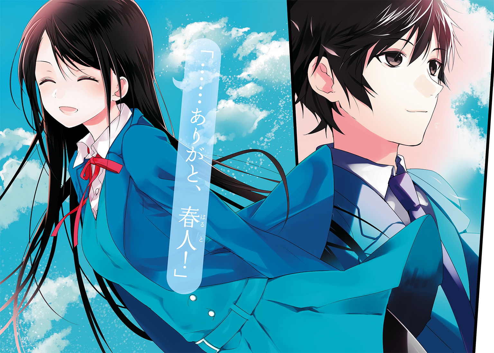
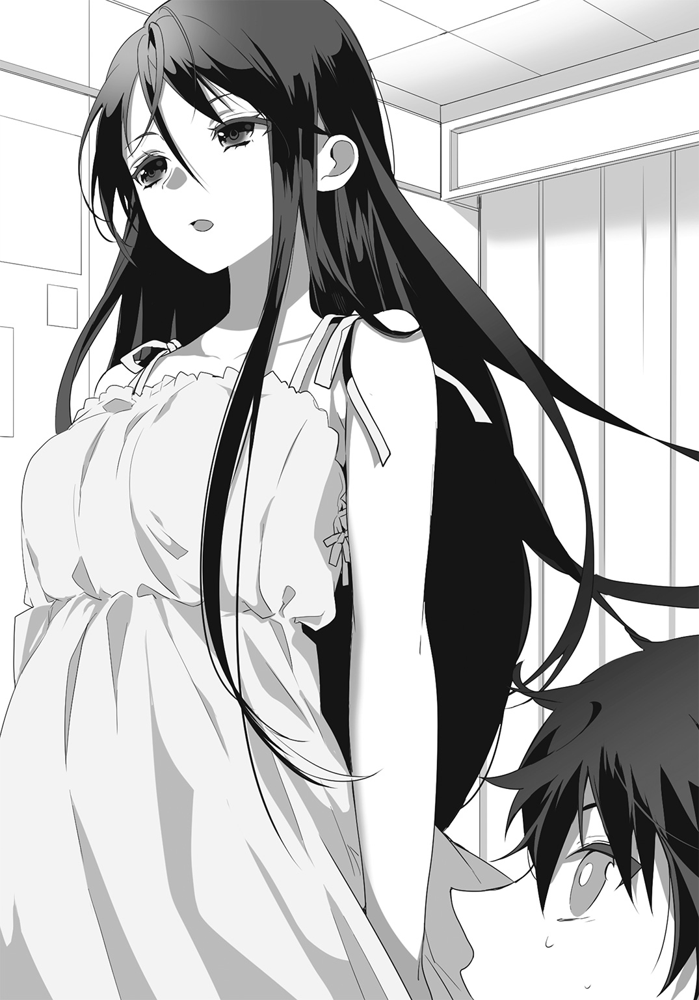
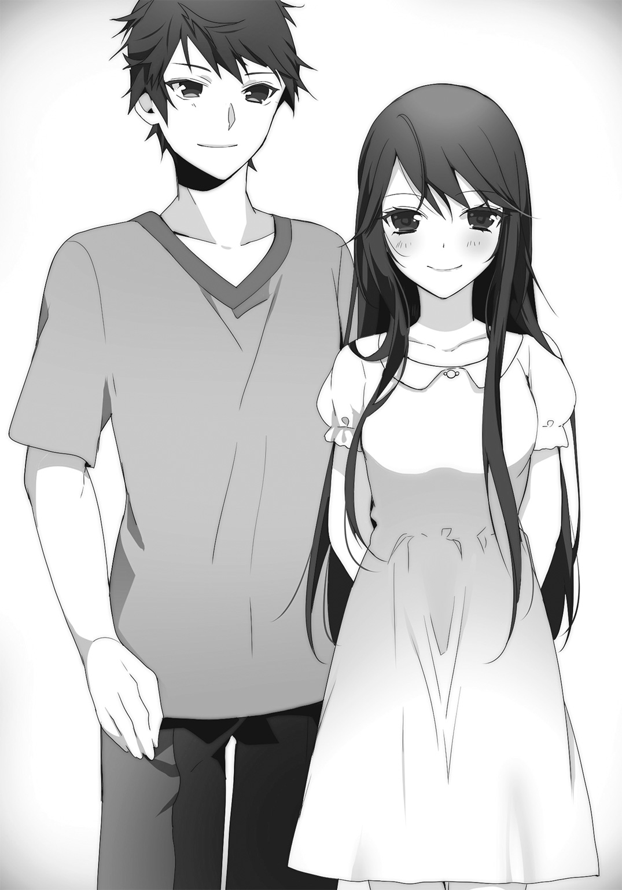

| 女子寮の寮長になった俺は、ご当地女子と青春できるだろうか | |
| 城崎火也 | |
この本は縦書きでレイアウトされています。
また、ご覧になる機種により、表示の差が認められることがあります。

 ダッシュエックス文庫DIGITAL
ダッシュエックス文庫DIGITAL
女子寮の寮長になった俺は、ご当地女子と青春できるだろうか
城崎火也
プロローグ
「女子寮か......」
なんとしても、寮生の女の子たちと仲良くならねば――。
悲壮な決意を胸に、五十嵐春人は新しく建てられたばかりの二階建ての女子寮を見つめた。
白い外壁の瀟洒な洋館風の建物は、この緑豊かな郊外の景色から明らかに浮いている。
この場違いにお洒落な建物が、春人のこれからの住まいだ。
春人はとある事情で、これから入学する高校の女子寮の寮長に任命されてしまった。
行き場のない春人は、これから寮長としての務めを果たすことを条件に、特別に女子寮に住むことを許されたのだ。
現在、女子寮に入っているのは地方から上京してきたという四人の女の子たち。
彼女たちは昨日到着したばかりだという。
新入生同士、仲良くなれればいいが――。
うまくいかなかったときのことを考えると恐ろしい。高校入学前に宿無しだ。
勇気を振り絞り、春人は女子寮の玄関をくぐった。
第一印象は大事だ。背筋を伸ばし、大きく息を吸う。
「こんにちは......」
渡された鍵で解錠し、おそるおそるドアを開ける。ステンドグラスの飾りがついた洒落た白いドアだ。
ゆったりした玄関ロビーの奥に、フローリングの廊下と木製の階段が見えた。
寮内は静かで、人の気配がしない。春人はドキドキする胸を押さえた。
一人っ子だったので、同年代の女の子たちとの生活というのが想像つかない。
しかも、春人は東京生まれの東京育ち。地方出身の女の子とも馴染みがない。
いったい、どんな女の子たちがいるのだろう......。仲良くできるだろうか。
「お、お邪魔します......」
とりあえず春人は靴を脱ぎ、廊下に上がった。
そのとき、階段を下りてくるトントンという軽やかな足音が聞こえた。
春人は目の前にある木の階段を見上げた。
「......!!」
一人の女の子が階段を下りてきた。長い明るい色の髪が、足取りに合わせてふわふわ揺れている。
はっきりした顔立ちの、ちょっと気が強そうな可愛い女の子だ。
そこまではよかった。
問題は、彼女がブラとパンツだけという下着姿だったことだ。
お互いの目が合い、時間が止まった――ように感じた。
茶色の水玉模様のブラに包まれた二つの大きい隆起――Ｅカップくらいありそうな胸だな。
くびれた細い腰の下には同じく水玉の下着。
――あれ？ 茶色の水玉じゃなくって、もしかして豹柄？
事態についていけず、ぼうっとそんなことを思っていた春人の耳をつんざくような悲鳴が貫く。
「ぎゃあああああ!! 痴漢！ のぞき！ 変質者!!」
「えええええええ？」
春人はびっくりして、きょろきょろと辺りを見回した。
いったい、どこに変質者が!?
「あんたのことや!!」
豹柄の下着姿の女の子が鋭くツッコミを入れてくる。それどころか、びしっと人差し指を春人につきつけてきた。
彼女の目はつり上がり、全身が怒りに満ちていた。その矛先は明らかに春人に対して向けられている。
「え？ 俺？」
春人は事態をようやく認識し、愕然とした。
な、なんで不審者扱いされてるの？
「ち、違うよ！ 聞いてない？ 俺は寮長で――」
「何言ってんの！ ここは女子寮やで!!」
女の子が関西弁でずばっと言ってくる。
春人は絶句した。
――もしかして、事前通達がうまくいっていない？
――どうしよう。いきなり女子寮に侵入した痴漢と間違えられてる!!
下着姿の女の子が果敢にも、階段を下りて春人に近づいてきた。
その目は鋭く、春人を睨んでいる。ぐっと拳を握っており、肩に力が入っているのがわかる。
彼女の体から発せられる戦闘的な空気に、春人は立ち竦んだ。
「えっ？ 何？」
間近に来たと思った彼女が、思わぬ素早さで春人の背面に移った。
彼女はさっと春人の腕をとると、そのまま強い力で引っ張った。
「わわ!!」
ふわっと体が浮いたかと思うと、春人は真新しいフローリングの床にしたたかに体を打ちつけていた。見事に投げ飛ばされたと気づいたのは、床に仰向けになってからだ。
「いたたたた！」
「観念しいや!!」
腕を捻られたまま押さえ込まれ、春人は悲鳴のような声を上げた。
やわらかい胸が当たっているが、今はその感触を楽しむ余裕もない。
「だから誤解だって！」
必死で叫んでいると、廊下の奥からバスタオルを巻いた小柄な女の子が出てきた。
風呂上がりらしく、髪が濡れている。
小柄な女の子は、押さえ込まれている春人を見て、びくっと肩を上げた。
怯えた目をして、じりじり後ずさりをしている。
やばい――どんどん状況がまずくなっていく。
焦りと痛みで額にじんわりと汗が滲む。
どこからどう見ても、女子寮に侵入し、取り押さえられた馬鹿な男子生徒だ。
颯爽と挨拶する新寮長の姿が無残にも消えていく。
「どげんしたと？ 何の騒ぎね？」
階段の上から声がして、女の子がもう一人下りてきた。
聞き慣れない方言を話しながら、まじまじと春人を見つめるボブカットに眼鏡の少女は、驚くほどスタイルが良かった。ショートパンツからすらっとした足が伸びている。
押さえ込まれている春人を見て、彼女は大笑いした。
「なっ、何これー！ あーっはっはっは!! 痴漢なの？」
「そうや！」
がっつり春人を押さえ込んでいる豹柄下着の少女が力強く言う。
「違う！」
そのとき、大笑いをしている眼鏡の女の子の後ろから、もう一人女の子が出てきた。
桜色のワンピースからすらりと伸びた足の形のよさに、目を奪われる。
長いストレートの黒髪。大きな黒い瞳に通った鼻筋、透き通るような白い肌と、恐ろしいほど整った美貌を持ったまるで人形のような美少女。
春人は一目で胸を打ち抜かれた。
――なんて綺麗なんだ。こんな綺麗な子、今まで見たことがない――。
だが、美少女の目に宿った侮蔑の光に春人は絶望を禁じ得なかった。
ああ、せっかく希望の高校に入学したっていうのに。
なんでこんなことに――。
春人は自分のトラブルメーカー体質を呪うしかなかった。
第１章 寮長任命
――ただし女子寮
春人の運命を変える事件が起こったのは、つい三日前のことだった。
「悪くない......」
これから三年間お世話になる男子寮を前に、春人はつぶやいた。
若葉丘高校の男子寮は想像以上に古くてぼろい、木造二階建てだった。
築五十年はたっているだろう。見るからに隙間風が吹き込むような寒々しい寮だった。力士の一突きで崩れ落ちそうだ。
噂によると、いまだに和式トイレで風呂にはムカデが出るらしい。
だが、文句は言うまい。
格安の寮費で住まわせてくれるのだ。このご時世に一人部屋、そして共同とはいえ風呂とトイレ、朝晩の食事付き。
しかも、去年改築した女子寮とは違い、男子寮はこのボロさゆえに入寮希望者がいないらしく、なんと貸し切りで使えるという。
裕福ではないのに一人暮らしを希望している春人にとって、これ以上はないという好条件だった。
錆びた鉄格子の扉を押すと、耳障りなギギッという音とともにぎこちなく動いた。手にはざらっとした感触が残り、赤錆の欠片がこびりついていた。
まるで廃墟に入るような気分で、春人は雑草が生い茂る荒れ果てた庭の飛び石を六つほど歩いて引き戸に手をかけた。
「お邪魔します......」
ガタガタと軋んで開閉を拒む引き戸をなんとかこじ開け、春人はようやく寮の玄関に入った。
広々とした土間はがらんとしていて、暗く湿った空気に満ちていた。
既に退寮した人間の置き土産だろうか、ぼろぼろになったスニーカーが片足分転がっているのも物寂しさを加速させている。
たたきの奥の廊下も暗く静まり返っていて、人の気配はない。
「すいませ――――ん!!」
大きい声を出してみたが、返事はない。
今日、学校の用務員さんが来てくれるはずなんだけど。
ちょっと遅れているのかな。
「いててて......」
春人は顔をしかめて肩を見た。
身の回りのものと教科書などの学用品をいれたボストンバッグが、鍛えているとは言い難い春人の肩にがっちり食い込んでいる。
同じ都内だからといってなめていた。春人の住んでいた浅草から学校があるＹ市まで、電車とバスを乗り継いで二時間半以上かかったのだ。
「もっと荷物を減らしておけばよかったな......」
だが、貧乏な春人は荷物の配送料をケチってしまい、できうる限りの荷物をボストンバッグに詰めこんだのだ。
「よいしょ」
ちょっと置かせてもらおう......。
春人は重みに耐えかね、よろめくようにして肩からボストンバッグを下ろした。
「ふう......」
岩でも入っているかのようなボストンバッグをたたきの上に置いたその瞬間だった。
みしっと木の軋む音がした。
「え......？」
思わず見上げた春人の顔に、パラパラと埃が落ちてきた。
「うわっ、ぺっ、ぺっ!!」
無防備に開けた口に飛び込んできた埃を必死で吐き出そうとした春人の耳に、再び不吉な音が聞こえた。
びしっ、みしみしっ!!
「うそ......」
長年蓄積された重みに耐えかねたようにしなる太い梁を、春人は驚いて見つめた。
まさか......。
春人はボストンバッグをひっつかむと、外へと思いきりダッシュした。中学のときにチンピラ高校生たちに襲われたとき以来の速度だ。
背後から何かがへし折れ、崩れていく音が追いかけてくる。恐怖心で何も考えられない。
走れ！ 走れ！
バキバキバキ――ズシーン!!
「ひいいいいいい!!」
転がるようにして門までたどり着いた春人が振り返った瞬間、長い間寮生の生活を支えてきた男子寮が見事に崩れ落ちていた。
＊
「困ったことになったね......」
「はい......」
校長室で腕を組む校長を前に、春人はうなだれた。
校長の残り少ない髪の毛が、ため息とともにはらりと落ちた気がした。
だが、絶望感なら自分の方が大きいはずだ。
せっかくの住まいが目の前で崩れ落ちてしまったのだから。
しかも、原因は自分。
「申し訳ありませんでした」
春人はもう一度深々と頭を下げた。
「いや、こちらの管理不行き届きという面もあるしね。怪我がなくて何よりだった」
「はい......」
これからどうなるのだろう。両親は田舎に引っ越してしまってもう実家はない。寮以外で一人暮らしをするお金もない。
せっかく奨学金付き、寮付きの願ってもない高校に合格したというのに。
顔から血の気が引いていき、胃が重い痛みを訴えてくる。
自分のクラッシャー＆トラブルメーカー体質を改めて呪う。
「で、きみの処遇だが」
春人はびくっと体を震わせ、校長を見た。
入寮初日に寮を壊滅させた新入生――まさか、退学？
胃がぎゅっと引き絞られる気がする。
「男子寮の建て替えに関しては、入寮希望者はきみ以外いないし、新たに建設する費用のめども立っていない」
「......」
当たり前だが、春人はショックを受けた。
いくら私立とはいえ、寮を新しく建てるのには莫大な金が必要なのは春人にもわかる。
でも、男子寮が廃寮だとすれば――。
「じゃあ、俺はどうしたら――」
「色々学内で検討したんだが、女子寮が去年改築したのは知っているね？」
男子寮とは桁違いの美しく立派な建物だという噂は聞いている。
「あ、はい」
「そちらで、寮長として住み込むのはどうだろう？」
「は......？ 女子寮に......ですか？」
意味がわからない。春人はぽかんと、苦渋の表情を浮かべている校長を見た。
「もちろん、男子が女子寮に入るのは本来禁じられている。だが、きみは優秀な奨学生でもあるし、住まいが早急に必要だ。それで考えたんだが、きみの行動範囲は基本的に一階の共有部分のみ。二階の女子の住居部分に立ち入るのは就寝の点呼や、用事があるときのみということでどうだろう？」
「住める場所があるのは有り難いんですが......」
とりあえず、女子寮というのは置いといて、重要なのは金額だ。
「......寮費はどうなるんでしょう？ 男子寮は月に二万円という破格の寮費でしたけど......」
だから、庶民である自分にも一人暮らしが可能だったわけだが。
「女子寮の寮費は朝夕の食事付きで七万円だ」
校長の言葉に、春人は膝から崩れ落ちそうになった。
七万円――予算の倍以上だ。
やっぱり......。あんな新しい建物の一人部屋で二食付き。それで七万円は東京では破格の安さとわかっているが、今の春人にとっては手の届かない額だ。
アルバイトをフルに入れれば可能かもしれないが、学費免除の奨学生は学年で十位以内キープが条件だ。
卒業後に出世払いとかダメだろうか。
春人が交渉しようとしたとき、校長が先に口を開いた。
「で、当初の寮費より五万円アップというのは厳しいだろうということになった。それに、当校は届け出ればアルバイトも可能だが、せっかくの優秀な奨学生の勉学の時間を削るのは本意ではない」
春人はこくこくと頭を激しく縦に振った。
わかってらっしゃる！
校長の両手をがっしりと握り、上下にぶんぶんと振りたいくらい同感だ。
「それで、きみを女子寮の寮長にしようということになった。つまり、寮生の面倒を見たり、戸締まりの確認や就寝前の点呼などをしてもらえれば、寮費は同じ二万円とする」
「あ、ありがとうございます！」
もちろん春人に異論はなかった。
二万円で暮らせる！ 学校に行ける！
よかった！
飛び上がってガッツポーズをしたい気分だ。
「で、今年の入寮生は四人。全員、地方から来る子ばかりだから、色々面倒を見てやってくれ」
「はい！」
「ただし、女子寮に男子生徒を入れるということは特別措置だということを忘れずに。寮生とうまくいかなかったり、トラブルが起きたときは即刻退寮してもらう」
春人はごくりと唾を飲み込んだ。破格の待遇には、それなりの条件があるということだ。
「寮長として務めを果たし、寮生たちと仲良くやるように」
「わ、わかりました！」
――寮長として、寮生たちとうまくやっていく。
このミッションさえ成功すれば、俺の三年間は保証される。
春人は校長の言葉を胸に刻み、女子寮に向かった。
とんでもない幕開けが待っているとも知らずに。
＊
「だから、誤解だって言ったでしょ」
寮生たちから連絡を受け、すぐさま飛んできた校長や教員によって誤解は解けたものの、女の子たちの視線が冷たい。
春人はしょんぼりと女子寮の一階にあるレクリエーションルームのソファに腰掛けた。
ゆったりした二十畳くらいの部屋は女子寮の交流用らしく、壁や家具がパステルカラーに彩られ、明るく可愛らしいが、女子につるし上げられている今、華やかな拷問部屋と変わらない。
「......そりゃそうだけど、こっちとしては女子寮にいきなり男が来てびっくりするやん。女の子たちしかいないと思っていたから、下着姿でお風呂に行こうとしていたわけだし」
むすっとこちらを見ているのは、豹柄の下着姿で春人を取り押さえた明るい髪色の少女だ。
今はもちろん、ちゃんと私服に着替えている。
「まあ、ええわ。私は豊田璃子。大阪出身」
「ああ、それで......」
春人は納得した。大阪の女性はやたらアニマル柄の服を好むとテレビで紹介していた。
豹柄は言うに及ばず、虎やシマウマの絵が描かれた服をこれみよがしに着ている年配の女性たちに驚いた覚えがある。ああいう服ってどこに売っているんだろう......。
「ああ、それで、って何なん」
春人の言葉が引っかかったのか、璃子がぎろっと睨んでくる。春人は一瞬で震え上がった。痴漢と思った春人に猛然と立ち向かってきた件も含め、かなり気が強そうだ。
「ううん、なんでもない！」
下着までアニマル柄なのは県民性なの？ それとも単なるきみの好み？ などと言おうものなら、顔面に拳を打ち込まれ、叩き出されてしまいそうだ。
言葉には気をつけないと。男子に比べ、女子には格段に気を遣う必要がある。
彼女たちと仲良くしなければ、寮に住めなくなる。
ここは寮長として彼女たちの役に立ち、信頼回復に努めなければ！
「改めて、五十嵐春人です。東京生まれの東京育ちなんで、何でも聞いてください」
背筋を伸ばし、自己紹介してみたが、寮生たちの反応は芳しくない。
まずい......。第一印象が最悪だったからな。
冷や汗が出てくる。
誰か何とかしてほしいが、この場を何とかするのは自分しかいない。
そもそも寮長に任命されたのだ。これからは何でも自分が仕切らなければならない。
新入生だから、などの甘えは通じない。過酷な道を切り開けるのは自分だけだ。
「あのっ、まずは名前を確認させてください」
春人はもらったリストを取り出した。とにかくやるしかない。
「ええっと、神子沢瑞貴さん？」
ずいぶん変わった苗字だな......。そう思いながら春人は読み上げた。
「はい」
小さな声がした。
「......っ」
声のする方を見た春人は思わず見とれて絶句してしまった。
腰まである、艶やかなストレートの髪、くっきりした黒い瞳、抜けるような白い肌。
春人はごくりと唾を飲み込んだ。
先ほど璃子に取り押さえられているときに、階段の上から冷ややかに見下ろしていた美少女だった。
瑞貴の紅い唇が小さく動いた。
「もういい？ 部屋に戻りたいんだけど」
「えっ......あ、一応全員の名前を確認するまでいてください」
どうやら自己紹介する気もないようだ。
いきなり一目惚れした美少女に嫌われてしまい、泣きたくなった。
「あんた、どこ出身？」
璃子が瑞貴に尋ねる。昨日寮に来たばかりで、少女たちもお互いを知らないらしい。
「......関係ないでしょ」
瑞貴の口から出てきたのは、素っ気ない一言だった。
一瞬にして室内の空気が凍る。もちろん、春人も凍りついた。
そっ、その言い方はないんじゃ......。
「......あっそ」
案の定、璃子が気分を害したようにそっぽを向いた。
あああああ、女の子同士もギスギスしている！ どうしよう！
春人はおろおろした。
だが、瑞貴が自分にだけ冷たいのではなく、他の人にも同じ態度と知ってホッとした。
人見知りなのかな......。
言葉数も少ないし、人慣れしていないのかもしれない。
とにかく切り替えよう！
「あ、じゃあ、次の人。奥園菜々美さん？」
「はあい」
菜々美は銀縁の眼鏡がよく似合う、ボブカットの少女だった。すらりとした長い足が印象的だ。
寮を訪れて璃子に取り押さえられたとき、大笑いしていた少女だ。
「福岡から来ました奥園菜々美です。趣味は読書。これからの東京の生活を楽しみにしています」
パラパラと拍手が起きる。
春人はホッとした。ようやくまともな感じになってきた。菜々美の方言は福岡のものだったらしい。春人にとっては初めて聞くタイプの言葉だった。
「じゃあ、最後の人......平良真帆さん」
「はいっ！」
小柄なツインテールの少女が笑顔で立ち上がった。
「......」
戸惑ったような空気が流れた。
真帆がどう頑張っても中学生にしか見えないからだ。下手をしたら小学生に見えるレベルで童顔だ。
たぶん、ツインテールという髪型も幼く見える原因だ。
あれ、この子って......。
春人はようやく気づいた。さっきは髪を下ろしていたから、すぐにはわからなかった。
バスタオル姿で出てきた子だ！
風呂上がりの姿を思い出し、顔が火照るのがわかる。
気まずい思いを隠せない春人に対し、真帆はまったく気にしていないかのように笑顔を浮かべている。
「沖縄から来た平良真帆です。ウチは八人家族だったので、寂しくないように寮に来ました。よろしくお願いします」
「は、八人？」
璃子が驚いたように声を上げた。
「そんなに兄弟がいると？」
菜々美もびっくりしたようで、真帆に尋ねる。
「えっと、兄が三人います。あとはおじーちゃんとおばーちゃん。それと両親」
「へえー！ 大家族やね」
璃子が感心したように頷く。
「だから、一人でご飯食べるのとか絶対寂しいって言われて。だから、みんながいて嬉しいです」
真帆のおっとりした笑顔に、部屋の空気が和んだ。
「か、可愛いな、あんた！」
璃子は真帆を抱きしめているし、寮のマスコット的存在になりそうだ。
対して台風の目になりそうなのが――。
春人はちらっと瑞貴を見た。
瑞貴は興味なさげに、そっぽを向いている。
「全員の名前を確認したし、もういいでしょ？」
素っ気なく言うと、瑞貴が立ち上がった。
整った小さい顔、艶やかな黒髪、すらっとしたスタイルと、都心でもなかなかお目にかかれないほどの美少女だが、いかんせん近づくなオーラがびりびりと出ていて声もかけづらい。
それは春人だけではないらしく、他の少女たちも重苦しい空気に気づいて表情を強張らせている。

「お先に」
それだけ言うと、瑞貴は長い黒髪をさらさらと揺らせて、さっさと歩き出す。
「ふぬおっ！」
ガン！ という痛そうな音と、瑞貴の奇声が部屋に響いた。
瑞貴が優雅に部屋を出ようとして、入り口の木枠に肩をぶつけたようだ。どうやら目測を誤ったらしい。
「だ、大丈夫？」
春人は思わず声をかけた。
「すごい音がしたね......」
「痛そう......」
他の寮生たちもびっくりしたようで、瑞貴を見ている。
瑞貴は無言でぶつけた肩を押さえている。
恥ずかしいのか痛いのか、耳まで真っ赤になっていた。
そして結局何も言わず、よろけながら部屋を出ていった。
「......」
何とも言えない空気が部屋に流れた。
瑞貴はほとんど話さなかった。だが、全員が感じていた。彼女からのメッセージを。
――私に構わないで、と。
とりつく島もない瑞貴の態度に、春人は暗澹たる気分になってきた。
寮生たちとうまくやる。それが、寮長として女子寮に住む条件なのだ。
このままだと追い出されかねない。
何より、瑞貴に冷たい態度をとられるのがつらい。
仲良くなりたいなー。
そう思うが、とっかかりが摑めない。そもそも、女の子に対するコミュニケーションスキルなどないに等しい。
インターホンが鳴り、春人は慌てて玄関に向かった。
「はい？」
ドアを開けると、その向こうにいたのは宅配業者だった。まだ学生のような若い男性が、段ボールを抱えている。
「すいません、奥園さんのお荷物を届けに来ました」
「はあ......」
奥園って誰だっけ......そう思いながら、春人は名前を呼んだ。
「奥園さ――――ん！ 荷物が届いてるけど」
春人が呼ぶと、菜々美が駆けてきた。ああ、福岡出身の眼鏡の子か。
菜々美がさらさらとサインしている間に、段ボールが何箱も運び込まれてくる。
春人は呆然と玄関に積まれていく段ボールを見つめた。
「すごい荷物だね......」
「えへへ」
菜々美は照れくさそうに笑ったが、中身についてはまったく触れない。
何だろう。服とか？ それにしても十箱は多くないか？
「運ぶの手伝うよ」
部屋は二階だし、何度も一人で往復するのは大変だろう。
「あ、ばり重やろ？」
菜々美の言葉の意味がわからず、春人はぽかんとした。
「ばりおも......？」
「あっ、すごく重いって意味！」
菜々美の顔が赤く染まる。
「そっかー、ばり重って方言だったんだ。普通に使うから......」
「へえー、そうなんだ」
方言って面白いな。日本って小さい国だけど、地域によって使う言葉がかなり違うんだよなあ。
地方の人と触れあう機会がなかった春人には新鮮な響きだった。
「よっと......」
段ボールを抱えるようにして持ち上げようとして、春人は愕然とした。
「えっ!?」
小さい段ボール箱だから油断していた。本当にずっしり重くて、持ち上げようとした春人の腰にぴきっと痛みが走る。
「こ、これ......中身何？」
「ふふふ、ちょっとね」
菜々美は笑ってばかりで答えない。
「たくさんあるから助かるわ。ありがとう！」
菜々美の言葉に、やる気が出てきた。
よし、ここでポイントを上げて、名誉挽回していこう！
「よっと......！」
春人は気合いを入れて段ボールを抱えると、しっかり足を踏ん張って歩き出した。
「私の部屋は２０３号室だから、その前に置いておいとーと」
「わかった」
春人はもらった女子寮の資料を思い出していた。
一階はいわゆる共用部分で、食堂や交流用のレクリエーションルームなどがある。ちなみに春人の部屋は一番奥の客室だ。
そして、二階が女の子たちの住居で、部屋が八つある。
二階か......。
さきほど見た段ボールの山を思い浮かべ、春人はげっそりした。
だが、ここは男子が寮にいて良かったと思ってもらえるチャンスでもある。
人が訪ねてきたときも、男子が応対した方が女の子たちは安心だろう。
力仕事担当＆ボディガードとして認められれば、追い出されることもない。
これは起死回生のチャンスだ。
春人はゆっくり階段を上り始めた。
「がんばれー！」
下から菜々美の応援が聞こえる。
そのとき、下の騒ぎが気になったのか、上から瑞貴が顔を出した。
さらりと長い黒髪が揺れる。
あ――。
窓から吹き込んだ風で、まっすぐ立っている瑞貴のスカートがめくれ上がった。
階段の下から瑞貴を見上げている春人の視界に、白い下着が目に飛び込んできた。
「......！」
瑞貴の真っ白い頰が、瞬時に赤く染まる。
慌ててスカートを押さえる仕草も、恥ずかしそうにこちらを睨む目も、すべてが可愛い。
そして、その一瞬の油断が命取りになった。
ぐらりと春人の体が揺らいだ。
驚愕の表情でこちらを見る瑞貴が遠ざかっていく。
まずい！ このままだと頭か背中を階段で強打してしまう！
咄嗟の判断で春人は体をひねった。
手にした段ボールを思い切り階段に叩きつけるようにして、クッションにする。
「うわああああああ！」
段ボールを通して鈍い衝撃が伝わってくる。
なすすべもなく、春人は段ボールとともに階段を転がり落ちた。見事に一階に逆戻りだ。
春人はショックと衝撃で動けなかった。一瞬、死が見えた。
「ああああああ！ 大丈夫？」
真っ青になった菜々美が駆けつけてくる。
「どうしたん!?」
レクリエーションルームから、璃子や真帆も飛び出してきた。
「階段から落ちたんか？」
「あきさみよ――！ きゅっ、救急車？」
女の子たちのおろおろした声が降ってくる。
「う......っ」
春人はそっと体を起こした。
手や足やら、あちこちがズキズキ痛むが、幸い大きい怪我はなさそうだ。
段ボールをクッションにしたのが功を奏したらしい。
「いてて......」
「だ、大丈夫？ 救急車を......」
心配そうな菜々美に、安心させるように微笑みかける。
「いや、大丈夫みたい......」
「なんやこれ――――！」
璃子の絶叫に春人は辺りを見回した。
クッションになった段ボールの口が開き、中身が辺りにぶちまけられていた。
「何......本？」
そこには何十冊もある薄い本が散らばっていた。
表紙には男の子の絵が描かれている。それは半裸だったり、全裸だったりして、男同士で抱き合ったり、見つめ合ったりしている。
「......えっ？」
春人は呆然と散乱した本を見つめた。これってもしかして――。
「ああっ！」
菜々美が飛びつくようにして本を拾うが、とても拾いきれない。
本を抱えたままうつむいた菜々美に、全員の視線が集中する。
「あんた、オタクってやつ？ これ、同人誌やろ？」
璃子がズバリと指摘する。
「ちょ、ちょっと、そんなストレートな......」
明らかに菜々美は隠したがっている。
春人は止めたが、もう全部見てしまった後なのは確かだ。
菜々美が深いため息をつき、眼鏡のブリッジを指でくいっと上げると立ち上がった。
「バレたら仕方ないばい。そう、私はいわゆる腐女子ってやつ」
「ふじょし......？」
ぽかんとしている春人を見て、菜々美が再びため息をつく。
「そりゃ知らないわよね、普通の人は。ばってんＢＬが好きなオタクって言えばわかる......わけないわよね」
外国語を聞いているかのような春人の顔を見て、菜々美が仕方なさそうに説明してくれた。
「ああもう！ 一般人に説明しなくちゃいけないなんて！ 簡単に言うと、男同士の恋愛を描いた話が好きってこと」
「へえ......そうなんだ」
なんで菜々美が顔を赤くしているのかよくわからない。
それにしても、男同士の恋愛を書いた本がこんなにたくさんあるとは知らなかった。もしかして、あの段ボールの中身が全部そうなのだろうか。
菜々美が腕組みをしたまま、むすっと話を続ける。
「だから上京してきたの。必死で勉強して」
「なんで？」
男同士の恋愛の本が好きということと、上京することがまったく繫がらない。
ぽかんとしたままの春人に苛立ったように、菜々美が声を荒らげた。
「おおっぴらに言える趣味じゃないから！ 奇異の目で見られるのが嫌で、ずっと隠していたの！」
菜々美の勢いに、春人はただ頷くしかできなかった。
「そ、そうなんだ......」
なんで怒ってるんだろう。秘密を知られたから？
菜々美がぐっと拳を握った。
「それに、東京はオタクにとってパラダイスだから！ お小遣いさえあればコミケやイベントも行き放題！ 新刊も買い放題！ アニメも見放題！ 地方は新刊もアニメも時期がずれたり、入ってこなかったり、大変なの！」
「へ、へえ......」
菜々美の熱い語りに、春人だけでなく、他の寮生も圧倒されて口が挟めない。
「なのに、なんでここ、こげん田舎っぽいと？ 本当に東京？」
「まあ、一口に東京って言っても都心だけじゃないから......」
「だって、東京だよ？ なのに、なんでこんなに緑がいっぱいで、たぬきが出そうで、お店がないと？ 田舎と変わらないじゃない！」
菜々美がヒートアップする。一番隠しておきたいものがバレた今、自分を取り繕う必要がなくなったようだ。
春人たちの入学する高校は住所は東京とはいえ西部の郊外で緑が多く、都心に出るのも一時間以上かかる。
「まあ、落ち着きや。別にそんなん隠さんでもええやん」
璃子があっさり言った。
「中学でも友達におったわ、そういう男同士の話が好きな子。その本、薄いのにえっらい高いんやろ？ 友達は早くバイトをしていっぱい買いたいし、高校に入ったら自分でも本を出したいって言ってたわ」
「そ、そう......」
もっと気持ち悪がられると思っていたのか、菜々美が意表をつかれたように口ごもった。
「私は別に興味ないけど。でも、ええんちゃう？ 趣味なんやから、別に人から認められなくても。好きなもんは好きなんやから」
「本当にごめんね......。俺のせいで」
春人は手を合わせて頭を下げた。
ずっと必死で隠してきて、故郷まで出てきた菜々美。
なのに、あっさりバラしてしまった。
自分のクラッシャー体質のせいで。
菜々美は黙ったままだ。
春人はごくりと唾を飲み込み、祈るように手をがっしりと合わせた。
ああ、もうダメかも。
「いいよ、もう」
菜々美がしょうがなさそうに微笑んだ。
「ずっと隠しておくのもしんどいし。むしろ早いうちにバレてよかったかも」
「そ、そう？」
思いがけない言葉に、春人は驚いた。
菜々美がこくりと頷く。
「だから気にしないで、運ぶの手伝って。あ、中は見ないでね！」
「わかりました！」
春人はホッとして、大きく頷いた。
「あの本、すっごい刺激的な中身やねんで」
読んだことがあるのか、璃子がそっと囁いてくる。
だが、これ以上トラブルを起こしたくない。
中は絶対見ないように気をつけて、春人は二階に本を運んだ。
開き直ったのか、菜々美は部屋にまで春人を入れて指示をしてきた。
「その本はこっちの本棚。あ、それは文庫だからこっち」
「はいっ！」
菜々美の部屋には空の本棚が三つ並べられていた。他にはベッドと勉強机。シンプルだが使いやすそうな六畳の洋室だ。
初めて入る女の子の部屋だったが、感慨にふける間もなく春人は言われるがままに本を運び、本棚に並べた。
いったい何百冊あるのだろう。三往復する頃には汗だくになっていた。
「えらい数やな、手伝おうか？」
「私も手伝います......」
見かねたのか、璃子と真帆が手伝いに来てくれた。
おかげで一時間ほどで大量の本が本棚に綺麗に片付いた。
「やった！ こげん感じで本棚に並べるとが夢やったとよ」
菜々美が部屋を見回し、嬉しそうに言う。
「そうなの？」
「実家じゃ段ボールにいれて押し入れに隠してたからね。あー、上京してきてよかった！」
菜々美が笑顔で頭を下げてきた。
「綺麗に片付いてよかった。ありがとう！」
「なんくるないさー。寮生同士、助け合うのは当然さよー」
真帆がおっとり言う。
「なんくるないさーって知ってる！ やっぱり沖縄の人って使うんや！」
璃子が興味津々に菜々美を見る。
「あんたはどう？ 面白い方言ってないん？」
「私は福岡だけど。面白い方言って言われても......」
そのとき、菜々美が壁を見てぎょっとしたように飛び退った。
「カベチョロ！」
「は？」
春人たちは意味がわからず部屋の壁を見た。何を言っているんだろう。
「カベチョロ......？」
「ほら、あれ！ よく見て！」
菜々美が指差す方をよく見ると、壁にヤモリが張り付いていた。
「ああ、ヤモリのこと？」
「ヤモリ？ カベチョロじゃなくて......？」
心底不思議そうに菜々美が言う。
「ていうか、カベチョロって初めて聞いた。東京でも言う？」
璃子に尋ねられ、春人は首を振った。
「へえ、福岡って面白いな......。もっと喋ってよ！」
「はあ？ あんたこそ、なんか関西弁で言ってみてよ！」
菜々美がムッとしたように言い返す。
「いいよ。〝あれってチャウチャウちゃうんちゃう？〟」
璃子が堂々と言いはなった。
「は？ ちゃうちゃうちゃう......って？」
頭が混乱する。菜々美と真帆もぽかんとしている。
「大阪弁の鉄板のネタやん。〝あれってチャウチャウと違うんじゃない？〟って言うてんの」
どうやら最初のチャウチャウは犬のことだったらしい。
「はー、方言ネタもあるのかー。さすが大阪」
菜々美が感心したように言う。そのとき、小柄な真帆が勢いよく手を挙げた。
「じゃあ、私も沖縄弁やりますよー。いちゃりばちょーでー」
「なんやそれー！ 全然わからん！」
「えっ、外国語みたい。それ本当に沖縄弁なの？」
春人たちの反応に、真帆が満足げに頷いた。
「そうですよー。『一度会ったら皆兄弟』って意味です」
「へえ――――!! 沖縄っぽい！」
女の子たちも徐々に馴染んでいる姿を見て、春人はホッとした。
かなり個性的な面々だけど、うまくやっていけるといいなあ。
「あ、そろそろ夕ご飯の時間ですよ」
女子寮では朝と夜にまかないが出る。どちらも七時にご飯だ。
思いがけない運動をしたせいで、お腹がすいている。春人たちは階段を下りて一階に向かった。
食堂に入ると、もう五人分のトレイが長テーブルに並べられている。
メニューはご飯にお味噌汁、小鉢に入ったポテトサラダ、豚肉のショウガ焼きにキャベツの千切りのセットだった。
「わー、美味しそう！」
席についた璃子が嬉しそうに声を上げた。
「こんなん、毎日食べられるん？」
「学食と提携してるから、朝と夜はまかないが食べられるよ」
「嬉しい～」
春人は笑顔で頷いた。
うん、俺も嬉しい。
昼は自腹だが、朝夜は寮費で賄える。ああ、本当に寮に入ってよかった！
四人でご飯を食べ始めると、瑞貴が食堂に入ってきた。
春人はドキッとしたが、瑞貴は無言で離れた席についた。
やはり一言もこちらに声をかけない。
人見知りなのか、嫌われているのか......気になって春人はついちらちらと瑞貴を見てしまった。
ぴんと背筋を伸ばし、綺麗な箸使いでゆっくりご飯を食べている。見るからに上品な所作で、きちんとした家庭で育ったことが見てとれる。
お茶の入ったコップを手に取ろうとして、見事に摑み損ねた瑞貴は勢いよくコップを倒した。
「へあっ！」
奇妙な声を上げた瑞貴が、慌てたようにふきんを手にして必死でこぼれたお茶をふいている。
手助けしたかったが、嫌がられそうでやきもきしながら見つめるしかできない。
「どしたん。あんた、なんか落ち着きないなー」
璃子に指摘され、春人はぎくりとして茶碗を落としそうになった。
「そ、そう？」
「うん。もらわれてきたばっかりの子犬みたいやで」
「い、犬......」
悪気はないようだが、ずばっと切り込まれて春人は絶句してしまった。
やっぱり大阪ってはっきり物を言うタイプが多いのかな。
対照的に瑞貴はほとんど話さないし、やっぱり出身地によってノリが全然違うなあ。
「そういえば、あんたらなんで自分のとこの方言をあんまり話さへんの？ だいたい標準語で話してるよね？」
璃子の疑問に、菜々美と真帆が顔を見合わせた。
「私はせっかく東京にいるから、そこの言葉を話したいなーって思ってる。たまに博多弁が出ちゃうけどね」
菜々美がそう言うと、璃子が納得いったように頷いた。
「そういう考えもあるかー。私は標準語、話せそうにないけど」
「くゎっちーさびたん」
真帆の呪文のような言葉に、春人たちはぽかんとした。
「ごちそうさま、って言ったの。私の場合、沖縄の言葉はわからない人が多いから、基本的に標準語を使おうと思ってる」
「な、なるほどねー。確かに全然わからんわ」
「外国語みたいだよねー」
楽しそうに話す三人を見て、春人はじっと考えた。
こうやって自然と話せるようになった自分たちと、瑞貴は明らかに隔たりがある。
このままじゃよくないな。放っておくと、どんどん話しかけづらくなる。
ご飯を食べ終わる頃合いを見て、春人は立ち上がった。
やっぱり、ちゃんと五人全員で話す機会を作ったほうがいいな。こういうのは最初が肝心。
「あの、ご飯を食べたら隣のレクリエーションルームに来てください」
春人の言葉に、食べ終えた五人がぞろぞろと隣の部屋に移った。
なんだか変な気分だ。家でも学校でもない場所で、よく知らない女の子たちとご飯を食べて、彼女たちと暮らしていくなんて。
レクリエーションルームは暖色のカーペットと明るいパステルカラーの壁紙で、くつろげる雰囲気がある。
四人の少女がそれぞれ思い思いのソファに座り、こちらを見た。
少女たちの視線が集中し、春人はドキッとした。
「改めまして、寮長の五十嵐春人です。これから寮生活を送るに当たって、何でも相談してください。手伝ってほしいことがあれば遠慮なく言ってください。俺の部屋は一階なので、用がないときは二階に立ち入りませんが、就寝前の十時の点呼と朝の声がけのときは全員の部屋を訪ねます。よろしくお願いします」
頼むから、下着姿とかバスタオル姿で出歩かないでほしい。暗にそう言ったつもりだ。
「はーい」
璃子たち三人から明るい返事が返ってくる。瑞貴は無言で興味なさそうにそっぽを向いている。
「これから五人で生活をしていくわけなんで、親交を深めたいと思います。ちょっと時間をください」
まだ女の子同士、相手のことをよく知らないし、特に瑞貴はそうだろう。早めにこういう場を設けて、馴染めるようにしたかった。
「じゃあ、えっと......」
春人は一番話しやすそうな璃子を見つめた。
え―――っと、苗字、なんだっけ。
事態を察した璃子が、じろっと睨んできた。
「豊田璃子！」
「あっ、そうだね。豊田さん、豊田さん」
やばい、ちゃんと名前を覚えておかないと。仲良くなる以前の問題だ。
大阪出身の豊田さん......大阪城を造った豊臣秀吉の豊と覚えておくか。
「えっと、趣味は何ですか？」
「見合いか！」
璃子がびしっとツッコミを入れてくる。さすが大阪出身。
「すごーい、漫才みたい」
菜々美と真帆が感嘆の声を上げたので、璃子が照れくさそうに笑った。
「そんな大したもんちゃうけど......。そうやな、スイーツの食べ歩きとか？ 東京には色んな店があるから、頑張って行くつもり」
「へえー、大阪の人ってお好み焼きとたこ焼きが好きなんだと思ってた」
何気なく言った春人の言葉は、璃子の逆鱗に触れたらしい。
璃子の目がつり上がり、春人は震え上がった。
「はあ？ お好み焼きとたこ焼きが好きなんは当たり前やろ！ 大阪の人間はそれしか食べないと思ってるん？」
「いっ、いえっ！」
実はちょっと思っていました！
だが、とてもそんなことを言える雰囲気ではない。
「思ってません、思ってません！」
春人は慌てて首を振ってみせたが、璃子がじろりと睨んでくる。
「なんか噓くさいけど、まあええわ」
璃子がつんと顔をそらせ、足を組み直す。相変わらずスカートが短すぎて、今にも下着が見えそうだ。春人はなるべく下の方を見ないよう気をつけた。
「あのー、ちょっと聞きたいんだけど」
菜々美が手を挙げた。
「あ、どうぞ」
春人に促され、菜々美が璃子の方を向いた。
「大阪の人って一家に一台たこ焼き器を持ってるって本当？」
「うーん」
璃子が首をひねった。
後ろで結ったポニーテールがふわりと揺れる。
「どうやろ。持っていない家もあると思うよ。でも、今までたこ焼き器を持っていないって人に会ったことないけど。もちろん、私も持ってきたし」
「えっ、たこ焼き器、大阪から持ってきたの？」
春人は驚いた。実物など見たことがない。
「へえー！ 今度見せて！」
目を輝かせる菜々美に、璃子が満足げに頷いた。
「ええよ。わざわざ道具屋筋に行って買ってきたんやで！」
楽しそうに話す二人に、春人はホッとした。
よし、この調子でいければいい。
「じゃあ、えっと......」
春人は菜々美を見つめた。
えっと......男同士の恋愛の本を大量に持っている、福岡出身の......。ほら、あれだ。宅配の人が呼んでただろ、名前を。
「奥園菜々美」
絶句している春人を憐れむように、菜々美が自ら名乗ってくれる。
「あっ、はい、奥園さん......」
春人は必死で苗字を覚えようとした。
秘密の趣味を持っている人......秘密の花園っぽいから、奥園とか覚えておくか。
「奥園さんは本が好きなんだよね？」
「うん、まあ。ＢＬ以外の本もいっぱいあるから、興味がある人は声かけて」
「お勧めってある？」
真帆の問いに、菜々美が頷く。
「ジャンルを言ってくれたら出すよー」
「ホラー！」
真帆の無邪気な言葉に、室内が凍りついた。
「えっ、あんたホラー好きなん？」
璃子が驚いたように真帆に尋ねる。
「うん！ 夜に家族でホラー映画見たり、学校でホラー漫画をみんなで読んだりしてたよー」
「こんなに可愛いのに......恐ろしいな」
「ホ、ホラーは......もっていたかな」
菜々美が困惑したように首を傾げている。
「じゃあ......」
春人は真帆を見た。小さいし、ツインテールだし、ほんと高校生に見えないな。
「平良真帆です！」
春人が覚えていないと悟って、真帆が先に名乗ってくれた。
平良さん......。
春人は小柄な真帆をじっと見つめた。
胸が平らだから、平良さん......。
真っ先にそのことが浮かび、春人は愕然とした。
俺はなんて最低な覚え方をしようとしてるんだよ！
自分を殴りたい......。
そんな春人の胸の裡を知らない真帆が、無邪気に春人の質問を待っている。
「あの、平良さんの趣味は......」
「だから、見合いかっつーの!!」
璃子がすかさずツッコミを入れる。
「ああ、もう！ お約束やから、やってしもうたやん！ 反射で！」
璃子が頭を抱えて苦悩する。何がお約束なのかわからない。
「趣味......」
真帆が考え込む。ぴょこんとツインテールが揺れて可愛い。
「......お風呂？」
「は？」
「お風呂に入るのが好きです！ 寮が入り放題で嬉しいです。スーパー銭湯にも皆で行ってみたいなー。東京にはいっぱいあるんだよね？」
真帆に聞かれ、春人は慌てた。
「あっ、うん。ラクーアとか大江戸温泉物語とか、色々あると思う」
名前は知っているが、どれも春人にとっては入館料が高くて行ったことがない。
「じゃあ、あの、神子沢さん......」
春人が瑞貴に言った瞬間、璃子がびしっと指差した。
「あっ、あの子だけ名前覚えてる！」
ずばりと言われ、春人は焦った。
「なんで？」
「なんでって言われても......」
一目で好きになったから覚えていたとは言えない。
狼狽して口ごもる春人を瑞貴がじっと見つめると、いきなり立ち上がった。
「もういい？」
「えっ......」
春人が呆然としているのを尻目に、瑞貴がさっさとドアに向かう。
「はがっ！」
ソファの脇にあったローテーブルに瑞貴が足をぶつけ、悲鳴を上げる。そのまま、崩れ落ちるようにして脛に手を当てた。いわゆる弁慶の泣き所をぶつけたらしい。
「ああ......」
見ていた他の女の子たちからため息がもれた。
「あれは痛いよね」
「急所だ......」
「しかし、ようぶつかる子やなあ」
春人は声をかけようとしたが、瑞貴は気丈にも、何事もなかったかのように歩き出した。
そして、さっさと部屋を出ていく。
取り残された春人たちは、呆然と顔を見合わせた。
なかなか手強い。
時間をかけていくしかないか。
春人はため息をついた。
＊
夜の十時になり、春人はチェックシートを手に二階に上がった。
この日最後の仕事、就寝前の点呼だ。寮長の仕事をきちんとしなくては。
まずは２０１号室。瑞貴の部屋だ。
ドアのそばまで来ると、瑞貴の冷淡な態度が浮かんだ。
春人はごくっと唾を飲み込み、ノックをした。
無言でドアが開く。
ドアの隙間からワンピース姿の瑞貴が、むすっとした顔を覗かせた。
相変わらずの冷ややかな視線に身が竦む思いで、春人はドキドキしながら声をかけた。
「就寝前の点呼です。明日から学校だし、早めに寝て――」
もう充分でしょ、というように鼻先でドアが閉められる。
「あがっ！」
指を挟んだらしく、瑞貴が悲鳴を上げた。
再びドアが開いて、瑞貴が痛そうに指をさすっているのが見えた。
「だ、大丈夫？」
涙目の瑞貴がこちらをキッと睨み、無言でドアが閉まる。今度は指を挟まないようにゆっくりと。
春人はがっくりと肩を落とした。仲良くなりたいが、ここまではっきりと拒絶されてしまうととりつく島がない。
何か手立てを考える必要がある。
それにしても、ずいぶん痛そうだったな......。
物にぶつかったり、お茶をこぼしたり、指を挟んだり、わりと鈍くさいな。ドジっこってやつかもしれない。
春人は気持ちを切り替えて、隣の２０２号室をノックした。璃子の部屋だ。
「はーい！」
元気のいい声とともに、すぐさまドアが開いた。
「ひっ！」
胸元の開いたタンクトップにショートパンツの璃子の姿に、春人は思わずのけぞった。
璃子が無防備に見つめてくる。
「何？ ああ、例の点呼ね」
「ええ、はい......」
春人は必死で璃子を見ないようにしながら答えた。気を張っていなければ、豊かな胸の谷間に視線が吸い寄せられてしまう。
「......」
璃子の視線を痛いほど感じる。
「あ、あの、じゃあ、これで――」
「あのさ、あんたって春人って名前やよな？」
璃子が切り上げようとした春人の言葉を遮るように言った。
「えっ......ああ、はい」
今更、名前がなんだというのだろう。
ぽかんとする春人の腕が、ぐっと強く握られた。
「えっ」
「入って」
潜めた声とともに、腕を引っ張られる。春人はよろめくように前に進んだ。
「あっ......」
わけもわからず、春人は璃子の部屋に入ってしまった。
璃子が素早くドアを後ろ手に閉める。
その顔に笑みはなく、何かを決意したような厳しい表情が浮かんでいた。
「あのっ......なんですか？」
戸惑った春人は思わず敬語になってしまった。
女の子の部屋に二人きり、しかも相手はかなりの薄着だ。嫌でもさらけ出された肌に目がいってしまう。
春人はドキドキしてきた。
なんだ、これ、どういう状況なんだ？
まさか告白？ そんなわけあるか！
いきなりキスされるとか？ 何の妄想だよ！
春人は思わず自分に対してツッコミを入れてしまった。
「ちょっと相談があるねん」
璃子の言葉に、春人はようやく警戒を解いた。
ああ、そうか。寮長にこっそり相談したいことがあったのか。だから、自室に入れた、と。
納得した春人はようやく肩の力を抜いた。
「何かな？ 俺にできることがあったら――」
璃子の表情が固い。かなり深刻な問題なのだろうか。璃子がぽつりと言った。
「こう見えても、実は寂しいねん。家族と別れて」
「はい」
「だからさ、ちょっといいかな？」
「何が？」
璃子は言いづらいのか、なかなか用件を口に出さない。
ここは寮長である自分がリードすべきだろう。
「あの、俺は寮長だし、きみたちの面倒を見るのが仕事だから、遠慮しなくていいから」
「ほんま？」
璃子がちらっと上目遣いで見てくる。
「ほんま、ほんま」
大阪弁を真似すると、璃子の顔がようやくほころんだ。その顔に笑みが浮かぶ。
「わかった！ じゃあ後ろ向いて」
「？ わかった......」
春人は素直に璃子に背を向けた。いったい何なんだろう。
次の瞬間、背中に柔らかいものが当たったかと思うと、ぎゅっと背後から強く抱きしめられた。
「......？」
何が起こったのかよくわからないまま、春人は硬直した。胸の前でしっかり握られた璃子の手を見つめる。
温かい吐息が後頭部にかかる。どうやら、背後から璃子に抱きしめられているようだ。
うわーうわーうわ――――――!!
春人は口を押さえ、叫ぶのを何とか堪えた。騒ぎになって人が来たら最悪だ。こんなところを見られたら、退寮退学コースになってもしょうがない。
いったい、璃子はなんでこんなことをしているんだ？
「はあ......」
艶めいた声が耳をくすぐる。
「あー、落ち着くわ......」
うっとりとした璃子の声が続く。
「はあ？」
こっちは全然落ち着けないけど！ いきなり抱きつかれて、硬直しているんですけど！
背中にびっちり柔らかいものが当たっているし、やたら温かいし、何なんだよ、これ！
でも、璃子が幸せそうなのが伝わってきた。
これも寮長の務めなのか？
春人は何とか堪え、じっと大人しく動かなかった。
「はあ......ありがとう」
数分もそうしていただろうか。ようやく璃子が体を離してくれた。
春人はへなへなとその場に崩れ落ちた。
「ちょっ、どうしたん？」
璃子が驚いたように腕を摑んできた。
「びっくりしたんだよ！」
気づくとまだ肌寒い春の夜だというのに汗をかいてしまっている。
あまりにも色んな感情がわいていたが、とても説明できる気がしない。
春人はよろよろと立ち上がった。
おろおろしている璃子を真っ正面から見つめる。
「いったいこれは何？」
「えっ......」
「いきなり背後からその......だ、抱きしめられたらびっくりするだろ！」
まだ興奮さめやらぬ春人は、思わずキツイ口調になってしまった。
だが、璃子は怯まずににらみ返してきた。やはりかなり気が強い。
「あんたが悪いねんで！」
「なんで？」
春人は愕然として仁王立ちをしている璃子を見つめた。
逆ギレ？ なんだこの理不尽さは！
だが、璃子の目にみるみるうちに涙が浮かぶのを見て、春人は慌てた。
「あのっ、ごめんね？ きついこと言っちゃって......」
自分でも情けないが、女の子に泣かれるのは弱い。ハンカチを必死で探したが、そんな気の利いたものを持っているわけがない。
璃子が唇をかみ、涙をぐっと堪えるのがわかった。
「だって、ハルって名前で、ハルそっくりやねんもん！」
「は？」
全然意味がわからない。
呆然とする春人の顔を、璃子がいきなり両手で挟んできた。
「......やっぱり似てるわあ......」
璃子がまじまじ春人を見つめる。至近距離で見つめられ、春人は瞬きもできずに見つめ返した。
「は？」
「ハルって知らない？」
春人は頷いた。さっきから意味が全然わからない。彼女の大事な人なんだろうか？
「これ......」
璃子がスマホの写真を見せてくれる。
そこには巨大なクマのぬいぐるみが、大きいロッキングチェアに鎮座していた。かなり圧迫感のある茶色のクマだ。きょとんとした顔をして、どこか間抜けに見える。
「そっくりやろ？」
璃子の問いに春人は首を傾げた。
「何が？」
何を言いたいのか、さっぱりわからない。
「え？ だからハルにあんたが」
「ハルってこのクマ？」
「そう！ 関西一のテーマパーク、ズーランドのメインキャラクターやん！」
「知らないよ、そんなローカルキャラ！」
まさかこのクマキャラに似てるって言ってるのか？
春人の悲鳴に近い声に、璃子がムッとした。ローカルという言葉がコンプレックスを刺激したらしい。
「なんなん。大阪馬鹿にしてるんか。この東京モンが！」
すごい顔で睨まれ、春人は慌てた。目がつり上がり、少女とは思えぬ迫力がある。
「そ、そうじゃなくて、どこが俺と似てるんだよ？」
「そっくりやん！ 特に目とか！」
春人はもう一度スマホの画面に目を落とした。黒くて丸い目はどこかユーモラスな感じだ。
全然似てない。つーか、人ですらない！
「そう？」
「あと、ぽや―――ってしてるとことか」
「......全然わからないよ」
春人は脱力しそうになった。どういう感覚をしてるんだ。
「えー？ まあ、しゃあないわな。ハルを知らんかったら！」
春人の抗議はさくっとスルーされた。
「昔な、このビッグサイズのハルをもらってん。その頃は、私より大きかったんやで。すっごい嬉しくて、毎日ぎゅっと抱きしめて、一緒に寝ててん。しんどいときも、淋しいときも、この子を抱きしめたら落ち着くねん......」
璃子の手が見えないハルを追い求めるように動いた。
「でも、もう高校生やし、寮にあんな大っきいぬいぐるみ持っていかれへんから家に置いてきてん......」
「......そう」
いつも元気いっぱいの璃子が、しょんぼりと項垂れている。
「それにバレたら恥ずかしいやん？ 高校生にもなってぬいぐるみと一緒に寝てるとか！」
璃子が顔を赤らめた。
「えっ？」
ぬいぐるみと一緒に寝る？ 驚いたが、恥ずかしがっている璃子に追い打ちをかけてはいけないと、春人は平静を装った。
「あー、恥ずかしい。あんただけやで、家族以外で知ってるの」
照れ隠しなのか、璃子がバンバン背中を叩いてくる。
「いて！」
思わぬ力で背中が痛い。
「あんた、子どもみたいって思ったやろ！」
「えっ......」
思いました。
図星を指され、春人は慌てた。
「いや、その......」
「やっぱり！」
璃子がぐっと顔を近づけてきた。そして人差し指を唇に当てる。
「秘密やで！ 二人だけの！」
「わ、わかりました」
有無を言わせぬ迫力に押され、春人は慌てて頷いた。
「でな、またお願いしてもいい？」
璃子が上目遣いで見てくる。
「は？」
春人は驚いた。
「つまり、そのぬいぐるみの代わりをやれってこと？」
「そう！ 別に添い寝までしてくれとは言わないけど、たまにこう、ぎゅっとしたいねん」
冗談かと思ったら、璃子は真剣そのものだった。
「毎日じゃなくてええから！ たまに、ごくまれに、ちょっとだけ！」
女の子にこんなに必死で頼まれて、手を合わされて、頭を下げられて断れるわけないじゃないか。ずるいなあ。
「......いいよ」
春人はそう言うしかなかった。
「ほんま？」
璃子が顔を上げ、ぱっと顔を輝かせた。
それは何の曇りもない、輝くような笑顔だった。
無心で、素直な――正直、すごく可愛かった。
「ありがと――――!!」
「うわっ！」
今度は前から抱きしめられ、春人は思わず声を上げてしまった。
そして急いで璃子を引きはがす。
「わかったから！ だから大人しく、今日は早めに寝てください！」
「ありがとー。おやすみ」
春人はこくこくと頷くと、急いでドアを閉めた。
ドアを背に、ほうっと大きく息を吐く。
廊下は静かで、璃子の部屋での騒ぎは聞こえていないようだ。
それにしてもびっくりした。まさか部屋に引っ張り込まれて、抱きしめられるなんて。ぬいぐるみに似てるとか、二人だけの秘密とか、思い出すとクラクラする。
とにかく、これまでほとんど女子とふれあう機会がなかった自分には、無防備な部屋着の女の子に抱きしめられるなんて刺激が強すぎだ。
あんなことがまたあるなんて、大丈夫だろうか。いや、大丈夫。ぬいぐるみに徹すればいいんだ！
春人は妙な使命感と決意で、戸惑いを誤魔化した。
春人は何とか気を取り直し、２０３号室をノックした。散々入った菜々美の部屋だ。
「はーい！」
元気な返事はあるが、ドアは開かない。
「あのー」
「手が離せないから、勝手に開けて！」
仕方なく、春人はドアを恐る恐る開けた。今度は何が待ち受けているんだか。
さっきの璃子の部屋での出来事が刺激的すぎて、神経が過敏になっている。
「わっ！」
春人は部屋を見て、思わず声を上げた。
部屋の床に大量の本が散らばっている。おもちゃ箱をひっくり返したようだ。
その中心に菜々美が座り込んでいた。
「本を読んでたら、ついつい読みふけっちゃって......」
菜々美が照れくさそうに笑う。なるほど、この本を踏み越えていくのが大変だったというわけか。
しかし、苦労して片付けたんだけどな......。
「ところで何か用事？」
「あ、就寝の点呼」
「へー、大変だね。寮長って！」
菜々美の無邪気な言葉が突き刺さる。ほんと、何でこうなった。
平和な高校生活を望んでいただけなのに。
「読みたい本があったら持っていっていいよー」
「あ、大丈夫。じゃあ、あまり遅くならないようにしてね。明日は学校だから」
「はーい」
素直な返事だが、声に芯がない。どことなく上の空だ。
あれはたぶん、夜更かしする気だな......。まあ、親元を離れて自由になって、好きなことをしたくなる気持ちはわかる。
春人は最後の部屋に向かった。沖縄出身の真帆の部屋だ。
２０４号室をノックするが返事がない。
「平良さん？」
呼んでも返事がない。抜け出すとかは考えられない。まさか部屋で倒れているとか――最悪の事態を考えたとき、中からゴッと重いものが床に落ちる音が聞こえた。
「平良さん!?」
春人は慌ててドアを開けた。
「だ、大丈夫――！」
春人はそのまま固まった。
床には、パンツしか履いていない真帆が倒れていた。首からかけたタオルがかろうじて胸元を隠しているだけで、ほぼ全裸といってもいい姿だ。
何だこれ。何が起こってるの？
春人が呆然と見つめていると、ゆっくり真帆が起き上がった。
「いててて......。へへ、ベッドから落ちちゃった」
真帆が照れくさそうな笑顔を向けてきたが、春人はそれどころではなかった。
いや、問題はそこだけじゃなくて、なんでそんな格好をしていて、男性の前で普通に話せてるの？ 普通、悲鳴を上げて体を隠すもんじゃないの？
「どうしたの？」
真帆が沈黙したままの春人を不思議そうに見つめる。ほぼ全裸で。
こっちが聞きたいよ！
そう言いたかったが、驚きすぎて声が出ない。
「よいしょ」
真帆がゆっくりベッドに腰掛けた。タオルが揺れて、胸元がちらちらと見える。
「お風呂に入ったあと、気持ちいいからそのままゴロゴロしてたら落ちちゃったー」
首から提げたタオルがかろうじて胸の部分を隠しているが、今にもずり落ちそうだ。下着は赤い水玉じゃなくてイチゴ模様なのか？
春人の我慢が限界に来た。
「あの、服、着て」
かろうじてその言葉だけが出た。
「え？ ああ、大丈夫さー。思ったより暖かいね、東京」
真帆がぽやんと笑う。
だから、寒いとかそういう問題じゃないって！ いや、可愛いですけどね！ ああ、タオルで頭をごしごし拭かないで！ 色々見えるから！
「あの、就寝の点呼に来たんだ。だから、早く服を着て寝てください」
「わかったー。このまま寝る」
全然わかってねえ!!
春人はそう言いたいのをぐっと堪えた。いくら子ども体型とはいえ、同い年の異性なんですけど俺。
しかし、俺は寮長なのだ。落ち着け、穏便に済ますんだ。彼女に悪気はない。
「あー、その、それからごめん」
「？」
真帆がきょとんとして首を傾げる。
「......その、女の子の部屋に突然入って。そんな格好なのに」
真帆がおっとりと笑う。
「なんくるないさー。ウチは家族が多かったから、お風呂上がりはこんな感じさー」
「......」
にこにこしている真帆に毒気を抜かれ、春人は部屋を出た。
一階に下りて、自分の部屋に戻り、ようやく春人は肩から力を抜いた。
ああ、もうベッドに今すぐ倒れ込みたい。ただの消灯の点呼でこんなに疲労困憊するなんて。
いったい俺は何なんだ。ぬいぐるみで家族みたいなもんで......。
寮生の女の子たちの色んな顔や姿が次々浮かんできた。背後から抱きしめてきた璃子。本の山に囲まれた幸せそうな菜々美。裸体をさらして微笑んでいる真帆。冷ややかにこちらを見る瑞貴。
「あ――――――――!!」
春人は頭をがしがしとかき回した。
女の子ってあんなに自由なの？ あと、一人ずつ全然違っていて、どう接していけばいいのかよくわからない。
初日から嵐のようだった。
でも、一応嫌われてはいないようだ。
そう、瑞貴以外は。
真っ白い肌、冷ややかにこちらを見る大きな瞳を思い出す。
あの子、俺のことどう思ってるんだろう......。
全然話せなかったなあ。そういえば、どこから来たのかも。
明日、聞けるかな。
仲良くなりたいな......。
眠気が襲ってきて、春人は倒れ込むようにしてベッドに入った。
第２章 トラブルメーカーは注目の的
――残念ながら、悪い意味で
「みんな、起きてー、起きてください！」
予想通りというか、朝ご飯の七時になっても誰も食堂に下りてこない。春人はさっそく朝の点呼に向かった。
四月八日。今日はいよいよ高校の入学式だ。
なんでも第一印象が大事だ。寮生に遅刻者を出したくない。管理不行き届きと思われ、目をつけられてしまうかもしれない。
「なんや、うるさいなあ」
一番に開いたドアは、２０２号室。
大阪から来た豊田璃子の部屋だ。
「ちょ......！」
寝ぼけているのか、髪の毛がぼさぼさの璃子はショートパンツにタンクトップという寝間着姿だ。
寝乱れたままのタンクトップから、おへそが見えてしまっている。春人は慌てて目をそらした。
「早く着替えて！ ご飯食べて！」
「はいはい......」
大きく伸びをし、璃子が部屋に戻る。
また抱きしめたいとか言われたらどうしようかと思った。
春人は密かにホッとした。もちろん、嫌なわけじゃないが、あまりにもドキドキしてどうしたらいいのかわからない。
「おはようございます～」
背後から明るい挨拶が聞こえた。
「おはよう......ひいっ！」
笑顔で振り返った春人は硬直した。
バスタオル一枚巻いただけの姿で、真帆がにこにこ笑っている。
小柄な体にバスタオルを緩く巻いているだけで、今にもずり落ちそうだ。こっちが冷や冷やする。そういや、初日もこんな格好だったな。
「朝からお風呂いいねえ。いーあんべー」
沖縄弁でそう言うと、嬉しそうに歩いていく。
春人は固まったまま動けない。
ここは家じゃなくて寮だし、一応男の俺もいるからもっと気をつけてほしい。
そう言いたいが言えない。自分は女子寮に間借りさせてもらっている身分なのだ。
ああ、でも、本当にお風呂が好きなんだろうけど、頼むからバスタオル一枚で歩き回らないでほしい。
あと、その薄着を何とかしてほしい。もっと服を着てくれ。
春人が心の中で叫んでいる間に、真帆がてくてく歩いて部屋に入っていく。
「ふああああ、おっはよ」
眠そうな顔で菜々美が出てきた。目が半分しか開いておらず、かなり眠そうだ。
やはり昨晩、夜更かししたのだろう。
春人の視線に気づいたのか、菜々美が照れ笑いをした。
「やー、シリーズものってやばいね！ 読み始めたら止まらなくてさー」
菜々美のまぶたが徐々に閉じられ、沈黙が流れた。
春人はしばらくじっと待っていたが、様子がおかしいことに気づいた。
まさか......。まさか立ったまま寝ているのか？
「......奥園さん？」
春人の声にびくっと肩を震わせ、菜々美が目を開けた。慌てたように左右を見回す。
「わー、びっくりした。今一瞬落ちてたわ」
「......」
俺もびっくりだよ。立ったまま寝る人を初めて見た。
とにかく、三人は起こした。これで後は瑞貴だけだ。
「神子沢さん！ 朝ですよ！」
どんどんとノックすると、ぎいっとドアが開いた。
「あ、おは......」
言いかけた春人は凍りついた。
恨めしげな表情で、瑞貴が睨みつけてきたからだ。
慌てていたのか、黒髪が乱れて顔にかかっている。
寝間着用のスリップは、すっかりよれて肩のストラップが片方落ちてしまっていた。
「あっ、あの......」
「朝食でしょ。わかってる！」
不機嫌そうに瑞貴がドアを閉める。
「あ......」
ドアの隙間にスリップの裾がはさまっている。
「......」
フリルのついた三角形の裾を、春人はじっと見つめた。
こういうときはどうしたらいいんだ？
逡巡しているとドアが開き、真っ赤な顔をした瑞貴がさっと裾をしまうとドアを閉めた。
瑞貴ドジっこ説が、春人の中で更に強くなった。
とにかく朝の点呼は終わった。春人はそそくさと一階に下りた。
昨日、皆で集まったレクリエーションルームの向かいが食堂だ。
学食などとは比べものにならないほどこぢんまりしているが、長テーブルが二つ置いてある。フルで座れば、二十人くらいは座れそうだ。
現在、寮には春人を合わせて五人しかいないので、手前の長テーブルのみを使用している。
テーブルの上にはすでにトレイに載せられた朝食が用意されていた。
瑞貴はやはり、一人離れた場所で朝食を食べていた。
背筋をピンと伸ばした美しい座り姿で、育ちの良さを思わせる。
「あ......」
茶碗をつかもうとして、瑞貴が取り落とす。
「はわっ！」
瑞貴が慌てて持ち直したので、中のご飯はこぼれなかったようだ。
遠くから見ていた春人はホッとした。
しかし、本当に鈍くさいんだな......。なんだか親近感がわく。
春人は少し楽しい気分で椅子に腰掛けた。
「おー、今朝は和食なんだ」
トレイには焼き魚にご飯、漬け物、味噌汁、ほうれん草のおひたしが並んでいる。
ちゃんとした朝ご飯に、春人はすっかり嬉しくなってしまった。
「いただきます」
璃子や菜々美、真帆も箸を手にしてご飯を食べだした。
お茶碗を手にした菜々美が満足げに頷く。
「ご飯美味しいね。おきゅうとが食べたくなるばい」
「おきゅうとって何？」
初めて聞く言葉に、春人は尋ねた。
「えっ、朝ご飯の定番だけど。食べない？」
菜々美は賛同者を求めて周りを見るが、全員ぽかんとしている。
「全然、わかんない。お漬け物とか？」
「ううん。漬け物じゃなくて、エゴノリを水煮して固めたやつ。あ、エゴノリって海藻なんだけどね。短冊状に切って、鰹節とかショウガとかネギをお好みでのせて、ポン酢とかをつけて食べるんだけど......」
「......なんや、寒天みたいなもん？ それか、ところてんっぽいんか？」
璃子が不可解そうに首を捻る。
「全然わかんない......。見たこともないし」
真帆もぽかんと説明を聞いている。
春人も聞いたことも見たこともない。
反応の薄さに、菜々美が愕然とした。
「こうツルツルって食べられるの。ご飯にすごく合うんだけど......。そっか、東京ではないんだ......。普通にスーパーで売ってるかと思ってた......」
菜々美は共感してもらえなくて残念そうだ。
「かみぶさいびーん」
真帆の奇妙な言葉に、全員が戸惑いの視線を向けた。
「......なんやその魔法の呪文みたいなん」
「食べたい、って言ったさー」
にこにこする真帆の頭を璃子が撫でた。
「そうか。あんた、可愛いな。あと、沖縄弁、面白いな。全然わからないけど」
そんな様子を、菜々美たちが微笑ましく眺めている。
春人は和みながら、箸を置いた。
「じゃあ、制服に着替えたら八時三十分に玄関に集合してね。皆で一緒に行こう」
＊
いよいよ、入学式だ。
春人はドキドキしながら制服に着替えた。
寮の便利なところは、学校まで徒歩一分かからないところだ。
「じゃあ、皆で行きますよー」
玄関には、それぞれ制服を着た寮生たちが集まってきた。
よくよく見ると、四人とも可愛らしい。爽やかなブルーのブレザーがよく似合っている。
寮を出ると、真新しい制服を着た新入生らしき子たちが、通りを歩いていた。
その顔には期待と緊張が見える。
そして、その傍らにはスーツ姿の父兄がいた。
保護者も来るのか。春人はちょっと驚いた。
一応、入学式の日は親に知らせたが、向こうも何も言わなかったし、春人も来てもらおうとも思わなかった。
そうか、子どもの晴れ舞台を見に来ているのか。その発想はなかった。
春人の両親は離れた場所で暮らしているし、高校生だから父兄同伴なんて必要ないと思っていた。
「ねえ、ご両親は来るの？」
隣を歩いている璃子に聞く。
「そんな、わざわざ来えへんよ。大阪からやと、往復で六万くらいかかるし。仕事もあるしな」
「そっか......」
父兄が来ないのが自分だけじゃないと知って、春人はホッとした。
璃子も全然寂しくなさそうだ。菜々美や真帆、瑞貴も特に親について何も言わない。
確かに今、一人じゃない。
女子寮に入ってなかったら、今頃一人で高校に向かっていただろう。
そう思うと、波乱含みだったが女子寮に入れたのは悪くなかった。
木々が連なる通りを歩くと、校舎が見えてきた。
まず目に入るのが立派な桜並木だ。桜は散ってしまっているが、年季を感じさせる立派な木々のアーチは、まるで自分たちを歓迎してくれているかのようだ。
そして、校門をくぐると、背景に緑の山々を従えた白い校舎がそびえたつ。
校庭もゆったりしていて、かなり広そうだ。さすが郊外だけはある。
春人はまずクラスを確認しに、そなえつけてある掲示板に向かった。
「うわ......」
春人は思わずうめいた。
五十嵐春人。
奥園菜々美。
神子沢瑞貴。
平良真帆。
豊田璃子。
一年Ａ組の名簿に寮生の名前がずらっと並んでいる。
全員同じクラス――！
「同じクラスやね！」
璃子が嬉しそうに言う。
ちょっと驚きながら春人は頷いた。
学校側が気を遣ったんだろうか。地方から来た子たちをバラバラにするよりも、慣れない一年目は一緒のクラスにして安心できるように。
確かに、春人としても全員が目の届く所にいてくれたほうが安心だ。
それに――。
周囲の賑わいにも興味を示さず、一人で佇んでいる瑞貴がいた。
桜の木を背景に長い黒髪が風になびいていて、一幅の絵のようだ。
これから毎日、学校でも瑞貴と一緒にいられる。話すチャンスも増えるだろう。
若葉丘高校は学校行事も盛んだと聞いている。
これからの一年間が、更に楽しみになった。
「春人！ 隣のクラスだな！」
肩を叩かれた春人は驚いて振り返った。
人懐っこい笑顔を浮かべて立っているのは、茶髪の少年だ。ひょろりと背が高い。
「浩輔？」
春人は信じられない思いで、緒方浩輔を見つめた。同じ中学の友達だ。
「な、なんでおまえがここにいるの？」
春人が通っていた浅草の中学から、遥か遠いこの学校で再会するとは思わなかった。
てっきり地元の高校に進学したと思っていたし、実際受験もしたはずだ。
「へっへっへっ。実はここも受けてたんだー」
浩輔が嬉しそうに言う。どうやらわざと秘密にしていたらしい。何でも面白くしようとする浩輔らしいが、今回は心底驚いた。
「おまえ、まさか俺を追いかけてきたんじゃないよな？」
浩輔は春人が若葉丘高校に入学するのは知っていた。だから、そう疑わずにいられない。
浩輔は明るくて社交的だが、すごく寂しがり屋の一面がある。なぜか春人を気に入り、違うクラスだったときもよく会いに来ていた。
「さあ？」
浩輔がにやにやしながら、はぐらかす。
「おまえを追ってきたって言ったら、どうする？」
「どうもこうも――」
言いかけた春人は、視線を感じた。
なぜか菜々美が熱い視線をこちらに向けていた。なぜ、あんなに瞳をきらきらさせてこちらを見ているんだろう？
俺を、というより、俺と浩輔を見てるようだが......。
浩輔が肩をポンと叩いてくる。
「これから三年間、よろしくな！ あ、寮にも遊びに行くよ！ 近いんだろ？ 男子寮」
浩輔の言葉に春人は慌てた。
「そ、それはまずい......」
「なんで。男子寮って寮生以外出入り禁止なのか？」
浩輔の疑問に、春人はぐっと詰まった。
どうしよう。騒ぎにはしたくないけど、同じ学校だとどうせいずれバレる。
春人は思いきって話すことにした。
「いや、俺、今、女子寮にいるんだよね？」
なるべくさらっと何気ない風を装って言ってみた春人だが、すぐに自分の失策に気づいた。
浩輔の口がぽかんと開き、その顔がみるみるうちに驚愕の色に染まったのだ。
「はあ？ 女子寮!?」
浩輔の張り上げた声に、周りが一斉にこちらを見る。
「声がでかい！」
春人は慌てて浩輔の口を閉じようとしたが遅かった。
「女子寮に!? なんで男が!? え？ 意味がわからん。おまえって実は女......なわけないし！」
浩輔の混乱に拍車がかかっていく。こいつの空気の読めなさを舐めていた！
「浩輔、声がでかいってば！」
慌てて蹴りつけて黙らせたが、時既に遅し。気づけば、春人は周囲の注目を一身に浴びていた。
周囲のざわめきが嫌でも耳に届く。
「あの子って男子生徒だよね？」
「女子寮に入るってどういうこと？」
好奇と疑心の視線が痛いほど刺さる。だらだらと嫌な汗が滲み出る。
既視感だ......。中学のとき、何度こんな思いを味わったことか。
ああ――俺の平和な高校生活がまた一歩遠のいた気がする――。
最初からトラブル続きだったというのに、更に不運体質の浩輔まで加わって、もうこれからどうなるのか想像もつかない。
春人はがっくり肩を落とした。
＊
「みんなー、受付こっちだよ！」
受付が始まる八時四十五分。春人の言葉に、寮生たちがぞろぞろと生徒昇降口に入っていく。
春人は気を取り直して、寮生たちを案内した。まだ心はざわめいているが、ここで挫けるわけにはいかないのだ。寮長という職務をこなさないと、住むところを失ってしまう。
私立だけあって、中学とは比べものにならないほど綺麗で広い下駄箱の並ぶ昇降口を通り、受付の机の前に立つ。
クラスと名前を言うと、入学式のしおりをもらい、春人たちは三階にある一年Ａ組に向かった。
ドキドキしながら、教室に入る。
席はもう、半分ほど埋まっていた。教室に少し張り詰めた空気が感じられる。こちらを興味深げに窺う視線。これから一年、同じ教室で一緒に勉強する生徒たち。
初々しさの漂う教室内に、改めて自分が高校生になったと感じた。
新しい学校生活が始まるのだ。
教壇に立った男性教師が、全員が揃ったのを見計らって自己紹介を始めた。
「担任の松木です。担当は数学」
眼鏡をかけたクールな担任教師が淡々と自己紹介を始めると、入学式の流れの確認に入った。 単調なリズムの喋りのせいか、念仏を聞いているようで頭に入ってこない。周囲も集中できていないのが見てとれる。
これが数学教師か......かなり授業が大変そうだ。
もとから数学が得意でない春人はうんざりした。
退屈な説明にうとうとしていたが、
「じゃあ、まずは自己紹介してもらいましょう。男子から」
の声にびくりとして目が覚めた。なぜなら出席番号が一番だからだ。
「じゃあ、五十嵐くんから」
案の定、指名が入った。
「はい！」
五十音順だと、いつもだいたい二番か三番だが、今回は珍しく一番だ。
緊張しながら、春人は立ち上がった。
「五十嵐春人です。浅草出身で、両親が遠方に引っ越したので、寮に住むことになりました。よろしくお願いします」
ぺこり、と頭を下げた春人に、教室のざわめきが伝わった。
「......ほら、あれが今年唯一の男の寮生だよ」
「え......ってことは、あの男子寮を壊したっていう？」
「へえー、意外と華奢なんだ。もっとごつい子かと思ってた」
「男子寮がなくなったから、女子寮に住むんだって」
「もしかして、わざと？」
教室のざわめきが止まらない。
春人は冷や汗が流れるのを感じた。唾を飲み込みたいが、喉がカラカラだ。
まずい......もう、みんな俺の事情を知っている。
思ったより噂が広まるのが早い。半分以上は浩輔のせいの気もするが。
入学早々男子寮を壊したクラッシャーで、しかも女子寮に住むことになったトラブルメーカーだと思われているということだ。
男子の目は好奇と嫉妬、女子は冷ややかな視線を向けてきていたたまれない。
「......ああ、こんなに目立つはずじゃ。俺の新生活が......」
春人は頭を抱えたい気分で着席した。
ようやく、悪目立ちする人生を変えられると思ったのに――。
他の生徒の自己紹介が全然頭に入らない。
だが、寮生たちは別だった。
女子の番になり、菜々美が緊張した面持ちで立ち上がると、春人は自分のときより心臓が高鳴るのを感じた。
大丈夫だろうか？
はらはらしながら、見守るしかない。
「奥園菜々美です。福岡から来ました。東京にはまだ慣れていないので、色々教えてください」
頭を下げると、菜々美が着席する。
よかった......無難にちゃんとまとめている。
ホッとしたのもつかの間、瑞貴が立ち上がった。
ついぞお目にかかれない正統派美少女の自己紹介に、クラス中が固唾をのんで見守っている。
春人の緊張が最高潮に達した。
だ、大丈夫だろうか？ このプレッシャーの中、ちゃんと挨拶できるだろうか？
まるで自分が保護者になった気分だ。
静まり返った教室で、ぽつりと瑞貴の声がした。
「......神子沢瑞貴です」
そして、無表情に瑞貴が着席した。
しん、と教室が静まり返る。
寮のときと同じ素っ気ない自己紹介だ。
第一印象が大事なのに、これじゃクラスメイトもとりつく島がない。
ああ、何か好きなものとか趣味とか出身地とか、一言だけ付け加えるだけで印象がまるきり違うのに......！
もどかしい思いで春人は瑞貴を見つめた。
当の瑞貴は義務は果たしたとばかりに、あっさりと椅子に腰掛けた。
「ふおっ！」
どうやら思っていた場所とずれたらしく、瑞貴ががくっとバランスを崩す。お尻の半分くらいしか椅子に座っていない。
一瞬ひやっとしたが、瑞貴はずり上がって何とか椅子にちゃんと座った。
平静を装っているのがわかって、春人は笑いを堪えた。
いや、面白がっている場合じゃない。
やはり瑞貴の態度は問題だ。周囲に興味もないし、まったく溶け込もうとする気配がない。
どうしてなんだろう。せっかく高校に入学したというのに。
「じゃあ、次」
松木先生が仕方なさそうに言った。瑞貴があまりにも頑なに他人と関わりたくないというオーラを出しているので、何か促しても無駄と思ったのだろう。
あと、義務教育ではないので、生徒の自主性に任せているところもあるのかもしれない。
「平良真帆です。沖縄から来ましたー。よろしく」
小柄な真帆の明るい声に、教室の注目が集まった。
「沖縄だってー」「珍しいねー」など女の子たちが話しているのが聞こえる。
真帆はおっとりしていて話しかけやすいし、すぐに友達ができそうだ。
ホッとしていると、璃子の番になった。
ポニーテールを揺らせ、璃子がきりっと立ち上がる。
「豊田璃子、大阪から来ました！ 関西弁で話すので、何かわからへんことがあったら言うてください」
璃子のはきはきした方言混じりの紹介に、クラスメイトたちが興味深げに見つめる。
よ、よかった。とりあえず、全員の自己紹介が終わった......。
春人はホッと胸をなで下ろした。寮生たちのことが気になって、全然他の生徒のことが頭に入らない。
「じゃあ、入学式に向かいます。体育館へ移動」
松木先生の言葉に、皆立ち上がった。
＊
入学式はつつがなく終わった。
校長や来賓の祝辞、新入生代表の答辞、生徒代表の歓迎の言葉などおきまりのラインナップだ。
それから、今後のスケジュールの説明があるとのことで、全員で再び教室に戻った。
先生はまだ来ず、生徒たちは思い思いの相手と話し始めた。
本来なら、春人も新しく友達を作ろうと近くの席の子にでも声をかけるところだが、今は自分のことよりも寮生たちの方が気になってそれどころではなかった。
四人は大丈夫かな......。
そっと見てみると、璃子は近くの席の女の子数人と楽しく話している。弾けるような関西弁が耳に飛び込んできて、まったく人見知りをせずに楽しんでいるのがわかる。
うん、璃子は大丈夫そうだ。
華やかな容姿をしているし、関西弁が珍しいようで彼女の周りに人が集まってくる。
菜々美は真帆と一緒に何か話している。近くの席の子とも話しているのを見てホッとする。
寮生同士仲良くなるのはいいけれど、やっぱり他の子たちとも交流してほしいし......。
問題はやはり――。
窓際の席で一人で本を読んでいる瑞貴に目がいく。
並外れて美しいのと、近づきづらい雰囲気のせいで、クラスメイトたちはちらちらと視線を向けているが、話しかける者は誰もいない。
特に男子は気になるようで、瑞貴に目をやる人間が多い。
そこだけ別世界のように、彼女の半径一メートル以内に人がいない。
もちろん、瑞貴から誰かに話しかけようという素振りはない。
友達作りは最初が肝心。せめてスタートダッシュだけでもかけてほしいのだが、どうしよう。
俺が話しかけたほうがいいだろうか......。
春人が立ち上がりかけたとき、教室のドアが開き、男子生徒が一人入ってきた。その背後に友達らしき男子が数人、ニヤニヤ笑って見ている。
すらっと背の高い男子生徒は、いかにも運動部に入ってそうなきびきびした動きで教室の中を歩いてきた。
突然の闖入者に、クラスがざわめく。
そんな注目を浴びても男子生徒は平然と歩き続ける。このクラスの生徒ではない。これほど目立つ男子生徒がいたら覚えている。
そして彼は、瑞貴の前に立った。瑞貴が無表情に男子生徒を見上げる。
誰も近づけなかった瑞貴に、遠慮なく声をかける。
「なあ、神子沢さんと話したいってツレが言ってるんだけど」
その言葉にクラスがざわめいた。
えっ、どういうこと？
春人は意味がわからず、呆然と事態を見つめた。
瑞貴が本を閉じ、ため息をつく。
「ダメかな？ いいやつなんだよ」
長身の彼がにっこり笑う。爽やかで女性に人気がありそうな男子生徒だ。
「うわー、早くも目をつけられたね」
璃子がそばに寄ってくると、そっと囁いてきた。
「えっ、何？ どういうこと？」
きょとんとする春人に璃子が説明してくれる。
「何って、入学早々目についた可愛い子に告白やろ。恋愛なんか、早い者勝ちやん」
「こっ、告白？」
「そう」
驚く春人に、璃子が平然と返す。春人は状況についていけず慌てた。
「そっ、そうなの？ でも、今日って入学式で......。他のクラスの子だし、ちらっと神子沢さんを見ただけでしょ？ なのに告白ってどういうこと？」
「ちょっとだけ見ても、あの子が美少女ってわかるやろ」
璃子が呆れたように見てくる。どうやら鈍いのは自分だけらしい。
「目立つんよねー。私、あげん綺麗か子、初めて見たばい」
「そうそう」
菜々美と真帆も気になったのか、春人たちのそばに寄ってきた。
「そ、そういうもんなの？」
驚いているのは自分だけか。
春人は取り残された気分でおろおろした。
入学式当日に告白なんて、みんなそんなに行動的なのか。
高校生ってすごい！ ......っていうか、俺が遅れているだけ？
「まあ、でも、あの人見知りすごそうな子にとっては、あんまり嬉しいことちゃうよなあ」
見つめ合っている二人――というか瑞貴は睨んでいるが――を見ながら、璃子が気の毒そうに言う。
「結構かっこいいけどねー、あの子」
菜々美が言うと、真帆が訂正した。
「あ、でも、友達でしょ？ 告白したいのって。ツレって言ってた」
「あ、そっか」
女の子たちは落ち着いて状況を見守っているらしい。焦燥感が益々募る。
皆が見つめるなか、瑞貴はうつむいたまま無言だ。
ど、どうしよう......。
春人は混乱しながらも、必死で考えた。
寮生が困っている。寮長としては助けるべき場面なんだろうか。
でも、人の恋愛の邪魔をするのも――ってある意味、個人的感情むき出しすぎだし！
正直に言うと、瑞貴に馴れ馴れしく話しかける男子生徒が不快なのだ。どんなにオブラートに包もうとしても、苛立ちがそれを壊していく。
「ねえ？ 返事くらいしてくれよ～。俺もツレも待ってるんだからさー」
教室中の注目を浴びても、自信があるのか男子生徒は引かない。
「どうかな？」
促すように言うと、じっと瑞貴を見ている。
緊迫した膠着状態に、クラス中が固唾をのんで見守っている。
意を決し、春人は立ち上がった。
璃子と菜々美と真帆が驚いたように、自分を見てくる。
わかっている。道化役だってことは。
でも、放っておけない。寮長としても、あと、個人的にも。
春人は瑞貴の所に行った。心臓が爆発しそうだ。こんなに緊張したことは初めてかもしれない。
「......何？」
声をかけていた男子生徒が訝しげにそばに立った春人を見る。
間近で見ても、爽やかなイケメンだ。だが、こちらに対する敵意を隠そうともしないその尊大な態度はいけすかなかった。
「悪いけど、やめてくれないかな。神子沢さんが困ってる」
「はあ!?」
当然のごとく、男子生徒はムッとした。怒りをむき出しにして、春人を睨みつける。
「おまえ何？ 彼氏？」
「ち、違うけど」
「親？」
小馬鹿にしたように男子生徒が見つめてくる。
「もちろん、違うけど......」
「じゃあ、引っ込んでろよ。関係ないじゃん」
おっしゃる通りです。
そう言いたくなるほど正論だ。
胸がドキドキする。顔に血が上って熱い。きっと真っ赤になっているだろう。
逃げ出したい。周囲の好奇の視線が痛い。トラブルは嫌いだ。
でも――。
「......関係あるよ」
「は？」
そう、おまえなんかよりずっと。春人はぐっと拳を握りしめた。
「俺、寮長だから。寮生が困っていたら、助ける」
俺ははからずも寮長に任命された。
ならば、その職務をまっとうする。瑞貴に男を近づけたくない、という邪な動機ももちろんあるけれど。
「何が寮長だよ！ おまえ、男だろうが！」
男子生徒の語気は鋭い。
――うん、きみの言うことは正しいよ。ほんとなんで男子が女子寮の寮長なんだろうね。
正論に春人は返す言葉もなかった。
「なんだよ、その目！」
自分の境遇に苦笑したのを、馬鹿にされたと勘違いしたようだ。
男子生徒の目がつり上がった。
春人は胸ぐらを摑まれ、ぐいっと持ち上げられた。
春人も背の低い方ではないが、相手が百八十は越えてそうなので分が悪い。
うわっ、デジャブ。中学時代もつまらないトラブルで、こうやって絡まれたっけ。
高校生になっても全然状況が変わってないよ......。トラブルメーカーという言葉が脳裏を乱舞する。
「お、落ち着いて。暴力はよくないよ」
無駄だとわかっていたが、一応言ってみる。もちろん、こんな説得で納得してくれた相手はいない。
ああ、逃げ出したい。
それでも、ここで引き下がるわけにはいかない。瑞貴の怯え戸惑った顔を見ると、勇気がわいた。
俺が彼女を守るんだ！
「まあ、とにかくその手を離して......」
「引っ込んでろよ！」
春人は胸元を強く押された。
望み通り、男子生徒の手が離れたのはよかったが、春人はバランスを崩して思い切り後ろによろけた。
「あ......」
何とか踏ん張ろうとしたとき、ズボンの裾をかかとが踏んだ。もう少し背が伸びるだろうと、長めにした丈のことを思い出す。
春人は更にぐらっと背後にのけぞった。天井が見える。
まずい！
なんとか後頭部強打を避けようと、春人は手近な机に手を伸ばした。
だが、摑んだ場所が角だったため、机が体重を支えきれず傾いた。
「うお！」
仰向けに倒れながら、机になぜか載っている分厚い本が視界の端に見えた。
う、受け身！
伊達にトラブルメーカーと言われているわけではない。反射神経と運動神経はそこそこいいのだ。寮の階段から落ちても大怪我しなかった。
後頭部をぶつけないよう、へそを見る要領で床に落ちる。受け身の基本だ。
だが、クッションのない床の上に落ちることに変わりはない。
激しい衝撃が背中から内臓を伝わって、鋭い痛みに声も出ない。
「......っ！」
しかし、悲劇はまだ終わっていなかった。
床に仰向けに倒れた春人は信じられないものを見た。
分厚い本が顔面に降ってきたのだ。
ゆっくりとスローモーションのように落ちてくる本を、春人はただ呆然と見つめるしかなかった。
顔面に凄まじい衝撃が走り、視界が暗転した。
「きゃああああああ!!」
女子生徒たちの悲鳴が聞こえる。
ツンと鼻の奥に痛みが走る。
そして、どろりと鼻腔から温かいものが流れる感触も。
ゆっくり起き上がろうとすると、突き飛ばした男子生徒が真っ青な顔でこちらを見ていた。
そして、
「ぎゃ――――――!!」
と、絶叫し、逃げていった。
なんで、あいつが悲鳴を上げて逃げるの？
そう思った瞬間、ぼたぼたっと胸元に液体がしたたり落ちた。
それは真っ赤だった。制服の胸元が絵の具でもこぼしたかのように赤く染まる。
あ、鼻血――。
ずきずき痛む鼻を春人は押さえた。どうやら本は見事に顔面を直撃したようだ。
「ちょっ、大丈夫？」
璃子と菜々美と真帆が駆け寄ってくる。どの顔も心配そうだ。
「あ、うん、たぶん」
春人は鼻を強く押さえながら何とか答えた。
ああ、かっこ悪いな俺。スマートに撃退したとは言い難い。
「はい、これ」
璃子がさっと渡してくれたティッシュで鼻を押さえる。ズキズキ痛むが、これぐらいの痛みは悲しいことに慣れている。
「保健室にいこ！」
声をかける璃子に頷き、春人は凍りついたように立ち尽くしている瑞貴を見た。
瑞貴の白い顔は紅潮していた。
きゅっと唇をかみしめて、こちらを睨んでいる。
ああ――。失敗した。うまく仲裁もできずにこんな騒ぎになって。
春人はがっくりした。いつもながら、引っかき回す結果になってしまった。
「ほら、ぼうっとしてないで保健室！」
璃子たちにせき立てられるようにして、春人はゆっくり教室を出た。
＊
「あー、大丈夫。骨も折れてないし、ただの鼻血だよ。時間がたてば止まるから」
保健室の先生がにこにこ笑ってガーゼで出血をぬぐってくれる。
二十代のちょっとぽっちゃりとした優しそうな先生だ。もちもちした白い肌をしていて、カールした長い髪はサイドで束ねている。
「は、はあ......」
春人は傷の具合より、白衣の下のブラウスがはち切れそうな先生の巨乳が気になっていた。
別の意味で鼻血が出そうだ。ちょっと刺激が強すぎるだろ。
「派手に倒れたわりに、大きい怪我はなさそうね。背中も打ち身くらいだし」
「......そうやね。思ったより元気みたい」
冷ややかな声に、春人はびくりとした。心配してついてきてくれた璃子に、先生の胸が気になるのがバレたらしい。
そんなにじろじろ見ていた覚えはないのだが。
鼻血どころではなく、ドキドキする。
「じゃあ、血が止まるまで寝かせるから、あなたたちは教室に戻っていいわよ」
「はーい」
璃子たちが出ていくと、保健室の先生がまっすぐ向き直ってきた。
「さーて、一年Ａ組一番の五十嵐春人くん」
「はいっ」
思わず背筋を正す。
先生がにこりと笑った。丸い顔に大きいまん丸の目が人懐っこさを際立たせている。
ぷにぷにの白い頰はつつきたくなるほど柔らかそうだ。
「初めまして、荒井さくらよ。養護教諭だけど、突発的な怪我や病気だけじゃなくて、心の悩みも受け付けているからね。いつでも来てよ」
「は、はあ......」
なんでこんなに親切にしてくれるのかよくわからない。
戸惑っている春人に、さくらがにっこり笑いかけてきた。
「あなた、今年の新入生の有名人ナンバーワンだよね」
「えっ」
「引っ越してきた初日に男子寮を破壊したんでしょ。あはははは！」
さくらがこらえきれないように爆笑した。
「......」
ああ。生徒だけでなく、教師ももちろん全員知ってるよな。
うなだれた春人の肩をさくらがポンと叩いた。
「ほら、落ち込まないの！ 新築の女子寮に住めるんだし！」
「はい......」
「可愛い女の子四人と一緒に生活なんて、素敵じゃない！」
さくらは明るく素直な性格らしい。
ずばずば言いたいことを言っているが、嫌みを感じない。
「誰か気になる子いる？」
さくらの何気ない一言に、春人はどきっとした。
さくらはそんな春人の反応を見逃さなかった。
「あ、いるんだー。誰？ 誰？」
さくらが興味津々の眼差しで、ぐいぐいと体を近づけてくる。
春人は間近に迫ったさくらの胸の谷間から視線を引きはがした。
無防備に豊満ボディを近づけないでもらいたい。
「そ、そんなんじゃなくて！ 一人、誰とも喋らない子がいて心配なんです」
「ふ―――ん」
さくらがニヤニヤしている。誤魔化してみたが、完全にバレている。だいたい女性に隠し事をして隠し通せたことなどない。彼女たちはシャーロック・ホームズもかくやという鋭い観察力を持っているのだ。
「地方から来て、誰も知らないし、慣れていない環境で、更に新しい学校だもんね。普通に地元で進学してきた子だって大変なのに、倍くらいキツイと思うよ。人見知りの子なら尚更ね」
「......そうですよね。だから、俺がフォローしなくちゃって思ったんですけど」
「ほら、頑張りすぎない！ 肩の力抜いて！」
さくらが背後から両肩にポンと手をおいてきた。
それはいいのだが、豊かな胸が背中に当たっているのが問題だ。
や、やわらかい......！ そしてなんというか、重量感がリアル......！ 一瞬、璃子のことを思い出し、春人は慌てて胸の感触から意識を逸らした。
「ほら、ほらー。固いよ！ 体がほぐれないと、心もほぐれないよー」
さくらの長い髪がさらりと頰を撫で、シャンプーの甘い香りがした。
動揺しているのを悟られまいとガチガチに緊張する。
これでリラックスしろ、というのが無理だ。逆効果です、先生。
「でも、よく頑張ったね。寮生の女の子のピンチに立ち上がったんでしょ？」
さっき璃子から聞いた事情を思い出したのか、さくらがそう言ってくれた。
「でも......結局、こんなトラブルになっちゃって。きっとすごく怒ってると思います......」
春人はしょんぼりとした。
教室を出るときに見た瑞貴の顔が焼き付いている。あれはきっと怒っている。
「そうかなあ？ それはたぶん思い込みだよ」
さくらがあっさり言う。
「その女の子、困ってたんでしょ？ 結果はどうあれ、自分のことを守ろうとしたっていうのは伝わってるよ」
「だといいんですが......」
とてもそんな楽観的になれない。
「ふふっ、論より証拠ね」
さくらがにこっと笑うと、保健室の入り口をちょいちょいと指で差した。
「......？」
何気なく目をやると、少し開いたドアの隙間から、長い黒髪がさらりと揺れるのが見えた。
あれは――。
春人は信じられない思いでドアの隙間を見つめた。
「入っておいでよ」
さくらが声をかけると、ゆっくりドアが開き、瑞貴がおずおずと保健室に入ってきた。
きゅっと唇をかみしめて。
えっ、なんで瑞貴が？
ドキドキしながらも、わけがわからず春人はおろおろするばかりだ。
「大丈夫よ～。鼻血はもうほとんど止まったから」
さくらが瑞貴を安心させるように言った。
「あ......」
春人は鼻の穴にティッシュの血止めを詰め込んでいることを思い出した。
か、かっこ悪い!!
だが、仕方ない。
な、なんて話しかけたらいいんだろう......。
春人は近づいてくる瑞貴の顔をまともに見られなかった。
出しゃばった上に、流血騒ぎだ。トラブルを解決するどころか、更なるトラブルを招いてしまった。
やっぱりここは謝ったほうがいいよな。
「ご――」
「......ごめんなさい」
蚊の鳴くようなか細い声がして、春人は驚いて顔を上げた。
じっと瑞貴がこちらを見ていた。
そこには冷ややかで傲然としていた、氷の女王のような瑞貴はいなかった。
悲しそうに眉を寄せ、こちらを見ている頼りなげな女の子がいるだけだった。瑞貴が困ったように、両手をもじもじと組み合わせている。
「え、別に、そんな神子沢さんに謝ってもらうようなことじゃ......」
「やだもう！」
さくらがバシッと背中を叩いてくる。
「いたた！」
思いの外力強い平手に、春人はのけぞった。先生がパワフルすぎる......。
「あなたを心配してきてくれたんでしょ！ ほら、元気そうな顔を見せてお礼！」
さくらに言われ、春人はようやく状況を理解した。
「だ、大丈夫だよ、これくらい全然！」
ぐっと力を込めて、春人は精一杯強く言った。
「あ、そんなに力んだら――！」
さくらの忠告は遅かった。
しゅぽん、と鼻の穴に詰めていたティッシュが弾丸のように飛び出し、シーツの上をころころ転がった。
慌てて鼻を押さえると、瑞貴の顔が真っ赤になった。
そして、瑞貴がたまらず吹き出した。
初めて見る爆笑する瑞貴に、春人は思わず見とれた。
「あははははは!! すっごい、ロケットみたいな勢いで飛び出したわね！ 決定的瞬間、見ちゃった!!」
さくらも腹を抱えて大笑いだ。
恥ずかしくていたたまれず、春人は鼻を手で覆った。
でも、瑞貴が笑ってくれてホッとした。
「はい、新しいやつ」
さくらがティッシュを丸めたものを渡してくれる。
「ありがとうございます......」
まだ笑いを堪えている瑞貴を、春人はじっと見つめた。
この子、笑うと幼くなるんだな。すっごい可愛いんですけど......。
凝視しすぎたのか、瑞貴がハッとしたように笑顔を引っ込めた。元のクールビューティーに戻ってしまう。
やばい！ 見とれていたのバレたかな。
春人は慌てた。何か言わないと！
「あっ、あの、怒ってないの？ 教室を出るとき、不機嫌そうだったから！」
口に出した瞬間、春人は後悔した。
焦りすぎて、つい気になっていることがストレートに口から出てしまう。
あわわ！ 何言ってるんだよ、俺！
瑞貴がじっと見つめてくる。
「......申し訳なくて」
「えっ？」
「私がちゃんと......」
小さい声でぽつぽつ、瑞貴がゆっくりと話し始めた。
「返事をしないから、こんなことになって......」
「いや、びっくりするよね。入学式の日に、いきなり知らない男子生徒が話をしたいなんて言ってきたら！」
慌ててフォローするように言うと、瑞貴がこくりと頷いた。
「......なんて言ったらいいかわからなくて......」
瑞貴がちらっとこちらを見た。
「五十嵐くんが来てくれてホッとしたの」
「えっ」
「......嬉しかった」
瑞貴が微笑んだ。
初めて見る、穏やかな笑みだった。
いつも無表情な彼女しか知らないせいか、その笑顔は春人の心臓を貫いた。
「でも、私のせいでこんなことになっちゃって......」
ああ、それでか。
あのとき瑞貴は怒っていたんじゃない。
申し訳なくて、どうしたらいいかわからなくて、呆然としていたのだ。
「これくらい、何ともないよ、大丈夫」
そう言うと、ホッとしたように笑う。
「ねー、ホームルーム終わったよー!!」
璃子たちがやってくる。
「連絡事項とプリントもらったから帰ろ―――！」
「うん」
春人はにこりと笑った。
「帰ろう。寮に」
帰る――なぜかその言葉がしっくりきた。
そうだ、帰ろう。寮へ。
第３章 俺の秘密と彼女の秘密
――知りたいけど、知られたくない二律背反
「ふあ......」
春人はベッドから起きだし、大きく伸びをした。
徐々にこの部屋に慣れつつある。
シンプルな六畳間。机とベッドとタンスと必要最低限な家具は揃っている。
新築なので、フローリングの床も白い壁や天井も傷やシミ一つない。綺麗で有り難い。
まだ時刻は六時。
朝の点呼の七時まで一時間ある。
顔を洗いに部屋を出て洗面所に行くと、お風呂が見えた。
お風呂は共用、というか元々女子寮なので女子専用だったが、春人も住むことになったため、入り口のドアノブに『使用中』の札をかけるようになっている。
札が裏返しの無地であれば、誰もいなくて、ひっくり返っていたら誰か入っている、ということだ。
本来、夜の六時から朝の七時まで好きなときに入れるようになっているのだが、春人は女子たちに遠慮してお風呂を使うようにしている。
早朝にお風呂もいいかも......。
札は裏返ったままだ。今がチャンス。
春人はバスタオルと着替えを部屋から取ってくると、そそくさとお風呂場へ入った。
脱衣所には洗面台もついていて、ドライヤーなども置かれている。
「よっと......」
さっさと寝間着を脱ぐと、春人はお風呂場のドアをがらっと開けた。
もわっと白い湯気に包まれる。湯煙がすごくて、視界がぼやけるほどだ。
「はー、清々しいな」
朝風呂など滅多にしたことがない。
ちょっとした旅行気分で、春人はたらいにお湯をくむとざっと体にかけた。
そして、おもむろに湯船に入った。
勢いよく入ったので、湯船がざぶんと大きく波うつ。
「ひゃっ......」
小さく女の子の声がした。
「えっ......」
春人は驚いて、声のした方を向いた。
湯煙の向こうに人影が見える。
「えっ......えっ......」
最悪の事態が頭をよぎり、春人は強張った。
札は裏返っていたけど......まさかまさかまさか。
湯煙の向こうにぼんやり見えたのは、ツインテールだ。
真帆だ......！ そうだ、彼女はお風呂が好きって......！
うあわああああまずい！ 真帆がうっかりしていたとしても、札のことなんて言い訳にならない！ 完全にアウトだ！ 退寮だ大漁だ退学だ!!
混乱したまま、春人は湯船から立ち上がった。
「ごめん！ 何も見てないから！」
春人はそう叫ぶと湯船から飛び出て、洗い場を駆け抜け、脱衣所に飛び込み、服をつかむと一目散に部屋へ――行くはずだった。
だが、春人は根っからのトラブルメーカーだった。
風呂場のタイルを踏むはずだった足は、たらいを踏みつけ、もちろんバランスを崩す。
「う、うわっ!!」
宙に浮いた体はそのまま湯船に逆戻りした。
どっば―――――ん!! とまるでシャチがジャンプをしたかのような水しぶきが上がり、真帆が再び悲鳴を上げる。
「うがっ、ごぼっ!!」
しこたまお湯を飲み、春人はお湯をかきわけて何とか顔を出した。
「ぶは――――――っ!! げほっ、ごほっ!!」
「大丈夫？」
「......えっ？」
心配そうな声が目の前でした。
春人は急いで手で顔をぬぐい、目を開けた。
湯気の向こうに濡れた髪の真帆がいた。
その下は――肌色だ。全部。
「ぎゃ――――――――――!!」
春人は浴槽から再び這い出ると、風呂場を駆け抜けようとした。
だが、つるんと足が滑った。
えっ――。
落ちていた石けんを踏んだのだ、と気づいたときには、春人は風呂場の床に思いきり額を打ち付けていた。
＊
「さっそくやらかしたんだって？」
念のため病院に行き、異常なしと言われて額にガーゼを貼ってもらって学校に行くと、背後から声がかかった。緒方浩輔だ。ちょうど昼休みなので、廊下にいたらしい。
「はああああああ!?」
廊下のど真ん中にもかかわらず、春人は驚いて声を上げた。真帆に頼み込んで、風呂場でバッティングしたことは秘密にしてもらったはずだ。単に朝風呂に入っていたら転んだ、ということで学校には連絡してある。
「おい、何だよ、その衝撃波みたいな声!!」
浩輔が顔をしかめ、両手で耳を覆う。
「なんでおまえが知ってるんだよ!?」
春人は構わず詰め寄った。
しかも、今朝の出来事だぞ？ しかも女子寮内の。なぜ浩輔が知っているんだ？ 寮内に盗聴器とか、監視カメラとか――。
慌てて思考が混乱する。
浩輔が呆れ顔で春人を見てきた。
「あのさあ、昨日あれだけ派手なこと皆の前でやって、どうして知られてないって思うわけ？」
「えっ？ 昨日？」
春人はきょとんとした。
「神子沢瑞貴に声をかけてきたよそのクラスの男子生徒を、ナイトよろしく退けようとして思い切りコケて流血して、保健室に行ったんだろ？」
「あっ、ああ、そのことかー」
春人は思わず遠い目をした。もう昨日の出来事など遥か昔のようだ。
ああ、なんで毎日こんなにトラブルが続くのか。
「そのことかーって......おまえ、他にもやらかしたの？」
浩輔が興味津々で聞いてくる。
「ばっ、馬鹿！ 何言ってるんだよ！ そんなトラブルばっかり起こすわけないにゃろ！」
慌て過ぎて舌を嚙んでしまう。
ああ。今朝、女子寮の風呂で大暴れしてしまったことを知られたらどうなるんだろう......。
春人は暗澹たる気持ちになった。
真帆は気にしていないと言っていたし、お願いしたから他言しないだろうけど。
「しかし、入学初日から流血騒ぎをやらかすとは、さっすが浅草第三中学屈指のトラブルメーカー健在！」
意気揚々と肩に手を置かれ、春人は邪険に振り払った。
「うるさい、不運体質のおまえに言われたくない！」
「そう言うなよ！ 名コンビで有名だっただろ？」
浩輔の清々しい笑顔が腹立たしい。なんでそんなに嬉しそうなんだ。
「最凶コンビって言われていたよな。俺のトラブルメーカー＆クラッシャーとおまえのアンラッキーのコンボで」
春人はうんざりと言った。
浩輔はポジティブシンキングのようだが、春人はさんざん浩輔の不運に巻き込まれたので笑えない。
ここぞというとき、必ず最悪のカードを引いてくるのだ。
そして、春人が信じられないポカをやらかし、更なるトラブルを呼ぶ。
潰した中学のイベントは数知れず――恨めしげなクラスメイトたちの顔を今も思い出す。
これも遠くの学校に行きたかった理由の一つだ。
「ていうか、おまえわざわざ浅草からここまで通ってるの？」
浅草からだと二時間以上かかるはずだ。
「いや。伯父さん家が三鷹にあって、そこに下宿させてもらってる」
浩輔が馴れ馴れしく肩に手を回してきた。
「で、どう？ 女子寮生活は！」
浩輔が興味津々に聞いてくる。
「その額の怪我は何？ もしかして女風呂でも覗いて洗面器でも投げつけられた？」
春人は思わずびくっとしてしまった。当たらずとも遠からず。こいつ、何でこういうときだけ鋭いんだ。
「あ、図星？」
ニヤニヤと浩輔が顔をのぞき込んでくる。
「そんなわけないだろ！ これはちょっと転んだの！」
春人は思わずムキになった。
「おまえ、よく転んだり、落ちたり、追われたり、車に轢かれたりするもんなあ......。よく今まで大した怪我もなく生きてるな」
「俺もそう思うよ！」
半ば自棄になって春人は言った。
まったく、なぜこんなにトラブルメーカー体質なのか。
「それよりおまえ、髪切った？」
なんだか浩輔のヘアスタイルが美容院に行ったかのように決まっている。
浩輔が嬉しそうに髪をかきあげてポーズを取る。
「いや。ただ髪をワックスで整えただけ」
「ワックス！」
中学時代はいつもボサボサ髪をしていたというのに、どうしたのだ。
驚いて見ていると、浩輔が得意げに語り始めた。
「ほら、身なりをちゃんとしていないとモテないだろ」
「モテ......？」
「俺、高校に入ったら絶対彼女を作るんだ！ って合格したとき誓ったんだよ。校門で待ち合わせて制服デートをしたり、学園祭を一緒に回ったり、修学旅行を途中で抜けて二人で行動したり......」
浩輔がうっとりと言う。
彼女か......。
何とか進学して住むところを探すことに必死で、まったく考えていなかった。
だが、浩輔が上げたプランはとても魅力的だった。
いいなあ。女の子とデートか......。
「何人か気になってる子がいるんだよなー。同じクラスの梨華ちゃんとか、おまえのクラスの亜沙子ちゃんとか、Ｃ組の恵那ちゃんとか」
「えっ、昨日の入学式でもうそんなに女の子をチェックしてるの？」
春人が驚くと、浩輔が侮蔑の眼差しを向けてきた。
「あったりまえじゃん！ こういうのって早い者勝ちなんだからさー。気になる子には速攻で声をかけていくよ、俺は」
「......」
言われてみれば、昨日の他のクラスの奴も入学式当日にすぐさま瑞貴を誘ってきた。
他にも、上級生が教室をのぞきに来たりしていたな。
もしかして俺――出遅れている？ 昨日の瑞貴の件といい、ちょっと恋愛関係に疎すぎ？
「な、おまえは誰か気になっている子っていないの？」
「え？」
言われて、冷ややかな白い横顔が浮かんだ。
漆黒の長い髪。整った顔。こちらを射すくめる瞳――。
「あ、いるんだ――――！ 誰？ 誰？ もしかして寮生？」
「いないよ、そんなの！ それよか自分の教室に帰れよ！」
春人は慌てて否定した。浩輔に知られたが最後、一瞬で学校中に広まりそうだ。
悪気はないが、馬鹿なんだよな......こいつ。
＊
春人はまとわりつく浩輔と何とか別れて教室へ入った。
「おはようー」
ツインテールを揺らせて真帆が駆け寄ってくる。
「怪我はどう？ 大丈夫だば？」
心配そうな真帆に、春人は微笑んでみせた。
「あ、うん、平気。検査したけど異常なし」
「よかったー！ すっごい音がしたから心配したさよー」
「わー、しーっ！」
春人は慌てて口に指を当てた。
「あっ、そうだ。秘密だったね」
真帆が慌てて口に手を当てる。
「そう、秘密！ お願い！」
春人は必死で手を合わせた。これがバレたら、退寮＆退学の最悪コンボだ。
そのとき、真帆の背後に瑞貴が立っていることに気づいた。
「あっ、神子沢さん、おはよう！」
慌てて言ったが、瑞貴はちらっと視線を走らせて無言で自分の席に戻る。
今の――聞かれたかな？
気になったが、下手に尋ねてやぶ蛇になっても困る。
相変わらず瑞貴は一人でぽつんと席に座っている。
その近くでは、璃子がクラスメイトと談笑していた。
「そうやねんて！」
「えー、やっぱり大阪っておもしろいー」
「ね？ 行ってみたいー」
クラスの女の子たちが楽しそうに笑っている。
いいなあ。さっそく馴染んでる。でも、よかったら神子沢さんもその輪に入れてくれないかな。
春人が密かにそう願っていると、璃子が一人ぼっちの瑞貴に気づいた。
「そうそう、あんたどこの出身やったっけ？」
璃子が尋ねると、一気にクラスメイトたちが聞き耳を立てるのがわかる。
この美少女について知りたい子はたくさんいるのだ。
「......」
瑞貴は無言だ。璃子が聞こえていないかと思ったらしく、再び尋ねる。
「なあ、どこ出身なん？」
「......関係ないでしょ」
瑞貴が冷ややかに言い捨てた。
ああ、いつもの瑞貴だ。春人はハラハラしながら事態を見守った。
「なんで？ あんただけやん、出身言うてないの。菜々美は福岡、真帆は沖縄」
璃子は気になるようで、諦めずに喰い下がる。
瑞貴がうんざりしたように、これ見よがしにため息をついた。
「放っておいて」
「でも、あんたいっつも一人やん。せっかく同じ寮生なんやから、仲良くしたいやん？」
瑞貴が本を手にすくっと立ち上がった。その顔は不愉快そうに強張っている。
春人はおろおろと二人を見た。
瑞貴が放っておいてほしがっているのは一目瞭然なので、璃子を諫めたいところだが、春人もずっと気になっていたのだ。
瑞貴はいったい、どこの出身なんだろう、と。
そして、なぜそれを頑なに隠すのだろうか、と。
正直、瑞貴がどこの出身でも構わない。
でも、彼女のことを知りたかった。それは璃子やクラスメイトも同じだろう。
誰もが、瑞貴に興味を持っていたのだ。
璃子が不思議そうに瑞貴を見た。
「何でそんなに隠すん？ たかが出身地やん」
「ああ、もうやめで!! しつけ!!」
我慢できないというように、ついに瑞貴が叫んだ。
しん、と教室が静まり返った。
「え......？」
「今、なんて？」
教室中がざわめく。
見る見るうちに、真っ白な瑞貴の肌が赤く染まっていく。耳まで真っ赤になった瑞貴を、璃子がじっと見つめた。
「それ、どこの方言なん？ なんとなくイントネーションが東北の方っぽいけど」
気軽に尋ねる璃子を、瑞貴がキッと睨む。
それは、璃子がたじろぐほどの強い視線だった。周囲も気圧されているのがわかる。
そして、瑞貴は無言で教室のドアに向かって走っていった。
「ほげっ！」
目測を誤ったらしく、瑞貴は扉に思い切り肩をぶつけたが、構わず飛び出す。
「神子沢さん！」
春人は慌てて後を追った。廊下を必死で走る。
だが、揺れる長い黒髪はちっとも近づかない。
意外と瑞貴の足は速かった。あっという間に廊下を駆け抜け、階段を下りて、そのまま靴も履き替えずに外に飛び出す。
「ああ、もう！ しょうがない！」
春人もそのまま外に飛び出した。校庭を疾走する二人を周囲が驚いて見送る。
なんとか春人が追いついたのは、校舎裏の木陰だった。
裏手がすぐ山になっているので、まるで森の中のようだ。
瑞貴は大木に手を置き、肩で息をしている。木々に囲まれた空間は静謐で、瑞貴の荒い呼吸音がはっきり聞こえる。
「ねえ、どうした、の？」
息が切れて、うまくしゃべれない。こんなに全力で走ったのは久しぶりだ。
瑞貴も苦しそうに肩で息をしている。
「わけがわからないよ......」
つぶやく春人を、瑞貴がキッと睨んでくる。
大きな目には涙がにじんで光っている。それがまた瑞貴を美しく見せていた。
赤く染まった白い肌に潤んだ瞳。触れれば切り裂かれそうな張り詰めた雰囲気。
心臓を射貫かれて、春人は硬直した。
本当に綺麗すぎる子だな......。
「......バレだ」
「え？」
「私が青森出身ってバレだ!!」
初めて聞く、大きい瑞貴の声だった。
そうか、瑞貴は青森出身だったのか。肌が白いし無口なので、北国出身ではないかと思っていたが、やはり当たっていた。
「バレたって......青森出身って隠さなきゃいけないことなの？」
なぜ隠さなければならないのかわからない。どうして瑞貴がこれほどまでに激高しているのかも、何もわからない。
「なんで隠す必要があるの？ 家庭の事情とか、そういうやつ？」
何か事情があるのなら、校長も申し送りしてくれてもいいのに――そう思いながら、春人は必死で尋ねた。
瑞貴が悔しげに顔を歪め、ぎゅっと拳を握った。
「したって......馬鹿ささいる......」
「え？ えーと、馬鹿にされる、ってこと？」
「ほらぁ、すぐに東京モンはそうやって馬鹿にする！」
瑞貴が叫ぶ。その悲痛な声と過剰な反応に驚きながら、春人は何とか瑞貴を落ち着かせようとした。
「馬鹿になんてしてないよ。でも、方言ってよく知らないから、聞いてるだけだよ」
春人は驚いて、じっと瑞貴を見つめた。
「なんで馬鹿にされるなんて思うの？ 方言、いいじゃない。クラスのみんなだって、豊田さんの大阪弁とか興味津々で――」
「関西弁ど一緒にしねぇで！」
「わ、わかった！」
関西弁と一緒にするなってことだな。
瑞貴を刺激しないよう、春人は慌てて言った。
瑞貴はふるふると震えている。おそらくは怒りと屈辱で。
感情をむき出しにした瑞貴は、まるで手負いの獣のようだった。一瞬でも気を抜くと、命がけの一撃を食らいそうだ。
まるで人形のような無表情、無口な子だと思っていたが、とんでもない激情を隠し持っていた。
白い雪に深く覆われていた大地のように、気づかなかった瑞貴の本質が見えてきた。
雪が溶けたそこに、鮮やかな花が咲き乱れている大地があった。
淡い灰色のように思えた瑞貴の世界が、どんどん色づいていく。
どんどん瑞貴が見えてくる。それは春人にとっては心躍るような感覚だった。
「関西弁は、芸人さんも使うし認知されでる！ 人気もある！ だばって、津軽弁はそんでねぇ」
何となく瑞貴の言いたいことがわかってきた。
「えっと、青森......いや、津軽弁は他の方言と違って馬鹿にされるってこと？」
「そんだ！」
瑞貴が力強く頷く。
顔を真っ赤にして主張する瑞貴があまりに可愛くて、春人は吹き出すのをこらえた。
だが、過敏になっている瑞貴は、その空気をさっと感知した。
「ほらぁ、そうやって馬鹿にする！」
「ち、違うよ！ だってすっごく可愛いから!!」
春人が慌てて弁明した瞬間、瑞貴がまた顔を赤らめた。でも、今度は怒りのためではなかった。
「か、可愛いって......」
瑞貴が拳を握り、ぷるぷるする。
ああ、また怒られる。春人は怒鳴られるのを覚悟した。
「初めで言われだ......」
瑞貴が顔を両手で覆う。
「ど、どうしたの？ 何かまずかった？」
春人は慌てて瑞貴の顔をのぞき込んだ。
「見ねで！ 恥ずかしいがらぁ！」
瑞貴が必死で顔を隠す。黒いまっすぐな髪からのぞく耳は、赤く染まっている。
「恥ずかしい......？」
「だって、だって......」
瑞貴がちらっと顔を覆った手の隙間からこちらを見てくる。
「面と向がって、めごいって......」
今度は春人が真っ赤になる番だった。必死だったとはいえ、告白したようなものだ。
「あっ、そのっ、深く考えないで！ ただ本当に可愛いって思ったんだよ。ほら、方言って生で聞けることなんか滅多にないじゃん？ イントネーションとか言い回しとか新鮮でいいなって......」
瑞貴がそろそろと両手を顔から外す。
「本当に？」
「うん！ 面白いし、可愛いよ。もっと知りたいなー、青森の方言。津軽弁だっけ？」
瑞貴がぽかんとした顔になった。
「あんたぁ変わってる......」
「そうかなー」
瑞貴がくすっと笑った。
少し瑞貴に近づけた気がして、春人は嬉しかった。
いつの間にか、瑞貴から怒りの気配がなくなっていた。いつも感じていた見えない壁もない。
すごく話しやすい。
「あのさ、俺も豊田さんも、クラスの皆も、神子沢さんと仲良くなりたいんだよ。だから、色々聞いたり、興味を持ったりしてるんだ。だから、豊田さんも悪気があったわけじゃないと思う」
瑞貴が気まずそうに目をそらせる。
「......あの子、すっごい切り込んでくるはんでびっくらする」
「あはは、そうだね！ ずばずば言うもんね」
笑う春人を、瑞貴がじっと見つめる。
「あんだぁ、ほんとに馬鹿にしてないんだね......」
「当たり前じゃん。なんでそんな風に思うの？」
瑞貴が一瞬ためらったのち、話しだした。
「私......中学のとき、東京の私立に受がって上京したことがあるんだ」
「えっ、そうなんだ」
全然知らなかった。
つまりこれが二回目の上京ということか。
瑞貴が目を合わせず、ぽつぽつと話し始めた。
「でも、一週間で学校に行がなぐなって、青森に戻った」
「えっ、そうなの？」
「......名門私立中学で、ほとんど小学校からの持ち上がりで、外部から来た子も東京住みの都会の子ばっかりだった」
瑞貴の顔が徐々にうつむいていく。つらい記憶が蘇ってきたのだろう。
「私が喋るたび、皆が笑うの。言い回しがおかしい、何を言ってるかわからない、テロップがほしいって......」
うつむいた瑞貴の顔が垂れた黒髪で覆われ、完全に見えなくなった。
「気づいたら、話せなぐなってだ。学校に行ごうとすると吐き気がしてお腹が痛ぐなった」
その悲しげな声に、春人までつらくなってきた。
異分子を馬鹿にして排除するような環境だったのだろう。
「そうだったんだ......」
「でも、進学には東京の学校がいいって言わいで、改めで別の学校を受験してこごさ来たの」
瑞貴がゆっくり顔を上げる。その目は少し赤かった。気丈に話し続ける瑞貴を、春人は心の中で応援した。
「東京は憧れでもあるし、あれから三年たって私も成長した。だから大丈夫。そう思ったけど、やっぱりこっちさ来て話しかけられると、頭が真っ白になる」
ようやく、瑞貴の冷淡に見えた態度の理由がわかった。
「方言がバレたぐないから、なるべく短い言葉しか言いたぐなかったの」
自分の名前だけを素っ気なく言っていた自己紹介。
あれは周りを拒否していたのではなく、瑞貴が自分を守るためにしたことだったのだ。
「そっか、だから昨日も黙ってたんだ」
「何か話すとぎ、すごく慎重に気をつけないと、うっかりイントネーションとかに出ちゃうがら」
「気にしなくていいのに」
「......そうかもね」
春人は瑞貴の言葉にホッとした。
「そのときの環境とは違うよ。もう高校生だし、色んな出身地の子が集まっているし。少しずつ話してほしいな」
「......うん」
瑞貴の素直な返事に春人は驚いた。頑なさが抜けてきている。
嬉しくなって微笑んでいる春人を、瑞貴がじっと見つめてきた。
「あのさ、ついでに聞ぐばって、秘密って何？」
「へ？」
突然言われて、春人は意味がわからなかった。
ぽかんとした春人を、瑞貴がじれったそうに見つめる。
「ほら、朝。平良さんと秘密って言ってたべ」
春人はようやく、朝に真帆と話したとき、背後に瑞貴がいたのを思い出した。
「あー、あれ！ やっぱり聞いてたんだ！」
その言葉に瑞貴の顔が赤くなる。
「ま、まあね。ちょっと聞こえぢゃった。それで秘密って何なの？ その額の怪我と関係あるの？」
「えっ、ああ......まあ......」
ど、どうしよう。
お風呂場で真帆とバッティングなんて話したら、きっと嫌われる。
やばい、まずい。
急に矛先が自分に向いて、春人は焦った。
「そったに言いだぐね？」
瑞貴がちょっと寂しそうに言った。
一瞬、なんて言っているのかわからなかった春人は考えた。
どうやら『そんなに言いたくないの？』と言っているらしいことが、ニュアンスで伝わってきた。
「えっ、あっ、いや......」
隠しておきたいことを聞かれて、初めて瑞貴の気持ちが少しわかった。
自分でもつまらないこだわりかもしれないが、相手の反応が怖い。言葉がうまく出てこない。
そうか、瑞貴はこういう気持ちでずっといたのか。
「......きみは話してくれたんだもんね。俺も話すよ」
春人は覚悟を決めた。瑞貴とはちゃんと向き合いたい。誤魔化したくない。
「実は......朝、お風呂に入ろうと思ったんだ。札が裏返っていたから、安心して入ったら、中に平良さんがいて......」
「ええ――――!?」
瑞貴の驚きように、予想はしていたものの春人は落ち込んだ。
やっぱり言わない方がよかったかも。だが、もう戻れない。
「それで慌てて出ようとして、石けん踏んで転んで額を打ったんだ。誤解を招くから、平良さんには秘密にしてもらって、一人でお風呂場にいたことになってる」
春人はすべて話し、ドキドキしながら瑞貴を見た。
嫌われたかな？ 軽蔑されただろうか。
先生に言いつけられたら――。嫌な想像が脳裏を駆け巡る。
瑞貴がくすっと笑った。
「ほんとにトラブルメーカーなんだね」
「えっ......」
「平良さん、お風呂大好きだもんね。彼女もおっちょこちょいだがら、きっと札ばひっくり返すのば忘れでだんだね」
春人は驚いた。
瑞貴は素直に信じてくれている。
俺がわざと女の子のいるお風呂に入ったんじゃないって――。
嬉しかった。熱いものがこみ上げてきたが、春人はぐっと飲み込んだ。油断したら泣いてしまいそうだった。
トラブルメーカーな自分だけど、それでも頑張っていたら報われることもあるんだな。
「......ありがとう」
春人は何とかそれだけ言った。
「？ なんで？」
瑞貴が不思議そうに首を傾げる。
彼女は自分の素直な一言が、春人にどれだけの影響を与えたのかわかっていなかった。
「信じてくれて」
瑞貴が微笑む。こちらに対する思いやりが伝わってくる優しい笑みだった。
穏やかな気持ちは伝染するのだろうか。瑞貴が今まで見たことのない落ち着いた表情をしている。
「教室に帰ろうか。今なら――勇気を出せそう」
＊
二人はそろって教室に戻った。
瑞貴が帰ってきたのを見て、クラスメイトたちがざわめいた。全員の注目が集まる。
派手に喧嘩をして飛び出したのだから当然だろう。
席に座っている璃子が、ハッとしたようにこちらを見た。
春人は力づけるように、瑞貴に頷いてみせた。
瑞貴が緊張した面持ちで、璃子に近づいていく。
春人はドキドキしながら、二人の様子を見守った。
瑞貴が目の前に立つと、璃子がすくっと立ち上がってぺこりと頭を下げた。
「なんか、色々勝手なことを言ってごめんな......」
「ううん......」
瑞貴が気まずそうに顔をそらせる。
それを拒否ととったのだろう、璃子の顔がみるみる曇る。今にも泣きそうだ。
瑞貴がちらっと春人を見てきた。その顔には不安が浮かんでいる。
春人は力づけるようにぐっと拳を握りしめて頷いてみせた。
頑張れ！
勇気を出して！
必死の思いが伝わったのか、瑞貴が軽く頷いた。
まっすぐ自分を見る瑞貴に、璃子がちょっと驚いた顔になった。
瑞貴がちゃんと自分に向き合おうとしている。そのことに璃子も気づいたのだろう。
璃子がじっと瑞貴の言葉を待った。
瑞貴の唇がふるふる震える。白い肌はうっすら紅潮していて、緊張が見て取れる。
最初の一言が出てこない。
頑張れ！
身を乗り出しすぎて、春人は手で机の上のものをすっ飛ばしてしまった。
「あっ！」
慌てて跳ね落ちる文具やノートを手に取ろうとしたが、どれも春人の手をかすめていき、全部床に落ちていく。
そして、教室中に耳障りな音が響いた。
春人はただ、文具が床に散らばるのを見つめるしかなかった。
璃子たちが啞然とこちらを見ている。
「ご、ごめん!!」
せっかく二人が話し合おうとしたのに、水を差してしまった！
瑞貴をドジっこなんて言ってるけど、俺の方がハイレベルのドジだ......。
春人は慌てて文具を拾おうと屈み、慌てすぎて机に頭を打ち付けた。
「あでっ!!」
頭を抱える春人に、璃子たちが近づいてきた。
「あーあー、もう。ほんとに鈍くさいんだから、あんたは」
璃子と瑞貴がそばにかがんできた。二人が一緒に文具を拾ってくれる。
瑞貴のさらりとした黒髪が間近にあって、こんなときだというのに春人はドキドキした。
「あ、あの、ほんとごめん。ありがとう」
慌てる春人に、二人がくすっと笑った。
「もう邪魔しないから、二人でどうぞ！」
春人の言葉に、二人が顔を見合わせる。どちらも微笑みあって、これまでと空気がまったく違う。
「私ね、青森の津軽出身なの......」
するっと一番大事なところが言えた。
それで瑞貴は楽になったようだ。次々と言葉が口から出てくる。
「方言が恥ずかしくて......それで出身を言いたくなかったし、イントネーションでバレるから、人とあまり話したくなかったの」
「え、そうなん？ なんで恥ずかしいの？ 津軽弁とか個性的でええやん」
璃子が心底理解しがたいように、啞然としている。
「からかってくる奴もいるからさ」
春人がフォローすると、璃子が納得したように大きく頷いた。
「そんな奴、気にせんでいいんやで。構ってほしくていちゃもんつけてきてるんやから、放っとくのが一番や」
「うん......」
瑞貴が嬉しそうに微笑んだ。
「そもそも、津軽弁ってどんなん？ よう知らんわ。関西では東北の人はあんまり見いひんし」
「い、言いだぐねぇ！」
「言いだぐねぇ、だって！ あはははは！」
璃子が大笑いする。瑞貴が顔を赤く染める。
そんな瑞貴の肩を璃子が楽しげに抱いた。瑞貴は急なスキンシップに驚いたようだが、されるがままになっている。
「可愛いー！ やっぱりええわ、方言って。もっと喋ってや。大阪帰ったら、みんなに教えてやるねん。東京に行ったら、色んな地方の友達ができたって！」
「そうだね。俺も東京の友達しかいなかったもんなー。ちょっとしたことが違ってて面白いよね」
春人も同意する。まだほんの少ししか彼女たちとふれあっていないが、それでも聞いたことのない言葉や、風習が面白い。
「そうそう。地元じゃ当たり前って思ってたことが全然通用しなかったりしてな。だって、こっちの喫茶店ってミックスジュースないんやろ？」
「ミックスジュース？」
「フルーツと牛乳をミキサーで混ぜたジュースや」
「えー、そんなメニュー見たことないな......」
喫茶店のメニューといえば、コーヒーや紅茶、オレンジジュースが定番だ。
「菜々美も言ってたわ。こっちのうどん屋にごぼう天うどんがないって。なんやねん、それって言うたら、うどんの上に笹がきごぼうのかきあげをのせたうどんやねんて。福岡のソウルフードやって。知らんかった」
「へえー」
春人はちらっと瑞貴を見た。
瑞貴はにこにこと楽しそうに璃子の話を聞いている。
これまでとは全く違う、親しみやすい雰囲気だ。
よかった......誤解も解けたし。
これでもっと、仲良くなれたらいいな。特に――瑞貴と。
第４章 山あり谷あり
――起死回生パーティ
二人が仲直りした翌日、平和に午前の授業が終わった。
「はー、お腹すいた！」
四時間目が終わると、春人はすぐさま学食へ行った。
朝と夜は寮で出してもらえるが、昼は自分で何とかしなければならない。
そうなると選択肢は二つ。
購買でパンを買うか、学食で食べるかだ。
「おーい、学食行こうぜ！」
浩輔が隣のクラスにもかかわらず、春人を誘ってくる。
春人はうんざりと浩輔を見た。この腐れ縁がまだ続くのか。
「おまえ、同じクラスの奴と食べろよ......」
「えー、いいじゃん、たまには！」
「......おまえ、毎日来てるけど」
春人はげんなりした。
浩輔が懐いてくるのはいいのだが、浩輔といると不運の巻き添えを食らうのだ。
それでも浩輔の押しに負け、春人はしぶしぶ一緒に学食に行くことにした。
学食は校舎とは別の独立した建物だ。全面ガラス張りで明るくお洒落なので、お弁当の子もわざわざ食べに行くらしい。
春人たちが中に入ると、昼休みとあって席がどんどん埋まりだしている。
学食のカウンターの前は、生徒たちがずらりと並んでいる。安くて美味しいので、人気があるのだ。
今日の日替わりのＡランチはからあげだ。からあげが大好きな春人はとても楽しみにしていた。
だが――。
春人の番になった瞬間、カウンター越しに食堂のおばちゃんが手を合わせた。
「あー、ごめん、Ａランチ売り切れ！」
「こうすけええええええ!!」
春人は鬼の形相で、後ろに並んでいた浩輔を睨んだ。今日は絶対からあげが食べたかったのに!!
春人の反応に浩輔が驚いて、ぽかんとしている。
「えっ、なんで俺のせい？」
「いつもそうだろ！ 一緒に行く店は臨時休業、ほしいものは売り切れ、この不運体質め！」
「えー、そうかな？」
「そうだよ！」
春人は仕方なく、Ｂランチの焼き鮭にした。
「ああ......」
しょんぼりしながらトレイを手に席を探していると、璃子が一人でぽつんと座っているのを見つけた。
「どうしたの？ 一人？」
「あ、うん......」
璃子がぼんやりと答えた。
元気がない。覇気がないというべきか。
璃子はいつも人に囲まれて笑っていたのに。なんで一人でいるんだろう。
誰かと待ち合わせをしているようでもない。
そのとき、浩輔が傍でそわそわしていることに気づいた。その目がじっと、璃子の横顔を見つめている。
しかも肘で脇腹をつついて催促してきた。
仕方ない。紹介してやるか。
「あ、こいつ俺の中学時代からの友達。隣のクラスの緒方浩輔」
「初めましてー、美人さん！」
待ちかねた浩輔が、高らかに挨拶する。目がきらきらと輝いて、男と話すときとまるでテンションが違う。
「ああ、どうも。豊田璃子です」
璃子がぺこりと頭を下げる。揺れるポニーテールもなんだか寂しげに見える。
「あ、そのイントネーション！ 関西の人かな？」
浩輔がびしっと指を差し、ドヤ顔で璃子を見る。なんでいちいち妙な決めポーズを取るんだ、こいつは。
春人は呆れながら璃子に視線を戻し、ハッとした。
璃子の目に、みるみる涙がたまっていく。
「えっ!?」
春人と浩輔は呆然と璃子を見つめた。
「うっ......」
璃子の目からぽたぽたと涙が落ちる。
「わあああああ、浩輔おまえええええええ!! 何をしたああああ!!」
「ええええええ俺のせい？」
春人に胸ぐらを摑まれ、浩輔がおろおろと璃子を見る。
「と、とりあえず出よっか！」
周囲の視線にいたたまれず、璃子の手を摑むと春人は足早に食堂を出た。
「待って、俺もいく！」
浩輔も慌てて後についてくる。ああ、せっかくのランチが遠のいていく。本当に浩輔といるとろくなことにならない。
＊
「ど、どうしたの？ 大丈夫？ この馬鹿が何か失礼した？ だったら好きなだけ殴ってくれていいから！」
校舎の裏手に行くと、春人は必死で言った。
「ちょっと、殴るとかひどい！ つーか、俺、そんな変なこと言ったっけ？」
春人はどさくさに紛れてついてきた浩輔を睨む。
「だって、おまえが話しかけたからだろ！」
「う――ん、もしかして、俺に声をかけられて感激したとか？」
ひらめいたとばかりに浩輔が言う。
「そんなわけあるか!! どこまで能天気なんだよ!!」
調子に乗る浩輔の頭を春人は勢いよくスパ―――ンと叩いた。
「ごめんね......違うの」
璃子がぐいっと涙を手でぬぐった。
潤んだ赤い目をしていて痛々しい。
「ちょっと、クラスの子たちとうまくいかなくて......」
「えっ......」
それで一人で食べていたのか。でも、つい今朝も女の子たちと楽しく話していたのに。
「な、何があったの？」
春人はドキドキしながら聞いた。女の子同士のもめ事か......想像もつかないが、寮長として力にならないと！
「私......大阪大阪言い過ぎたかも......」
璃子が弱々しく言う。
「えっ？」
「ほら、私の特徴って大阪出身ってことやん？ だから、方言も面白がられるし、色々ネタの提供のつもりで大阪の話をしとってん......」
「ふむふむ」
璃子なりに、何とかクラスメイトと馴染もうと頑張っていたわけだ。
「みんなが笑ってくれて、それで調子に乗ってしもてん......」
璃子ががっくりと肩を落とす。
「何を言ったの？」
「たこ焼き......」
「たこ焼き？」
「たこ焼きの話になったとき、チェーン店のやつが美味しいっていうから、『あんなもん、ほんまのたこ焼きとちゃうわ！』って言うてもうた......」
璃子がしょんぼりとうなだれた。
「本当にけなしたわけじゃなくって、あれは大阪のたこ焼きとは別物って思いがあって、軽口のつもりで言ったんやけど、思いの外きつく聞こえたみたいで......」
「ああ......」
なんとなく情景が浮かんだ。
そもそも、ノリがよくて早口の関西弁はきつく聞こえるときがある。
威勢のいい璃子が話すなら尚更だ。
みんな、大阪のたこ焼きが本場だと知っている。だけど、自分たちが食べて美味しいと言ったものをけなされて、気分がいいわけがない。
「地元が一番！ って思うあまり、相手の好きなもの否定しちゃった......そりゃ、嫌われるわ......」
璃子もそのことがよくわかっているようで、自分のミスを認めて落ち込んでいる。
ちょっと言い過ぎただけではあるが、女の子同士だとそれが致命傷になるときもあると聞く。気楽な男同士との付き合いとはまた違うらしい。
どうしよう。
困り果てた春人は、傍らにいる浩輔をすがるように見た。
だが、浩輔も同じようにおろおろと璃子を見ているだけだ。全く頼りになりそうにない。
これはダメだ。
俺たちに女の子同士の仲立ちなど、とてもできるわけがない。
そのとき、いい案が浮かんだ。
こういうときこそ、的確な助けが必要だ。
「わかった。俺にちょっと考えがあるから。二人は教室に戻ってて。浩輔、豊田さんを頼む！」
「えっ！ 一緒にお茶でも......」
春人は素っ頓狂なことを言いだした浩輔の足を蹴った。こいつは本当にもう！
「違う！ 教室に送ってってこと！」
そう言うと、春人は駆けだした。
＊
「あらー、春人くん。また怪我が増えてるわね。今度はどうしたの？」
保健室に行くと、さくらがにこりと出迎えてくれた。相変わらず白衣の下のブラウスの胸元の隆起は迫力がある。
春人は保健室を見回した。幸い、さくらしかいない。
「すいません、ちょっと相談いいですか」
「もちろん、どうぞー」
慣れた様子で、さくらが椅子をすすめてくれる。
「そんなに息せき切ってどうしたの」
春人はさっそく本題に入った。
「実は......大阪出身の子が、地元愛がすぎるあまり、東京のたこ焼きを馬鹿にしてしまって、今女友達と険悪な状態で......」
「あー、なるほどね」
さくらが椅子に座ると足を組む。タイトスカートがめくれて、むっちりした腿が上の方まで露になる。
「ひっ......」
もう少し長いスカートを穿いてほしい。気が散ってしょうがない。
本人は無自覚のようで、話の続きを促すように見つめてくる。
春人はため息をつき、話を続けた。
「女子同士のことだし、下手に俺が口を出したら余計にこじれそうで......」
「うん、その通りだね」
さくらが頷く。
やはり先走らなくてよかった。昨日の瑞貴の件で、暴走するのを反省したのだ。
まずは落ち着いて、ワンクッション置く。それを学んでいかないと。
ちゃんと寮長として信頼してもらえるようにならなくては。
「何か、仲直りするいいアイディアありませんか？」
「そうねえ」
さくらが考え込む。毛先をカールさせた長い髪が胸元で揺れた。
「その子たちを仲直りさせる、ってピンポイントで計らうのは難しいと思うんだ。当人同士の問題だし、外野が何をしてもお互いわだかまりがあるなら、ぎくしゃくするだろうし」
「ですよね......」
小学生じゃあるまいし、「はい集まって、仲直りしよう」なんて逆効果になるだけだ。
「じゃあ、俺にできることなんて......」
がっかりする春人に、さくらが慌てて言った。
「だから、その大阪の子と一部の女の子を仲直りさせるんじゃなくて、クラスで四人だけ遠方から来ている寮生の彼女たちが、一生懸命馴染もうとするのを後押しするっていうのはどうかな？」
「え？ どういうことですか？」
さくらが何を言いたいのかよくわからない。
「要は、遠方から来て頑張って友達を作ろうとして、空回りしちゃったんでしょ？ これからもそういうことがあるかもしれないし、だったらいっそ、ちゃんと寮生とクラスメイトの交流の場を作っちゃえば？」
「なるほど......」
個人的に仲直り、ということではなく、クラスメイトと仲良くするという方向性か。
「高校に入学したばかりで、クラスの子同士まだ馴染んでないでしょ。だから、寮生が声かけして、クラスの交流パーティーを寮で開くのはどう？」
「交流パーティー......」
「そう。学校以外に、気楽に喋られる場を提供すると、少し仲良くなれるんじゃないの。楽しい場なら、思い切って気まずい相手にも声をかけたりもできるかもしれないし」
「なるほど......」
無理に当人同士だけをひき会わせるのではなく、クラス全員が交流する機会を作って、自然に話しかけられるようにするというわけか。
春人はようやくさくらの狙いがわかった。きっかけ作りだ。
無理に仲直りさせるんじゃなくて、仲直りしやすい空気や場を提供するのか......。
「女の子同士はね、結構難しいのよ。ちょっとした行き違いや、うっかりこぼした一言で、修復できないこともある。でも些細なことならお互い様だもの。仲直りできるときもあるし、そういうきっかけを作ってあげるだけで、充分彼女たちのためになると思うよ」
「ありがとうございます！」
素晴らしい提案だ。
これなら、気まずくなっている璃子やその相手の女の子たちも参加しやすいだろう。
さすが、先生。相談に来いと言うだけはある。
春人はすっかり感心してしまった。
「あ、でも女子寮だし、そういうパーティーを開いてもいいんでしょうか......」
「私から職員会議で提案してみるよ。寮生が学校に溶け込めるようにしたいって、気にしている人は多いだろうし」
「お願いします！」
春人は頭を下げた。
＊
うまくいけばいいな。
午後の授業を終え、先生の提案に期待を抱きながら、春人は寮に戻った。
「え？」
寮の玄関にぽつんと璃子が立っていた。しょんぼりとうつむいている。
春人の顔を見ると、璃子がハッとしたように顔を上げた。その表情は寂しげで、いつもの明るさはすっかり影を潜めている。
「どうしたの？」
驚いて駆け寄ると、璃子がそっと顔をそらせた。そしてぼそっと呟いた。
「待ってたん......」
「そうなの？ 大丈夫？」
「......うん」
璃子が無理に微笑もうとして失敗した。顔が歪み、唇を嚙んで必死で涙を堪えているのがわかる。
「ううん、全然大丈夫じゃない」
さらりと明るい色の髪が揺れる。長い髪が璃子の顔を隠していたが、彼女の苦悩は顔を見ずとも伝わってきた。
「......今日もいい？」
囁くような声だった。この声を無視できる男は少ないだろう。切なくて、頼りなげで、力になってあげたくなる。
「......いいよ」
二人はそっと寮の中に入った。他の三人はもう帰宅しているはずだが、部屋にこもっているのか寮内は静まり返っていた。
そっと階段を上る。妙な背徳感が春人を襲った。
まるで両親が留守の間に彼女を部屋に連れ込むみたいな気分だ。
春人は怪しげな妄想を慌てて振り払った。
いやいや、違うから。これは寮長としての務めだから。
とはいえ、体が思考についてきてくれない。喉はカラカラで気持ち悪いし、心臓がドキドキしすぎて胸が苦しい。
璃子がそっと部屋のドアを開ける。
後に続いた瞬間、璃子が素早く春人の背後に回ったかと思うと、ぎゅっと抱きしめてきた。
胸の前で組み合わされた手に力がこもり、春人は息が詰まった。
苦しい......。
璃子が全身の力を振り絞るようにして抱きしめているのが伝わってくる。
「やっぱりハル、持ってくるんやった......」
背後からかすかに聞こえてきた璃子の声は震え、かすれていた。
もしかして泣いてる？
春人はおろおろしたが、何せ背後からがっちり抱きしめられているので振り向くことはできない。
「......固いね」
璃子がぼそっと言った。
「そりゃー、ぬいぐるみじゃないから......」
言いかけて、春人はハッとした。これ、もしかして突き放しているように聞こえるんじゃないだろうか。
「で、でもさ」
春人は必死で頭を回転させた。
「ぬいぐるみじゃできないこともできるしさ」
「......たとえば？」
温かい呼気とともに、小さい声が聞こえる。
「そうだね、えーとえーと......」
何だろ。俺にできること――できること？
思いつかなくて春人は愕然とした。うわ、俺ってこんなにダメなの？
背後で璃子が吹き出すのがわかる。息が首筋に当たってくすぐったい。
「あんたってやっぱり面白いなー」
「そ、そう？」
「うん、ありがと」
胸の辺りの圧迫感がなくなったかと思うと、するりと両手が離れ、璃子が正面に立ってきた。
「おかげでちょっと落ち着いたわ」
まだ目は赤いが、璃子は気丈にも微笑んでみせた。
「あのさ、一応、俺にできること、考えてるから」
まだ正式に決まったわけじゃないから交流会のことは話せなかったが、気持ちは伝わったらしい。
璃子がにこりと笑った。
「うん、わかってる」
それはまだ、ちょっと無理をしている笑顔だった。
何とかしてあげたい。前みたいに、屈託なく笑ってほしい。
春人は改めてそう思った。
＊
翌日、春人は朝一番に保健室に呼び出された。
笑顔のさくらが迎えてくれる。
「許可をもらったよー。ホームルームで告知して、明後日の土曜日のお昼、授業が終わったら、来られる人は女子寮の食堂へ来てもらいましょ。今日、学校から帰ったら、春人くんが寮生に説明をしてね」
「はいっ！」
さくらは仕事が早い。さっそく承認をとりつけてくれたようだ。
今朝も璃子は落ち込んでいて、ろくに春人たちとも話さなかった。いつも明るい彼女が元気がないので、他の寮生も気になっているようだ。
「寮生たちは前日、つまり明日からお出迎えの準備をしてもらいます。基本的には軽食を用意して、皆で食べながら楽しく会話。そうねえ、手軽に作れて食べられるもの――たこ焼きとお好み焼きはどう？」
「あ......」
さくらの提案に春人は目を見開いた。どちらも大阪の名物だ。
「大阪出身の璃子ちゃんなら作れるでしょ。たこ焼き器も持ってるんじゃない？ あとはホットプレートや携帯コンロを用意して、食材の準備かな」
「ありがとうございます！」
なるほど。たこ焼きやお好み焼きを作るとなれば、璃子は張り切るに違いない。女の子たちとの仲直りのきっかけにもなりやすいし、何より璃子を元気づけることになる。
「さくら先生......頼りになりますね」
褒めるとさくらが照れたように笑った。
「まあねー、あははは！ 自分のことは全然ダメだけど！」
「え？」
「私ももう二十八歳だしさー、そろそろ結婚したいなーって思ってるんだけど、なかなか難しくてね」
さくらがふうっとため息をつく。
「この前もさー、合コンを開いてもらったのよ。なんと相手は財閥系の商社マン！ 大学のときのツテを辿ってさー。同じサークルの先輩がそこに就職したって聞いたから、連絡をとって同期の独身男性を集めてもらったのよー。大チャンスでしょ？」
「そうですね」
やはり大手の商社マンというのは、高収入やステイタスもあって人気があるんだな。
学校の先生だと普段なかなか会えない人たちだし、それは張り切るだろう。
「それでね、頑張ったのよ！ 淡いピンクのワンピースに白いパンプス。髪も巻いてさー、お嬢様っぽくしたわけ」
「ほう」
よくわからないが、さくらなりに好印象を与える格好をしたということだろう。
「場所は代官山のお洒落なリストランテ。気心の知れた女友達四人、相手は将来有望な商社マン四人。滑り出しは最高だったんだけどさ......」
「何があったんですか？」
特に問題はないようだが、さくらの表情は暗かった。
「いいお店にしすぎたのよねー。落ち着いた間接照明、半個室で、お酒もめっちゃ美味しいし、ご飯も素敵で......気づいたら、結構な勢いでワインを空けちゃって......」
さくらががっくりうなだれる。
「途中から記憶がないの......」
「ああ......」
酒に飲まれたらしい。
「気づいたら朝でさー、自分のベッドの上で寝てたんだけど、髪はぐっちゃぐちゃだし、つけてたイヤリングはなくなってるし、パンプスも片方ないし、友達に聞いてみたんだけど、酔った私をタクシーで送ってくれた話しかしてくれなくて、何があったのか全然わからなくて」
「......」
友達は気を遣ってくれたのだろう......。何も言わない優しさもある。
「もちろん、連絡先の交換もなくって、私幹事だったのに、誰からもお疲れ様メールも来なくて......」
さくらが暗いオーラに包まれていく。
ああ、この人は生徒のことなら何でもお見通しで相談にも的確なアドバイスをくれるのに、自分のことはてんでダメな人なんだな......。
「大丈夫ですよ、先生」
元気になってほしくて、春人は声をかけた。
「え？」
さくらが驚いたように顔を上げる。
「先生は明るくて生徒思いで、すごくいい人だから、きっと素敵な相手が見つかりますよ」
「......五十嵐くん」
さくらの目が潤んできた。
春人はその反応に、内心鼻高々だった。
たまには俺だって、これくらいのことを言えるのだ。
さくらがわっと泣き伏した。
喜んでるのかと思いきや、
「それ、前の男が別れたときに言った台詞そのまま――――――!!」
と絶叫した。
春人は呆然と机に突っ伏すさくらを見つめた。
「す......すいませ......ほんとに......」
ぺこぺこ頭を下げ、春人は急いで保健室を出た。
いい男ぶるのはまだ早かったようだ。女心は難しい。
＊
春人は放課後、寮に帰ると寮生たちをレクリエーションルームに集めた。期待に胸が躍る。
暗い表情の璃子を春人は見つめた。これで少しでも元気がでてくれればいいんだけど。
「突然だけど、寮でクラスの交流会を開きたいと思います」
「交流会？」
何も知らない寮生たちが一様に驚いて、春人を見てくる。彼女たちの困惑が伝わってきて、春人はドキドキした。
どうだろう。彼女たちはやりたいと思ってくれるだろうか。
「ウチのクラスは寮生が五人もいて、他のクラスとは違うから、せっかくだから寮でやろうと思って。あ、学校側の許可はもらっています。明後日の土曜日、授業が終わってから、お昼ご飯をかねて食堂に集まって、軽食を食べつつ交流という感じです」
「軽食ってどうするの？」
菜々美が尋ねてくる。
「何か買ってくるよりも、ここはせっかくの寮生の個性を生かして手作りの郷土料理を出したいと思ってます。といっても、簡単なもので。メインはお好み焼きとたこ焼きとかどう？」
「あ、いーね。食べたい！」
菜々美がさっそく乗り気になってくれたようだ。真帆や瑞貴の感触も悪くない。二人とも笑顔だ。
「ここは大阪出身の豊田さんに仕切ってもらうことになるけど......」
みんなの目が璃子に向いた。
意気消沈していた璃子が、ハッとしたように顔を上げる。
しばらくして、璃子が力強く頷いた。
「もちろんよ、私が仕切るわ」
璃子の目に徐々に力が戻ってくる。思った通りだ。彼女は自分のためより、人のための方がやる気がでる世話焼きタイプだ。
「じゃあ、たこ焼きは私が焼くわ。コツがいるから、たくさん手早く焼けるほうがいいやろ。お好み焼きはひっくり返すだけだから、誰でもできるし」
「......」
春人たちは無言で顔を見合わせた。思いがけない沈黙だったのか、璃子が首を傾げる。
「どうしたん？」
菜々美たちが顔を見合わせる。
「私、作ったことない......」
「私も......」
「私もない......。外で食べたことはあるけど」
「え――――！ 噓やろ。ほんまに？」
璃子が信じられないというように、寮生三人を見回す。
「もちろん、俺もないよ」
春人がトドメを刺すと、璃子の口がぽかんと開いた。
「私以外、全員初めてなん？」
春人たちはこくりと頷く。
璃子は心底驚いたように絶句していたが、すぐにその表情が厳しくなった。
「こらあかんわ。練習せんと」
璃子が初心者を見つめる教官の顔になった。
＊
「まずはお好み焼きです」
食堂に備え付けられている厨房で、璃子が高らかに宣言した。
あれから璃子の指導のもと、材料をスーパーに買いに行った。
春人たちはドキドキしながら、璃子の前に整列した。
「お好み焼き粉があれば簡単。キャベツを細かく切って、卵と水と混ぜ合わせるだけ」
「はいっ！」
「まずはキャベツを切ってください」
春人たちは顔を見合わせる。できないことはないが手を挙げるほどでも......という感じだ。
「私がやるー！」
真帆が言ってくれてホッとする。
すると璃子がそれに素早く気づいた。
「安心するのは早いで。全員にやってもらうから。できるまで、全員寝かさへんで」
璃子はまるで鬼軍曹のように全員を睨め付けた。
春人たちは結局、代わる代わるキャベツを切ることになった。
「じゃあ、神子沢さん、どうぞ」
包丁を渡すと、瑞貴が真っ青になった。
「ど、どうしたの？」
その顔色に、春人たちは慌てた。明らかに、包丁を手にした瑞貴の様子がおかしい。
「ちょ、ちょっとやめてよ、怖いやん。目が据わってる......」
璃子が怯えると、真帆が目を輝かせた。
「もしや、殺人鬼の血が目覚めたとか？」
信じられないことを嬉しそうに言いだした真帆に、璃子と菜々美が目を剝いた。
「はあ――――？ 怖いこと言いなや！」
「何がもしや、よ！ ホラー映画の見過ぎ！」
四人がびくびくと見守るなか、瑞貴が包丁を両手で持ちながらぶるぶると震えだした。
「私......昔、調理実習で、キャベツを千切りしようとしてざっくり指を切って......」
「ぎゃ――――!!」
その様子をまざまざと思い浮かべてしまい、春人は悲鳴を上げた。
「キャベツが血に染まって、それ以来、包丁がダメで......」
「あー、もういいよ、あんたはやらなくて！」
璃子も痛い想像をしたのか、慌てて瑞貴から包丁を取り上げる。
瑞貴以外の三人が無事にキャベツを切り終え、タネにとりかかることになった。
「しっかり混ぜて！ 底から！ そう、『の』の字をかくように！」
璃子の指示通り、これも交代でかき混ぜる。四人分と量が多いせいか、力がいる。
「よし、こんなもんやろ。プレートに油しいて」
「はい」
春人は言われた通り、ホットプレートに油をしこうとした。
「あっ」
新品の油は少し傾けただけで、どばっと出てきてしまった。
「入れすぎ！ たぷたぷやん！ 揚げものちゃうんやから！」
「あわわ！ どうしよう」
春人はおろおろとホットプレートになみなみと注がれた油を見やる。
「こういうときはキッチンペーパーを使うねん！」
璃子が手早くキッチンペーパーを丸めると菜箸で挟み、さっとホットプレートの表面を撫でる。あっという間にキッチンペーパーが油を吸収してくれる。
「ほらな」
「さすが！」
感心する春人に、璃子がずいっと銀色に光るコテを差し出す。
「はい、コテもって」
「え、俺がひっくり返すの？」
受け取るのをためらう春人を璃子がじろっと睨んだ。
「全員やるって言うてるやろ」
璃子が容赦なく、お好み焼きのタネをホットプレートに流し込む。
「こんなもんかな」
「はわわわ！」
じゅうじゅう音を立てて焼けていくお好み焼きを前に、春人はおろおろした。どうしたらいいのか全然わからない。
「表面がぶつぶつ粟立ってきたやろ。火が通ってきた合図や。そろそろやな」
「ど、どうやるの？」
「コテをお好み焼きの下に滑り込ませて、一気にひっくり返す」
「どうやって？」
イメージできない。目の前でお好み焼きがどんどん焼けていく。春人は悲鳴のような声を上げた。
「手前に向ける感じで！ 焦げてまうで！」
「わかった！」
こうなれば自棄だ。春人はガッとコテをお好み焼きの下に滑らし、思い切って手前にひっくり返す。だが、勢いが足りないのか、ひっくり返したものの半分生なので、ぐちゃりと二つに折れてしまう。
「ああ～」
周りで見ていた菜々美たちの落胆の声に、春人は硬直した。
「大丈夫！ ちょっとくらい崩れても、整えたらええから」
璃子が慣れた手つきでさっさとお好み焼きを平らにしてくれる。
「あとはしばらくおいとくだけ。それから、絶対やったらあかんのは、早く焼こうと思って上からコテでぎゅうぎゅう押すこと。焼けるまで放っておくだけでええからな」
「はい......」
「簡単やろ。タネを流し込んで、ひっくり返すだけ。じゃあ、次の人！」
璃子の指導のもと、悪戦苦闘しながらも全員がお好み焼きを焼いた。
中でも瑞貴が一番ひどく、危うくホットプレートからはみでたお好み焼きが床に落下しそうになる場面もあった。
「あ、あんた見た目と違って不器用やな！」
と、璃子が悲鳴のような声を上げ、瑞貴がまた真っ青になって何とかお好み焼きをホットプレートに戻した。
そして、目の前には焼きたてのお好み焼きが四つ。
「はー、疲れた！」
春人はぐったりと椅子に座り込んだ。
「たこ焼きもやってみる？」
「ううん、それはお任せします......」
春人たちが遠慮すると、璃子が目を丸くした。
「何や、たこ焼き焼くのん、楽しいのに。奪いあいやで大阪やったら」
璃子が不思議そうに言う。
「まあ、ええわ。全員合格！ じゃあ、味見しよっか。マヨネーズ大丈夫？」
璃子がお好み焼きにソースを塗り、マヨネーズ、鰹節、青のりをかけていく。
「はい、どうぞ」
「わー、外食じゃないお好み焼き初めて！」
真帆が目を輝かせる。
「いただきます」
瑞貴が手を合わせる。どうやら早く食べてみたかったらしい。待ちかねたように、さっそく切り分けられたお好み焼きを箸でつまむ。
春人もさっそくお好み焼きを口に運んだ。
「うまっ！」
口の中にソースとお好み焼きの旨味、キャベツのサクサク感が広がる。
「うん、美味しい！」
「まーさん！」
真帆も感嘆の声を上げる。
「......それって美味しいって意味？」
春人の問いに、真帆がこくりと頷く。
「これなら、喜ばれそうだね」
女の子たちも口々に言い、あっという間に皿が空になった。
「よかった」
みんなの反応に、璃子がホッとしたように微笑んだ。
「でもさー、ホットプレートが二つあるとはいえ、結構時間かかるし、できあがるまでにつまめるものがあったほうがよくない？ みんなお腹すいてるやろうし」
璃子の提案に、春人は頷いた。
確かにクラス全員が集まると考えると、なかなか食べられない人が出てきそうだ。
「いいね！ じゃあ、作り置きのお総菜がありつつ、できたての温かいお好み焼きとたこ焼きを提供するということでどうかな」
「それなら、喰いっぱぐれる人もいないし、よか。こういう立食系のパーティーで何が悲しいって、食べ物が少ないことだもん」
菜々美も頷く。
「じゃあ、何かアイディアある？ せっかくだから、みんなの郷土料理はどうかな。大阪はお好み焼きとたこ焼きってことで」
「あ、じゃあ、がめ煮は？ 地味だけど、福岡の集まりの場では定番なの」
菜々美がさっそくお勧め料理を言ってくれる。だが、聞いたことのない料理だ。
「がめ煮？」
「いわゆる、筑前煮。鶏肉と里芋、コンニャク、ゴボウ、蓮根、人参とか野菜たっぷりの煮物だよ」
「そういうヘルシーなのもいいね。冷めても美味しいから、作り置きに向いているし」
「でしょ。これなら私も作れるし。親戚が集まるときは、作るのを手伝わされたから」
「沖縄のラフテーはどうかな？」
今度は真帆が提案してきた。
「ラフテー？」
「豚の角煮のようなもの。やわらかくて美味しいよ。これも前日から作り置きできるし、お肉あった方が男子が喜ぶんじゃない？」
「確かに！」
粉物、煮物だけでは、満足しない。それが高校生男子。
だんだんメニューが充実してきた。
「じゃあ、青森はどうしよう？」
瑞貴がじっと考え込む。
「うーん......。食事のバランスは良さそうだから、私は甘味にしようかな。しとぎもちなら作れると思う」
「しとぎもち？」
また聞いたことのない名前が飛び出してきた。
「餡の入ったお餅を焼いたもの。簡単だし、これも前日から作り置きできるよ」
「いいね！ デザートもあった方が嬉しい！」
初めての料理ばかりで、どんな味か気になる。きっとクラスメイトたちも喜ぶだろう。
「いいんじゃない？ 色々なタイプの食べ物があって、郷土料理だし、話の種にもなるよ！」
春人の言葉に、寮生たちも頷く。皆の頰が上気して、やる気が漲っている。
「ちょっとみんなには負担が大きいけど......」
「ええよ！ 楽しんでもらえるのが一番や」
璃子が鷹揚に笑う。
久しぶりにこんな楽しそうな璃子を見た。
「じゃあ、明日の放課後必要な材料を買い出しして、作り置きできるものをやっておく。当日は俺が全体を見て回って調整するね。足りないドリンクや食材を追加したり。豊田さんはたこ焼きを焼いてもらって、お好み焼きは俺と......」
「あ、やるよ」
「私も」
菜々美と真帆が手を挙げてくれた。
「じゃあ、奥園さんと平良さんが、もう片方のホットプレートでお好み焼きを交代で焼いていく、と」
「私は皆のヘルプに回るね。紙皿とか配ったり、焼くのを代わったり」
瑞貴の申し出に春人は頷いた。
「うん、これで何とかなりそうかな」
ひょんなことから思いついたイベントだったが、想像以上に楽しみになってきた。
＊
翌日、ホームルームの時間に交流会のことを発表することになった。
教壇に上がる春人に、注目が集まる。
春人は軽く息を吸って自分を落ち着かせると、教室を見渡した。
何の発表かと、みな固唾を飲んで見守っている。
「入学して早くも一週間がたとうとしていますが、まだなかなかクラスメイトのことを知らないという人が多いと思います。なので僭越ながら、俺たち寮生が主催の交流会を開こうと考えています」
春人の言葉に教室がざわめいた。
これはどういう反応なんだろう？ 喜んでくれているのか、それとも面倒がっているのか――まだ読めない。
心臓がドキドキする。自分のためだったらこんなことできない。でも、今回は璃子をはじめとする寮生のためにやる。そう思うと勇気が出せる。
「急ですが、明日の土曜日の授業が終わったら、女子寮の食堂に来てください。俺たちがそれぞれの出身の郷土料理を振る舞います。お好み焼きとたこ焼きはその場で焼いていきます」
クラスのざわめきが大きくなる。その顔に期待が浮かんでいるのを見て、春人はホッとした。どうやら概ね好感触のようだ。
「基本的には立食ですが、椅子も用意してありますのでご自由に。手作りのご飯を食べながら、色々話したりして、親交を深めたいと思います。時間のある方はよろしくお願いします」
春人がぺこりと頭を下げると、一人の女子生徒が手を挙げた。
「質問、いいですか」
長い髪の、どことなく凜とした顔立ちの女の子だ。雰囲気が落ち着いているせいか、大人びて見える。
「あ――」
名前が出てこない。春人は寮生以外のクラスメイトとほとんど交流していないことに気づいた。交流会のような機会は、自分にも必要だったわけだ。
「蜂谷亜沙子です。こういう機会を設けてくれてありがとう。でも、寮生の人たちだけだと大変じゃない？ よかったら手伝います」
「あ、ありがとう」
思わぬ申し出に、春人は戸惑いつつも嬉しかった。
亜沙子がにこりと笑った。落ち着きのある、大人びた笑顔。頼りになりそうだ。
「今日から料理の用意はやっておくので、当日の案内とか手伝ってもらえたら助かるかな。あ、あとお茶出しとか。紙コップにお茶をいれていくだけなんだけど」
「わかった。じゃあ、早めに行って寮に来た人を食堂に案内していくね。お茶出しも任せて」
「亜沙子がやるなら、私たちも手伝うよ」
亜沙子の友達らしき数人の女子も手を挙げてくれる。頼もしい。
これで、自分たちは料理出しに集中できそうだ。
「じゃあ、明日来られる人はよろしくお願いします。もちろん自由参加ですが、女子寮に入れる機会ってまずないんで、ぜひ」
春人の言葉に、クラスメイトがどっと笑った。ようやく緊張が解け、春人はホッとした。
クラスメイトが楽しそうに話しだす。
「確かに！ 普段、女子寮に男が入ったら退学もんだよなー」
「見てみたかったんだよね、寮って」
「新築なんでしょ？ どんなんだろうね！」
男子も女子も興味津々のようだ。
女子寮というもの自体、まずなかなか足を踏み入れることはない。それを春人だけが男子でただ一人経験しているというのもやっかまれるだろうし、これで少し異端視が収まるといいのだが。
「お疲れ様！ すごく良かったんちゃうん？」
璃子がさっそくねぎらいに来てくれる。
「そうそう。急に交流会って言われて戸惑っている人もいたけど、最後に女子寮を見られますよっていうので空気がほぐれたよね。じゃあ、せっかくだからちょっと覗きにいってみようかって思うんじゃない？」
菜々美も頰を上気させて興奮気味だ。璃子も頷く。
「それに、なんで寮生が仕切ってるのって思う人もいるやろうけど、場所を提供するって理由があるから納得してくれるんちゃうんかな」
寮生たちも色々考えて、心配していたらしい。
彼女たちの反応を見ていると、プロモーションは成功したんだろう。
「後は美味しいものを出すだけね」
春人は大きく頷いた。
＊
放課後になると、寮生たちは一緒に学校を出た。
「さくら先生から、お勧めのスーパーを聞いてあるから」
学校の近くには三軒のスーパーがある。その中でも品揃えがよく、安いスーパーをあらかじめ聞いておいたのだ。
「へえー、えらい仲がいいんやね。さくら先生ってあの保健室の先生やろ？」
「えっ、あっ、うん」
さくらにはあれから、何かと相談するようになっていた。気さくで話しやすいし、大人だけに頼りになる。
「もともと、この交流会もさくら先生の案なんだ」
「へえー」
「保健室の先生って、そういや生徒の相談にも乗ってくれるんだよねー」
さくらの話などをしていると、スーパーに着いた。
「みんな、材料はメモしてきたよね？」
前日にお願いしておいたので、全員ちゃんと頷いてくれる。
「はーい、大阪はたこ焼きとお好み焼きの粉。卵、ネギ、キャベツ、タコ、紅ショウガ、豚肉。調味料はソースとマヨネーズと青のり、鰹節」
璃子がすらすらと話す。
「じゃあ、各自かごを持って、必要なものをどんどん入れていって。かごが重くなったら、俺が持つから」
さっそくセール品の野菜売り場に行ってみたが、璃子が値札を見て顔をしかめる。
「うわー、たっか！ 東京ってほんまに物価が高いねー」
キャベツをかごに入れた璃子がきょろきょろしている。
「ん？ ネギがあらへんけど......」
「えっ、ネギってこれじゃない？」
春人が目の前にある、三本が束になったネギを指さすと、璃子が首を振った。
「だってこれ、青ネギちゃうやん。大阪でネギって言ったら、緑色の青ネギのことやで」
「そうなんだ！ そういや、あんまり青ネギって使わないなー」
セール品のコーナーを抜け、野菜売り場に行くと青ネギがあった。『万能ネギ』と書かれている。
「あったけど、一束１９８円もすんの？ たっかいなー。でも今日必要だからしょうがないか」
璃子がしぶしぶ青ネギをカートに入れる。
「あ、こんなのあるんだ」
「へえー、品揃えが結構違うね」
東京のスーパーが珍しいらしく、みんなが興味深そうに棚を見ていく。
「あれー、麦味噌がない......」
菜々美が不思議そうに味噌の棚を見つめている。
「麦味噌って何？」
菜々美以外の全員が、初めて聞く言葉だった。
「えっ、麦味噌って知らない？ ちょっと甘めのお味噌なんだけど......」
「初めて聞いた。福岡じゃ使うの？」
「毎日お味噌汁に使うよ」
「へえー」
基本的な食材や調味料が、同じ日本といっても地方ごとでかなり違うようだ。
会計を済ませ、荷物を手分けして持つ。
「おっ、重いね......」
調味料一式買ったのと、野菜の量が多いせいか、ずっしりとくる。
「持つよー」
璃子たちが申し出てくれたので、素直にいくつか持ってもらう。
「はー、スーパーも地域によって違うんやなあ。面白いわ」
「そうだよね。びっくりした。ちょっとしたカルチャーショック」
寮に戻ると、五人はさっそく調理室に入った。
「さー、明日の準備をするよー。じゃあ、おのおの下ごしらえをよろしく。俺は何を手伝えばいいかな？」
璃子がさっそく包丁とまな板を持ってくる。
「お好み焼きとたこ焼きの分量が多いから、とにかくネギを切ってー。私はキャベツをバンバン切っていくわ」
「あ、それ終わったら野菜切るのも手伝って！ 思ったより量が多いわ」
里芋の皮を剝く菜々美からもヘルプの声が上がる。
包丁を手にした春人は、ネギを小さく小口切りしていく。
「おっ、手つきがいいねー」
女子から歓声が上がる。
「家でたまに手伝ってたから......」
野菜を切ったり、剝いたり、母親に言われるがままにやっていた。それがこんなときに役に立つとは。
「切った野菜はボウルに入れていってー」
璃子がざくざくキャベツを切りながら声をかけてくる。
「みんな、思ったより料理できるんだね」
慣れた手つきで切っている璃子たちを見て感嘆していると、一人おろおろしている子がいた。瑞貴だ。
「えーと、えーと、大きめのボウルにもち粉、薄力粉、砂糖、塩を入れる......」
瑞貴が一生懸命ボウルの前でメモを復唱している。
そして、塩の入った瓶を摑もうとして、摑み損ねた。
「あっ！」
ざざーっと横倒しになった瓶から塩がこぼれる。
「ご、ごめんなさい！」
瑞貴が慌てて瓶を持ち直す。
「......なんや、すごいドジっこやな......」
璃子が呆れたように瑞貴を見る。
「手伝うよ」
春人は、おろおろと計量スプーンを見比べている瑞貴に声をかけた。
どうやら計量もあまりやったことがないようだ。
「あ、ありがと......」
瑞貴がホッとしたように言う。
「材料を入れたら、どうするの？」
「えっとね、耳たぶのような固さになるまでぬるま湯を少しずつ加えていく。ぬるま湯って何度かな？」
瑞貴がきょろきょろと辺りを見回す。
「どうしたの？」
「温度計はどこにあるのかなって......」
なるほど、これは手こずるはずだ。
「水とお湯、半々くらいでいいんじゃないかな？」
お湯を沸かすと、さっと計量カップに入れて、半分水を足す。
てきぱき作業する春人に、瑞貴がしょんぼりとうつむいた。
「言いだしといてなんだけど......私、作るのって初めてで。家で作っているのは見たことはあるから、簡単だと思ったんだけど......」
それ以前にドジというのが致命的な気もするけど......。
自分のことを棚に上げて、春人は心配した。
「最初はそんなもんだよ。実際一人で全部やるのって大変だよね。何事も慣れと経験！」
春人がそう言うと、他の三人がこちらを向いた。
「寮長優しー」
「いいなあー」
「私らもねぎらってや！」
他の子たちがからかいの声が飛ぶ。ニヤニヤ笑っているので、本気ではないのだろう。
「ごめんね！ もちろん手伝うよ！」
春人は慌てて包丁を手にして、野菜の皮剝きを始めた。
――悪戦苦闘すること二時間。ようやく料理と下ごしらえが終わった。
ペットボトルもケースで用意したし、紙皿に紙コップ、割り箸や爪楊枝も用意した。
「よし、これで焼くだけ！」
皆ぐったりしている。
「数十人分ってすっごい大変なんやな......」
「もう、ずっとネギ切ってたから、手がネギくさいよ......。じゃあ、明日も頑張ろう」
ぐったりした五人はそれぞれの部屋に戻った。
＊
土曜日の午前の授業が終わると、春人は手伝いを申し出てくれた亜沙子のところに行った。
「これ、寮までの地図とドアの鍵。寮の一階の左手奥に食堂があるから、そこにみんなを案内してくれるかな。その後は紙コップを渡すから、飲み物を配っていって」
「了解。任せて」
亜沙子がにこりと笑う。同い年だが、年上の女性と話しているような頼りがいを感じる。
外見も大人びていて、すっきりした面長の顔に切れ長の目をした整った顔立ちの子だ。髪も綺麗に整えられて、モデルような完璧さがあった。
「昨日、頑張って料理を作ってくれたのね」
「えっ、何で知ってるの」
「だって、寮生全員、すごく眠そうだったよ。ご飯作りって四人分を超える辺りから、重労働になってくるからね」
「そうなんだよ......。ずっとひたすら野菜を切っていたよ」
ぐったりした様子で言うと、亜沙子がくすくす笑った。
つり上がり気味の目のせいかキツイ印象があったが、笑うと雰囲気が柔らかくなる。
「蜂谷さんって地元の人？」
「私？ 家は成城学園前」
「えっ」
成城学園前というと、世田谷の高級住宅街のイメージがある。
「お嬢様なの......？」
おずおずと言う春人に、亜沙子が吹き出した。
「ううん、庶民だよー」
「そ、そう？」
亜沙子はどことなく洗練された雰囲気や、年に見合わない落ち着きがある。
都会のお嬢様だとしたら納得だ。
「でも、なんで郊外の高校にしたの？ もっと都心の学校も行けたんじゃないの？」
「私、自然が多いところが好きなんだよねー。ここって学校中が緑でいっぱいだし、農作業や植林とか登山とか郊外学習も楽しそうだし」
「へ、へえー」
春人は驚いた。そんな行事があるのか。
「知らずに入ったの？」
そう言われると恥ずかしい。
「俺は寮付きで奨学金をもらえたらどこでもよかったんだ」
「偉いね。もう独り立ちしてるんだ」
「そ、そんなことないけど」
褒められ慣れてない春人は、照れくさくなった。
亜沙子との会話は気詰まりすることなく、楽にできる。
リードがうまいんだなあ。春人は感心した。
「おい、春人ー！」
隣のクラスの浩輔が顔を出して呼んでいる。
「あ、じゃあ、よろしくね」
亜沙子がにこりと笑って頷く。
「おいおいおいおい」
駆け寄ると浩輔がぐっと胸ぐらを摑んできた。
「あの子、蜂谷亜沙子ちゃんだろ？ 何話してたの？」
「その前に手を離せ。おまえの顔面ドアップなんざ見たくない」
春人は息巻く浩輔を何とかなだめた。
「おまえー、ひどいよー！ 寮生はさー、仕方ないよ？ おまえのテリトリーだし、荒らす気はないよ？ なのにさ、亜沙子ちゃんまで！ もしや貴様自分のクラスの女子は自分の管轄とか思ってない？」
「わけがわからん。蜂谷さんは今日のクラス交流会を手伝ってくれるから、その打ち合わせをしただけだよ」
浩輔が大げさに頭を抱える。そして恨めしげに春人を見た。
「おまえ......あんなに可愛い寮生四人がいながら、まだ物足りないのか。この野獣が！」
春人はうんざりと、飛んできた唾を払った。
「どっちかっていうと、野獣はおまえだろうが。牙を剝くな牙を。で、何の用？ 俺、すぐに交流会の準備に行かないといけないんだけど」
「ああ、そうだった」
浩輔がスーパーのレジ袋に入ったものをつきだしてくる。
「交流会でお好み焼きとか食べるんだろ？ 数があったほうがいいと思って、下宿先から借りてきた」
ビニールの中身はソースやマヨネーズなどの調味料だった。
「開封済みだけど、ほぼ新品だし衛生的に問題ないだろ、たぶん」
「サンキュ」
そういえば複数のホットプレートで焼くのに、調味料は一セットずつしかなかった。これは助かる。
「でも、おまえ情報早いなー。よそのクラスなのに交流会のこと、もう知ってるのか」
「当たり前だろ！ 校内中噂で持ちきりだよ。禁断の女子寮でパーティーなんて！」
「きっ、きんだん......」
大げさな表現だが、確かに足を踏み入れる機会がほぼないのでしょうがないのだろうか。
「俺たちＢ組も対抗してクラス交流会をやろうって話が出てるんだけど、場所が理科室とかあり得ないから......。いくら化学部が主催だからって。居酒屋でやりましょうよ、って言ったら担任に頭をはたかれるし......」
「......おまえ、さすがだな。入学早々停学になりたいのか......」
「五十嵐くん！ 早く！」
菜々美から声をかけられ、春人はハッとした。
「悪い、行かなきゃ！ これサンキュ！ 借りるな！」
「お礼は亜沙子ちゃんのメアドかラインでいいからー」
「ラーメン奢る！」
即座に浩輔の申し出を却下し、春人は菜々美たちと足早に寮に戻った。
「さー、準備準備！ 各自持ち場を頼むね！」
慌ただしく紙コップを出していると、すぐに亜沙子がやってきた。
「お邪魔しまーす。素敵な寮だね」
食堂を見回しながら、亜沙子が近づいてくる。
「友達に寮への案内を頼んだから、私はここを手伝うね。クラスに一人、寮の前に一人案内役に立ってもらってる」
「助かる！」
「じゃあ、このペットボトルのお茶を入れていけばいいのね」
亜沙子がてきぱき作業を進めていく。
「すごいなー、蜂谷さん。手際がいいね」
春人がそう言うと、亜沙子がじっと見つめてきた。
意志の強そうな大きな目に見つめられ、春人は硬直した。
な、なるほど。浩輔が目を付けていただけあって、よく見るとかなりの美人だ。
なんというか、完璧に整っていて迫力がある......。
「亜沙子」
「え」
「亜沙子でいいよ。中学のときもそう呼ばれていたし」
「あっ、えっ......」
口ごもると、亜沙子がにこりと笑った。そして、ゆっくりと口を開く。
「あ、さ、こ」
「亜沙子......さん」
思わず『さん』づけしてしまうと、亜沙子が吹き出した。
「ちゃん、でいいよー。それか呼び捨て」
「わ、わかった」
「春人って面白いねー」
名前で呼ばれ、春人はカッと顔が赤くなるのがわかった。
うわー、クラスの女子に名前で呼ばれるとか。何かすごいっていうか嬉しい。
胸がドキドキする。
亜沙子は呼び名について特に何とも思っていないようで、紙コップに入ったお茶を配膳し始めている。
なんていうか、人慣れしていて、落ち着いていて、洗練された『東京の女の子』って感じだな。
中学のときの、騒がしくて幼い女子たちと全然違う。
高校って中学の続きのように思っていたけど、色々別世界......。
「わー、すごい食堂だー」
感慨にふける間もなく、クラスメイトたちが食堂に続々入ってくる。
「お邪魔しますー。わー、飾りまである」
一応、寮生で作った『ウェルカム・トゥ・ザ・Ａ組』の紙の横断幕を飾ってある。
「どうぞー。集まったらすぐに始めるから。とりあえず、飲み物をどうぞー」
「綺麗だねー、いいな、新築！」
思ったより人の集まりがいい。やはり場所を女子寮にしたおかげだろうか。
一応、壁際にずらっと丸椅子を並べてあるが、みんなテーブルの上のホットプレートの周りに集まっている。
亜沙子が出席表を手に近づいてくる。
「これで全員だって」
「ありがとう」
やはり手伝ってもらってよかった。食堂内で準備をするだけで精一杯だ。
「じゃあ、交流会を始めまーす！」
春人は声を張り上げた。全員が注目してくれる。
「では、大阪名物のお好み焼きとたこ焼きを寮生が作っていきますんで、食べていってください。テーブルの上には福岡名物がめ煮、沖縄名物ラフテー、青森のデザート、しとぎもちがあるので、そちらもどうぞー」
「紙皿と割り箸、こっちですー！」
亜沙子たちがてきぱきフォローしてくれている。これなら、調理に集中できそうだ。
「じゃあ、作っていきますんで、ホットプレートの前に来てください～」
エプロンをつけて持ち場に着くと、春人はホットプレートにお好み焼きのタネを流した。
「わー」
目の前で始まる調理に、周りから歓声が上がる。みんなに注目され、春人は緊張してきた。
「すごいねー、五十嵐くんって料理できるの？」
「多少は。これは豊田さんに教えてもらったんだ」
ドキドキしながらひっくり返すと、固唾をのんで見守っていたギャラリーから歓声が上がった。見事に裏返って、大成功だ。
「すご――い！」
「上手だね！」
褒められてホッとする。
焼き上がったお好み焼きに、ソースとマヨネーズを塗って完成させると、切り分ける。
「ほしい人！」
紙皿がざっと差し出される。春人はそこに一切れずつ載せていった。
「焼きたてだから気をつけてね！ お好みで鰹節や青のりもどうぞ！」
さっそくクラスメイトができたてのお好み焼きを食べていく。
「美味しい！」
「よかった！ どんどん作っていくからね」
三枚目を焼き終えて顔を上げると、みんなが楽しそうに食事をしているのが見てとれた。
お好み焼きやたこ焼きだけでなく、がめ煮やラフテー、しとぎもちもどんどん食べられていく。
お腹がすいているのに加え、地方の郷土料理は珍しいから、一口食べてみようと思うのかもしれない。
人だかりでよく見えないが、料理を作りながら寮生たちがクラスメイトと会話をしている。
よかった。いい感じだ。春人はようやく安堵した。
焼き上げた四枚目のお好み焼きを大皿に載せたところで、亜沙子が来た。
「お疲れ、春人」
さっとお茶のコップを出してくれる。
「ありがとう」
さすがに暑くて喉が渇いていたところだ。ずっとホットプレートの前で焼いていたので、額に汗が浮かんでいる。
「ちょっと休憩して何か食べなよ。だいたい、みんなお腹がくちくなってきたみたいだし」
「うん、そうだね」
交流会なので、確かに料理をしてばかりというのも本末転倒だ。
「すごい盛況だね。用事があるっていう二人以外、全員集まってるし」
「そうなんだ......」
よかった。もとは璃子のためにと考えたイベントだったが、みんなが楽しんでくれているなら、頑張った甲斐があった。
皆がわいわい食事とおしゃべりを楽しんでいる様子を見ると、改めて喜びが湧いてくる。
「寮生を見てくるよ」
他の子たちが気になる。大丈夫だろうか。
「どう？ 大丈夫？」
まずは一人で一心にたこ焼きを焼いている璃子に声をかける。
「うん、ガンガン売れてる......っていうか、食べてもらってるよ」
璃子がどんどんたこ焼きを作っていくが、でき上がる端からなくなっていく。
「ちょっと休む？ 代わろうか？」
「ええよ、大丈夫！ 終わってから余ったやつ食べるわ。たこ焼きを食べてもらう機会なんて滅多にないし！」
「そっか......」
張り切る璃子に水を差すのも悪い気がして、春人は頷いた。
「じゃあ、よろしく！」
隣のテーブルに行くと、菜々美と真帆がお好み焼きを食べながらクラスメイトたちと談笑しているのが見えた。
ちゃんと休憩して楽しそうなのでホッとする。ご飯も食べられているようだし安心した。
「えーっと......」
制服ばかりの中、エプロン姿の寮生たちは目立つ。瑞貴の姿もすぐ見つかった。男子生徒に囲まれて困ったようにうつむいている。
うーん、せっかくの交流会で強引に蹴散らすのもアレだし......。
春人は紙皿に、ラフテーを載せて男子生徒たちに声をかけた。
「まだたくさんあるから、どんどん食べてよ。これ、平良さんが作ってくれたラフテーだよ！」
紙皿を渡すと、男子生徒たちが受け取って箸を付けだす。
「はい、これお好み焼き」
瑞貴を囲んでいる全員に紙皿を渡し、春人はようやく瑞貴に声をかけた。
「神子沢さん！ 食べてる？」
顔を上げた瑞貴が悲しげな表情で首を振った。
「じゃあ、一緒にたこ焼き食べない？ 豊田さんが作ってくれたやつ」
璃子に紙皿にたこ焼き載せてもらって持っていくと、瑞貴が嬉しそうに目を輝かせた。
もしかして、対応に追われて何も食べてないんじゃないだろうか。瑞貴はあまり要領がよくない。
「ちょっと待っててね。ソースとマヨネーズをかけるから」
浩輔が貸してくれた調味料が役に立つ。
あちこちで食べているから、引っ張りだこだ。
さっとソースをたこ焼きにかけると、春人はマヨネーズの容器を押した。
だが、出てこない。
「あれ？」
思い切り押すと、ぶはっとマヨネーズが勢いよく飛び出した。
「あ......」
飛び出たマヨネーズが、紙皿を手にした瑞貴の顔や服に飛び散っている。
さっと顔から血の気が引く。
周囲がざわつくのがわかる。
「ご、ごめん！」
手にしているのは浩輔が持ってきたマヨネーズ。さすが浩輔クオリティ。
あいつが関わると、ろくなことがない!!
「ほんと、ごめんね！」
手近なふきんで、瑞貴の胸元についたマヨネーズを反射的にぬぐった瞬間。
あれほど賑やかだった食堂内がしん、と静まり返った。
「......？」
春人は何が起こったのかわからず、瑞貴を見た。
瑞貴の顔は赤く染まり、目がつりあがっている。
「あ......」
春人のふきんを持った手は、瑞貴の胸元をしっかり押さえつけていた。春人は信じられない思いで自分の手をまじまじと見つめ、何が起こったのかようやく理解した。
「ご、ごめ......！」
「着替えてくる」
素っ気なく言い放ち、走っていった瑞貴の後を追おうとして、春人は見事にすっころんだ。
どうやらマヨネーズが床にも落ちていたらしい。
ああ、またやらかした。
とりあえず、戻ってきたらもう一回謝ろう。
瑞貴もとんでもないドジっこだが、俺の方がひどい......。ひどすぎる......。
落ち込みながら打ちつけた腰を撫でていると、たこ焼きを一心に焼いている璃子のところへ、三人の女の子がおずおず近づくのが見えた。あれって、もしかして揉めていた子たちじゃないか？
「......私たちもたこ焼き食べたいな」
少女たちに声をかけられた璃子がハッとする。そしてすぐ笑顔になった。
「うん、食べて食べて！」
璃子ができたてのたこ焼きを差し出す。
女の子たちがたこ焼きを食べるのを、春人は固唾を飲んで見守った。
「美味しいね！」
「ほんと！」
女の子たちが口々に喜んで言うので、春人はホッと肩の力を抜いた。
「この前はごめんな。あんな言い方してもうて。悪ノリが過ぎたわ......」
璃子がぺこりと頭を下げる。
それを見た女の子たちが口にしたのは、優しい言葉だった。
「本場の人ならしょうがないよ」
「そうそう。ウチの親戚が房総に住んでるんだけど、都内に来たら絶対に生ものを食べないもんね。わざわざ味の落ちるものを食べたくないって」
「あー、海の近くだと鮮度が違うもんね」
話せてホッとしたように、璃子が笑顔を浮かべた。
「そうなんや。海のそばやったら、海産物が絶対美味しいやろうな」
「今度行ってみる？ 港の近くの食堂が美味しいんだ」
「いいね」
少女たちが楽しそうに話すのを見て、春人は胸がいっぱいになった。
よかった。想像以上にうまくいった。さくらに感謝だ。
自分のポカさえなければ、完璧だったのになあ......。
春人は己のトラブルメーカー体質を恨んだ。
＊
「お疲れ様ー！」
二時間の交流会が終わり、食堂の片付けを終えた寮生たちのところへさくらがやってきた。
「はい、差し入れ」
さくらがケーキの箱をテーブルに置くと、女の子たちが歓声を上げた。
着替えてきた瑞貴も嬉しそうで、春人はホッとした。
「さ、食べて食べて」
春人は少し後ろから、ケーキを楽しげに選ぶ少女たちを見つめた。
「春人くんはケーキを選ばないの？」
不思議そうなさくらに、春人は笑ってみせた。
「俺は一番最後で。今日は彼女たちが頑張ってくれたので」
「大盛況だったんですって？」
さくらが笑顔になる。
「ええ、みんな喜んでくれて。作った食べ物も全部なくなりました」
驚いたことに、大量に作ったご飯は綺麗さっぱりなくなった。
「残念。余っていたらもらおうと、タッパーを持ってきたのに」
さくらの言葉に寮生がどっと笑う。
「じゃあ、改めて、お疲れ様でした！」
さくらの音頭で、紙コップで乾杯する。中身はオレンジジュースだ。
「準備は大変やったのに、あっという間やったねー」
「ほんとだね......」
みんなでメニューを相談したり、お好み焼きを焼いてみたり、食材を買いに行ったり。
大変だったけど楽しかった。
「みんな喜んでたよ」
菜々美が褒めてくれる。
「よかね。きみのおかげやね」
「そんな......俺は別に。みんなが頑張ってくれただけだよ」
「ウチらのことを考えてやってくれたやん？」
璃子の言葉に、春人が嬉しくなる。
何とか寮生とうまくやろうと必死になるあまり、地方から一人で来ている彼女たちの不安な気持ちに寄り添えなかった。
瑞貴と璃子の件で、地方出身ということで、他の子より気を張っていることもあるのだと春人は気づいた。
もっと色々気を配れたらいいな。
こんな風にみんなで笑ってご飯を食べられるように。
トイレに行こうとレクリエーションルームを出ると、背後から足音が聞こえた。
「ちょっと待って！」
小走りに駆けてきたのは璃子だった。
「どうしたの？」
「お礼を言おうと思って」
「え？」
「ありがとう！」
璃子が深々を頭を下げた。
「私が元気になるように、先生と相談して考えてくれたんやな。交流会の準備で気も紛れたし、結果的にあの子たちとも話せたし」
すっと璃子が両手を伸ばしてきたかと思うと、ぎゅっと抱きしめられた。
温かい体が密着してきて、春人は立ち尽くした。
だいぶ慣れたかと思ったけど、やっぱりダメだ。
心臓が早鐘のように打つし、顔に一気に血が上るのがわかる。
そのとき、耳元で小さな声がした。
「これはハルの代わりじゃないから」
「え？」
春人は意味がわからず、聞き返した。
「あんたに対するお礼」
どういうことだ？
そのとき、レクリエーションルームから瑞貴が出てくるのが見えた。
は？ なんでこのタイミング？
春人は絶妙のバッドタイミングに愕然とした。
抱きしめてくる璃子を突き放すこともできず、春人は呆然と瑞貴がこちらを見てくるのを見つめるしかなかった。
瑞貴の顔が一瞬で強張った。
「あっ、あの......」
もごもごと言い訳を考えているうちに、瑞貴は足早に階段を駆け上がっていってしまった。
「あ......あ......」
さすが俺。不運だけなら誰にも負けはしない......。
よりにもよって、瑞貴に、一番気になっている子に見られるなんて......。
「どしたん？」
ようやく体を離してくれた璃子が不思議そうにこちらを見てきたが、春人は話す気力もなかった。
一難去って、また一難――。
さて、どうやって誤解を解いたものか。
第５章 都心へお出かけ
――上京組大混乱
カンカンカンカン――。
耳障りな警報の音が続く。
春人は一人でぼうっと踏切の遮断機の前に立っていた。
長いな、この踏切。開かずの踏切ってやつか。
苛々しながら電車が通過するのを待っていると、遮断機の向こうに瑞貴が立っているのが見えた。
「あっ、神子沢さん！」
春人は思わず声をかけた。
だが、瑞貴は冷ややかな眼差しを向けてきた。それはそうだ。昨晩、璃子と暗い廊下で抱き合っているところを見られたのだから。
ああ、早く誤解を解きたい。焦燥感に襲われ、春人は足踏みをした。
カンカンカンカン――。
なかなか電車は来ない。春人は遮断機をくぐって向こう側に行きたい衝動をなんとか堪えた。
「最低」
瑞貴がこちらを睨みながらそう言ってきた。
「えっ」
「浮気者」
春人はびくっとした。
ああ、やっぱり誤解されている。口の中がカラカラに乾いて唾も出てこない。
「いや、違うんだ、そのね？」
かすれた声でそう言ったとき、背後に気配がし、春人は慌てて振り向いた。
そこには腕組みをしてこちらを睨んでいる璃子がいた。
「秘密を話す気？ 誰にも言わないって約束したやん」
鋭い視線に射られ、春人はへどもどした。
「えっ、あの、でも、その」
「八方美人」
冷ややかに放たれた言葉は、ぐさっと春人の胸につきたった。
カンカンカンカン――。
耳障りな警報音が続く。ああ、早く電車が来ないと――。
ジリリリリリリリリ――。
「ああああああああ!!」
自分の悲鳴と共に飛び起きた春人は、呆然と明るい光が差す窓を見つめた。
枕元では、古びた目覚まし時計がけたたましく鳴っている。春人は慌てて目覚ましを止めた。
ああ、そうか。踏切の警報音じゃなくて、目覚ましの音だったのか。
「今のって夢か......」
やけにリアルな夢だった。
おかげでパジャマの下は汗びっしょりだ。
思い出しただけでぞっとするシチュエーションだった。あんな夢を見るってことは、よっぽど昨晩のことがショックだったようだ。
ため息をついた春人は枕元の時計が八時を差していることに気づいた。
「あっ、寝過ごした！」
ベッドから飛び起きた春人は、慌てて着替えようとして気づいた。
「そっか......今日は日曜日だった」
ということは、朝の声かけも必要ないということだ。
朝ご飯はいつも通り用意されているが、午前中なら好きなときに食べられる。
「う―――ん......」
ようやく休みの日で寛げるはずが、昨晩の瑞貴のことが気になってそれどころではない。
「やっぱり誤解されたよな......」
呼び出して、昨晩のことは単なるお礼のハグだから、気にしないでって言うべきか。
だが、瑞貴の冷ややかな態度を思い出し、春人は心が折れるのを感じた。
説明したってわかってもらえないよな。
お礼に抱きしめられたって、それどこのアメリカの話？ って感じだし。
璃子が自分をお気に入りのぬいぐるみに見立てているとか、そもそも話せないし。
どうしたらいいのか全然わからない。女の子がわからない。特に瑞貴のことがわからない。
「は―――――」
せっかくの休日だっていうのにな。
何か気晴らしするか。
「どうしようかな......」
毎日が慌ただしすぎて、日曜日に何も予定を入れなかった。
浩輔にメールをしてみるか。でも、あいつと出かけたら、また何か起きそうだし、そうなればリラックスするどころではない。
コンコン、とドアが控えめにノックされた。
「はっ、はい！ ちょっと待って！」
春人は慌ててパジャマを脱ぎ捨て、シャツとジーンズに着替えた。
どうしたんだろう。何かあったんだろうか？
焦りながらドアを開けて、春人は驚いた。
そこには私服に着替えた寮生四人が立っていたのだ。
「おはよう。もしかして寝てたと？」
一番前にいる菜々美が心配そうに聞いてくる。
「いや、ちょうど起きたとこ。どうしたの四人集まって」
春人は片手で寝癖を整えながら尋ねた。顔を洗ってないけど大丈夫かな。
「実は、今日池袋に行きたいんだよね。で、せっかくだから、観光がてら皆で行こうかって話になって」
「そうなんだ！」
なんだかんだで、四人はだいぶ仲良くなってきているようだ。
春人はホッとした。だが、瑞貴が気まずそうに顔をそらせるのを見て、暗澹たる気分になった。やっぱり、昨晩璃子と抱き合っているのをバッチリ見られたらしい。
「ばってん私たち、まだ東京の交通網に慣れてないんだよね。ほら、電車の乗り継ぎとかややこしいでしょ？」
「ああ、そうだね。ここから池袋だと、新宿で乗り換えないといけないから――」
あの出口が何カ所もあって、乗り継ぎも何カ所もある魔の新宿駅の乗り換えは、何度も行って慣れないと都民でも厳しい。
「そいでさ、五十嵐くんが案内してくれんね？ 今日、何か用事ある？」
「いっ、いや、ないけど！」
春人は意外な申し出に驚いた。
えっ、俺が彼女たち四人を連れていくの？
て、いうことは、つまり――。
春人の視線は自然と瑞貴の方へ向いた。
淡いラベンダー色の小花模様のワンピースを着た瑞貴。初めて寮生たちと出かけるせいか、はたまた都心に行くせいか、ちょっと緊張気味だ。
あれほど人見知りの彼女が一緒に行くことにちょっと驚いていた。瑞貴なりに、寮生と馴染もうと頑張っているのだろう。
応援したい。それに――瑞貴と休日に一緒に出かけられるなんて！ まるで憧れの高校生活のようではないか！
昨晩のことがあるので気まずいけれど、せっかくの機会を逃すことはない。
「いいよ、もちろん！」
「やった！」
菜々美が嬉しそうに声を上げる。
「じゃあ、朝ご飯食べたらレクリエーションルームに来て！ 待ってるから」
＊
朝ご飯をそそくさと食べ、顔を洗い、髪を整え、出かける準備ができた春人は一階のレクリエーションルームに行った。
いざ待ち合わせの場所に行くと、色々気になってきた。
まず、璃子のスカートが短い。階段を上がっていたら、下着が見えそうだ。
真帆のファッションが薄着すぎる。下着が透けて見えている。
だが、何か言えるわけでもない。完全に思考が娘を持つ父親だ。
「池袋のどこに行くの？」
「えっとね、サンシャイン60通りにある、このビルなんだけど......」
菜々美が差し出してきたのは、やたら派手な色遣いのアニメ雑誌だった。該当のページには地図が載っている。
「ああ、これなら東口を出て五分くらいかな」
「やった！ わかるんだね」
菜々美が声を弾ませる。
「うん、池袋はたまに遊びに行くから......」
「すごーい！ 私、ずっと行きたかったんだよね。親と東京に来たときは、浅草とか銀座とかしか行けなかったから」
菜々美が目を輝かせている。
池袋は駅周辺にデパートや大型家電店など何でも揃っているので買い物には便利だが、雑多な雰囲気で若い女の子が好む観光地ではない。
なぜ原宿や表参道ではなく、池袋なんだろう。
「なんで池袋に行きたいの？」
「これ！ これの限定カフェがあるの！」
菜々美が取り出したチラシには、派手な男の子七人のイラストが描かれていた。
どれもタイプは違うがイケメンだ。
「何これ？」
「大人気のゲームで、アニメにもなっているの！ 『いぬ彼』ってやつ！」
「へえ......」
全然見たことも聞いたこともない。
「コラボカフェが池袋にあるのよ！」
「コラボカフェ......」
よくわからない。ゲームとアニメとカフェが繫がらない。
そのとき、春人はピンときた。コラボカフェというと......。
「わかった！ 秋葉原にあるガンダムカフェみたいなやつ？」
ガンダムカフェとは、人気アニメ『機動戦士ガンダム』の世界をイメージした秋葉原にあるカフェだ。店内の装飾、ウェイトレスの制服、そして料理もすべて、ガンダムに出てくる登場人物やモビルスーツをイメージしている。
一度浩輔に連れていかれたが、新鮮で楽しかった。
「そう！ あげなコンセプトカフェ！ キャラにちなんだスイーツや飲み物があって、それぞれ特典がついているの。グッズも売ってるし！」
「そういうのが池袋にあるんだねー」
何気なく言ったが、菜々美は驚いたようだ。
「なんで知らないと？ 池袋ってコラボイベントをいっぱいやってるじゃない！」
「はあ......」
「はあじゃない！ 専門書店も揃ってるし！」
「専門書店......？」
よくわからないが、池袋には春人の知らない一面があるらしい。
芳しくない反応に、菜々美がため息をついた。
「......もういい。とにかく、オタクが行って楽しいお店がたくさん揃ってるの」
「そうなんだ......」
地方出身の菜々美の方がよっぽど東京に詳しい。
だが、他の三人はぽかんと菜々美の熱弁を聞いている。どうやら菜々美の勢いに押されているだけで、彼女たちもよくわかっていないようだ。
なんにせよ、親交を深めるためにも皆で出かけるのは願ってもない。
外は絶好のお出かけ日和だった。空は青く、空気は清々しい。気持ちのいい春の休日だ。
最寄り駅まで歩き、中央線に乗り換えて、三人は一路新宿に向かった。
「わー、なんだかドキドキする」
「こんなにいっぱい路線があるんだね」
真帆がスケジュール帳に挟んだ路線図を見ている。
「沖縄で電車なんてゆいレールくらいだから......」
「そうそう、昔沖縄って電車が走ってなかったんでしょ？」
「えー!! じゃあ、完全な車社会？ アメリカみたい！」
女の子たちがわいわい話しているうちに新宿に着いた。
新宿駅についてホームに降り立った途端、人の多さに少女たちが悲鳴を上げた。
「わ―――!!」
「わっ、わっ、どうしたらいいの！」
人の流れに巻き込まれそうになった瑞貴がその場でくるくる回っている。
「山手線に乗り換えだから、こっち！」
春人が出口を指し示すと、女の子たちが慌ててついてきた。
「ねえ、離れないでね！」
菜々美たちが必死の形相で言ってくる。
ただ璃子だけが落ち着いていた。
「休日の梅田や難波もこんなもんやで。大丈夫！」
慣れた様子の璃子だったが、階段を降りた途端足が止まった。
「えっ、何これ」
ずらっと通路に並ぶのは、新宿を発着するＪＲの路線案内板だった。
ホームが１～16まである。
菜々美たちが呆然と案内板を見上げる。彼女たちの絶望感が嫌でも伝わってきて、春人は苦笑した。
「ちょっ......これ、もしかしてＪＲだけでこんなにあるん？」
「うん。小田急線や京王線に乗り換えるんだったら、西口の方へ行くけど......。ちなみに都営やメトロもあるよ」
「そんなにあるん......」
さすがの璃子も愕然としている。
「ま、まあ、ええわ！ 山手線の乗り場ってどれ？」
気を取り直した璃子に、春人は頷いた。
「えっと、15番線ホーム。ライトグリーンの看板が目印」
「ライトグリーン！」
女の子たちが必死で案内板を見上げる。その素直な反応に春人は吹き出しそうになった。
「こっちだよー」
春人とともに璃子が人混みを縫ってスタスタ歩く。
そう言えば、大阪の人の歩くスピードは世界一という噂があったっけ。そして、人混みにも他の子より慣れているようだ。
「待って！ みんなついてきてない！」
春人の声に、璃子が足を止めた。他の三人がよろよろと人混みをかきわけて追ってきた。
瑞貴にいたっては、次々とすれ違う人にぶつかりまくっている。
「な、なんでそげん速う歩けると？」
「人にぶつかって、動けないさー」
ぐったりしている他の女の子たちに璃子がアドバイスを始めた。
「まずは人の流れを見るねん。予測して動けばぶつからないから」
「無理！ 人が多すぎて、個別認識できない！」
「じゃあ、同じ方向に行く足の速い人の背後にぴたりとつけると、その人が壁になってくれるで」
「無理！ その人についていけない！」
結局、璃子以外の三人は、春人の腕や服をつかんではぐれないように進むことになった。
歩きにくいし、照れくさいけれど、頼りにされて嬉しい。
春人は壁になるような気持ちで、よたよた歩いた。まるで引率の先生になった気分だ。
「だ、大丈夫？」
「うん......。とうぶん、一人で行けないわ、この乗り場とか出口とか多すぎ」
菜々美がげっそりと言う。
「東京の人は全部覚えてるの、これ」
「うーん、全部ってことはないよ。よく使う路線や駅を中心に覚えていく感じ。俺も京葉線とか西武新宿線とか言われたら、どんな駅があるとかよくわからないし」
「......まずその路線名が全然わからないわ」
菜々美が頭を抱える。
春人は苦笑した。
「急には無理だよ。使っていくうちに覚えるのでいいんじゃないの」
「じゃあ、当分よろしくね。私、他にも色々行きたいところがあるから」
菜々美に言われ、春人は大人しく頷く。
しょうがない。彼女たちが東京に馴染めるようにするのも寮長の仕事だ。
頼りにされるのは嬉しいし、それに――。
春人は振り返って瑞貴を見る。瑞貴は顔を強張らせ、怖々、一生懸命に歩いている。
彼女と出かける機会が増えるのは嬉しい。
「あれ、顔色悪いけど大丈夫？」
よく見ると、瑞貴の真っ白い肌が更に白さを増した気がする。というより青白い。
「ちょっと人が多すぎて......酔ったみたい」
つらそうな瑞貴の言葉に春人は慌てた。
「どうする？ どこかで休む？」
とはいえ、どこに移動しても人混みなのは変わりない。
「新宿から池袋って山手線で十分くらいだから、頑張って移動して、そこでお茶するのはどう？ 行き先ってカフェなんだよね？」
菜々美に問うと、ちょっと複雑そうな表情になった。
「う、うん......でもまあ、そんなに落ち着けるカフェでもないかもだけど......」
「そっか。ちょっと待ってて！」
春人は近くにある売店に行くと、ペットボトルのお茶を買った。
「はい、冷たいものを飲むと少し落ち着くかも」
瑞貴が渡されたペットボトルを驚いたように見る。
「ありがとう......」
小さく言うと、瑞貴がペットボトルを開けて口をつける。こくこくと喉を鳴らしながらお茶を飲むと、瑞貴が息を吐いた。
「どう？」
「うん......少し楽になった」
その言葉に、春人はホッとした。そして自然に話せたことが嬉しかった。
「大丈夫？」
菜々美が心配そうに様子を見てくる。
「うん、ちょっと気分が良くなった。ごめんね、止まっちゃって」
「とにかく早く池袋に行っちゃお。ここは落ち着かないし」
五人は山手線の案内板にようやくたどり着いた。
「外回りと内回りのどっち？」
「池袋・上野方面って書いてある方。外回りだね」
「これ、有名な駅以外に行くとき、どっち周りか絶対悩む......」
菜々美がうんざりしたように言う。
山手線のホームに着いたときには、女の子たちは全員ぐったりしていた。
そして目の前で電車が発車していく。
「あっ、電車行っちゃった！」
菜々美ががっかりする。
「大丈夫だよ、すぐ来るから」
「そう？」
菜々美がそう行った瞬間、アナウンスが流れた。
「間もなく電車が到着しますので......」
「ええ―――!? ついさっき発車したとこでしょ、これ？」
「山手線やメトロはだいたい三分おきくらいで電車が来るから......」
「三分？ 信じられない......」
瑞貴がびっくりしている。
そうこうしているうちに電車がやってくる。
「は、早く乗らなきゃ！ すぐ出発するよね？」
「大丈夫だよ」
焦る女の子たちを宥め、五人はようやく電車に乗り込んだ。
「はー、ようやくこれで池袋に行けるのね」
電車の昇降口の上にある路線図の画面を見上げ、菜々美がため息をつく。
瑞貴はもうぐったりだ。人混みが苦手なのと、知らない場所ばかりで気を張っているからだろう。
「池袋に着いたよー」
春人のかけ声に、寮生たちが緊張の面持ちで頷く。
うっかり乗り過ごしたら、すべて終わると言わんばかりの緊張感だ。
電車を降りて改札を出ると、寮生たちからため息がもれた。
「また人が多い―――――!!」
「なんや、全然方向がわからへんわ......」
新宿ほどではないが、池袋の地下道も人が多くてややこしい。初めて来ると、まずどの方向に行くか戸惑うのはよくわかる。
立ち竦む寮生たちを春人は手招きした。
「東口だよね、こっち」
瑞貴はすっかり疲れてしまっているようで、うつむき加減だ。
「ね、しんどいんだったら、また俺の服の裾摑んでるといいよ。それで何も考えずについてきて」
そう言われ、瑞貴がこくりと頷く。そのぐったりした様子から、限界が近いことがわかる。早くカフェに行かなければ。
「もうちょっとで出口だから！ えーとね、池袋駅に直結しているデパートが二つあって、西武と東武。で、東口に直結が西武、西口に直結が東武って覚えておくと目印になるよ」
「あー、でもなんかパルコとかルミネとか書いてる......」
菜々美がげっそりしたように案内板を見る。
「西武と繫がっているのがパルコ。東武と繫がっているのがルミネ」
「なんやもう、ようわからんわ......」
さすがの璃子もぐったりした様子だ。すべてが初めてだと、確かに情報量が多すぎて頭が疲れるのだろう。
「はい、東口に出たよ！ あとはもう歩くだけ！」
すっかり引率の先生気分だ。意気揚々と宣言した春人に、寮生たちの悲鳴が返ってきた。
「また人ばっかり――――！」
池袋の駅前で絶句する瑞貴と真帆。
目の前の横断歩道を歩いていく人の多さにぎょっとしたようだ。
璃子はぐったりしつつも驚きはしなかった。
「まあ、梅田とそんなに変わらへんかな、駅前の混み具合的には」
「わー、とうとう東口まで着いた!! ああ、アニメイトもとらのあなも行き放題ね!!」
菜々美は途端に元気になった。
「まずはカフェよね。五十嵐くん、よろしく！」
「わかった。サンシャイン60通りに行くよ」
地図で場所は確認してある。
池袋はそれなりに慣れている春人が歩き出すと、四人がカルガモのヒナのようによたよたついてくる。
行き交う人とぶつからないように人の流れに乗りながら、信号を渡ってサンシャイン60通りに入った。
サンシャイン60通りは池袋屈指のメインストリートとあって、とにかく人がいつも多い。休日は尚更だ。
道の両脇には店がずらりと並んでいて、飲食、ショッピング、映画、ゲームセンターなど全部揃っている。
「えーと、ここを左に曲がった所だね」
路地に入っても、お店が続くので賑わっている。
春人たちは雑居ビルの五階へエレベーターで上がった。
瑞貴はもう限界のようで、一言も話さずうつむいている。
「大丈夫かな、瑞貴ちゃん」
さすがに菜々美が心配そうに言う。自分が誘ったので、責任を感じているのだろう。
五階に降りると、派手な立て看板が目に入った。カラフルな文字や絵がついている。
「あ、やっぱい混んどー!!」
菜々美が声を上げ、早足で進んだ。
カフェの入り口の前では数人の女の子が並んでいた。
「ばってん開店前でこれだから、時間になったら座れそう」
「そんなに人気があるの？」
「あったり前たい！ 累計十五万本売ってる乙女ゲーだよ？」
「乙女ゲー？」
春人は首を傾げた。
「女の子向けの恋愛ゲーム」
「ああ......好感度とか上げるやつ？ 色んなタイプの子と付き合って、みたいな？」
男子向けの方なら、友達がやっていた。というか、浩輔がやっていた。
「そうそう！ わかってるじゃん！」
そうこうするうちに、開店時間になったようで、店内に案内される。
五人は窓際のテーブル席に案内された。
瑞貴がホッとしたように腰掛ける。
「さて、何にしようか」
春人たちがメニューを開いた瞬間、菜々美が咳払いした。
「えーと、差し支えなければ全員違うメニューにしてほしいんだけど。というか、ぶっちゃけドリンク全種類頼みたいんだけどよかと？ ちょうど五種類だし!!」
「え？」
意味がわからず、春人たちはきょとんとした。
「みんな『いぬ彼』に興味ないでしょ？ ドリンク一つにつき、特製コースターが一つついてくるの。で、全部キャラというか、絵柄が違うわけ」
「ああ、つまりおまけ目当てってこと？ オッケー。じゃあ、任せるよ」
春人はようやく合点がいった。
「ああ、なるほどねー。そりゃ全種類ほしくなるね」
璃子も頷く。オタクの友達がいただけあって、彼女たちのこだわりに慣れているようだ。
「いいよー。私、どれでも」
真帆がおっとりと笑顔で言う。
「私も何でもいい。座れたら充分......」
瑞貴はぐったりしている。
全員の了解が取れて、菜々美が満面の笑みを浮かべた。
「みんな、ありがと――――!! お礼にデザートは私の奢りね！ みんなで分けて食べよう!!」
喜び勇んで菜々美がオーダーする。
よく見ると、メニューはドリンクが五種類、デザートが五種類しかなかった。つまり、全メニューを頼んだわけだ。
こうしたオーダーは珍しくないらしく、近くのテーブルの人たちもあっさり『全種類お願いします』と頼んでいる。
「そっかあ、このおまけがほしいから来たんだね......」
「そうよ！ グッズを売ってるショップはどこにでもあるけど、コラボカフェはここだけ！ カフェ限定グッズはメニューをオーダーした人しかもらえないの!!」
菜々美が限定を強調する。
なるほど。カフェにわざわざ実際に足を運んだ人しか手に入らないわけだ。
「ここでしか入手できないレア感がいいわけね。東京しかないし、ネットで売ったらいいお小遣いになりそうやね......」
璃子が商売っ気たっぷりの発言をする。
「ああ、やっぱり上京してよかった!! 今までずっと遠く離れた地方で指をくわえて見ていたわけよ、こういう東京オンリーの限定イベントを!! これから全部行けるわ！」
菜々美が感極まったように声を震わせる。
その迫力に恐れをなしたのか、璃子が釘を刺した。
「......あんた、早く同好の士を作ったほうがいいんちゃう」
「えっ」
菜々美がぎょっとする。
密かに春人も頷いた。これからもイベントが色々あるのだろうけど、全部はつきあえない。
菜々美がきょとんとしている真帆と、ぐったりしている瑞貴を見て、ハッとした。
「ご、ごめんね、私の趣味に付き合わせて！ あ、でもこの後は皆が行きたい所に行くから！」
「まー、たまにはいいよ」
慌てる菜々美が可哀想になり、春人は急いでフォローした。
「お待たせしましたー！」
可愛いエプロンドレス姿のウェイトレスが、ドリンクをおいてくれる。
女子向けとあって、ドリンクはピンクやオレンジとカラフルで、フルーツやクリームが華やかに飾られている。
「す、すごい派手やね......」
大阪出身の璃子まで目を見張るほどだ。
そして、特典のコースター五枚を菜々美が受け取る。
「うわーうわー嬉しい!! ありがとう!!」
無邪気にはしゃぐ菜々美があまりに可愛らしく、ここまでの大変な道程の疲れがやわらいだ。
「このドリンクはメインキャラクター五人をそれぞれイメージして作ってるの！」
菜々美が嬉しそうに説明してくれる。
「えーと、まずこれがゴールデン・レトリバーのミカエラくん」
「ゴールデン・レトリバー!?」
全員の声が裏返る。
「えっ？ 男の子じゃないの？」
「だから、いぬ彼。ほら」
菜々美が見せてくれたコースターには、ウェーブのかかった金髪の男の子が優しそうに微笑んでいるイラストが描かれていた。
「この子たち、普段は犬なんだけど、あるアイテムがあると男の子に変わるの」
「へ？」
「犬種によって性格が違うでしょ？ たとえばゴールデン・レトリバーだとおっとりして人懐っこいし、柴犬だったら勝ち気で頑固とか」
「ああ、それが男の子たちの外見や性格に反映されているわけね」
璃子がちょっと呆れ気味に言う。
「そうそう！ 私犬も好きだから、がっつりハマっちゃって......」
楽しそうに話す菜々美に、瑞貴がおずおずと声をかけた。
「あの、そろそろドリンクをもらっていいかな」
「わかった！ どれがいい？ ストロベリークリームドリンクと、ビターチョコドリンクと、クリームソーダと......」
「とりあえず、水をどうぞ」
説明が長くなりそうなので、瑞貴に春人はお冷やを渡そうとした。
その手が瑞貴の隣の菜々美の携帯電話にぶつかり、見事に落としてしまった。
「ご、ごめん！」
春人は慌ててテーブルの下に屈んだ。壊れてないといいけど......。
女の子たちのスカートの中が一瞬視界に入り、春人は慌てて拾って顔を上げた。
「ほんとにごめんね」
幸い、携帯電話は傷ついてなかった。床に敷いているじゅうたんがクッションになったようだ。
「いいよー」
女の子たちは何も気づいていないようだ。
冷や汗が出てくる。そう、俺はトラブルメーカー体質。何事もないよう、気をつけなければ。
派手で甘いドリンクとスイーツを食べ、五人はようやく一息ついた。
「さてどうしようか？」
「アニメイトとか近いけど......みんな興味ないよね？」
菜々美が未練がましく言う。
「そうやなあ......。池袋って何があるん？ 観光で有名なとこは？」
璃子に聞かれ、春人は首を捻った。
「そうだなー。やっぱりあれじゃない。サンシャイン60の展望台」
「展望台!!」
真帆が声を上げる。
「行ってみたいな......。展望台ってあんまり行ったことない」
瑞貴が珍しく乗り気だ。
興味があるみたいで、春人は嬉しくなった。
「じゃあ、ここから歩いて五分くらいだから行こうか」
五人は店を出て、裏道を歩きだす。メインストリートに比べて人が少なく歩きやすい。怪しげな店もあるが、日中で明るいので気にならない。
駅から離れると、人混みは多少マシになってくる。
高速道路の高架下を抜けると、サンシャインの入り口が見えてくる。
「へー、ここなんや」
璃子が嬉しそうにそびえたつサンシャインを見上げる。
「ちょっと暗いね」
「上に高速があるからね」
近くの入り口から中に入る。古い建物のせいか、ちょっと天井が低い。
年季の入った建物だが、中のお店はリニューアルしているので、そこまで古さを感じさせない。
「あっ、メゾンカイザーがある！」
いきなり璃子が叫んだので、春人はびっくりした。
璃子が見ている店のカウンターの下のガラスケースには、ずらりとパンが並んでいる。人気の店のようで、客がたくさん並んでいた。
「何それ」
春人の言葉に璃子が目を剝いた。
「あんた、東京モンやのに知らんの？ 有名なブーランジェリーやん!!」
「ブー......？」
ぽかんとする春人に、璃子が苛立ったように言った。
「パン屋!!」
「あ、パンね......」
なんでパン屋に璃子が興奮しているのかわからない。
「ここのパン、ごっつ美味しいねんで！」
「へ、へえ......」
女の子って食べ物関係詳しいなあ......。
と思ったら、他の三人がぽかんとしている。
「東京はほんまお店たくさんあるからええわー。帰りに買っていこう」
「じゃあ、展望台に行こうか」
五人はチケットを買うと、展望台専用のエレベーターに向かった。
幸い、あまり人が並んでおらず、すぐに乗れそうだ。
「もっと混んでるかと思ってたけど......」
「たぶん、夜景目当てに夜の方が人が多いんじゃないかな」
「えー、早く来すぎちゃったかな？」
「夜景を楽しむなら、六本木ヒルズの展望台もいいよ。あと、スカイツリーとか」
とうとうと語ってみたが、どれもテレビで得た知識だ。実際に行ったことはない。どこも学生の身には厳しい入場料で、デートでもなければ奮発する気になれない。
「色々あるんだねー」
話しながら五人はエレベーターに乗り込んだ。
動き出すと、あまりのスピードに皆が驚く。
「うわー、エレベーターはやっ!!」
そして室内灯が消え、急にキラキラと周囲が光りだした。まるで星空のようだ。
「わあ！」
エレベーター内がまるで小さなプラネタリウムになったようだ。
「すご――い！」
初めて見る少女たちが大興奮していると、あっという間に六十階の展望フロアに着いた。
「え？ もう？」
「まだ三十秒くらいじゃない？」
「高速エレベーターだからね」
フロアに降り立つと、目の前にガラス張りの窓が広がる。
「わー！」
四方向がガラス張りなので、迫力がある。眼下に広がるのは都心の町並みだ。
「すごい―――！ さすが東京！」
「あれって新宿のビル群？」
「なあなあ、六本木ってどこ？」
「あれスカイツリー？」
質問が矢継ぎ早に飛んできて、春人は大忙しだった。
すっかりガイド扱いだが、風景に目を輝かせている瑞貴たちを見て、来てよかったと改めて思った。
見慣れた東京の景色が新鮮に映る。
一緒にいる人によって、印象って全然変わるんだな......。
「うわー、すごい！ 真下が見えるで！」
璃子が、『真下観覧スペース』と書かれた台の上に乗っている。
窓にぴたりとくっついているので、その台に乗れば真下が見えるらしい。
「うわー、車がちっちゃい！ 面白い！」
璃子が張り切って背伸びをするので、スカートの中が今にも見えそうだし、ヒールのあるサンダルなので、台から落ちそうで、春人は色んな意味でおろおろした。
「豊田さん、気をつけてね！」
そう言うと、璃子がゆっくり振り向いた。
「なあ、その苗字で呼ぶの、やめへん？」
「え？」
「なんか他人行儀やん。これから三年間、一緒に暮らしていくんだし」
璃子が周りの女の子たちに声をかける。
「みんなもそれでいいやんな？」
「そうだねー。私もその方がいい」
菜々美が頷く。
「蜂谷さんとは名前で呼び合ってるしさ、寮生同士が苗字呼びっていうのも寂しくない？」
「あ......」
春人は驚いた。そんなこと、気づかれているとは思わなかった。
「そうそう。ウチら、家族みたいなものなんやから、その方が自然やわ。ほら、呼んでみ」
「え？」
「ウチらの名前」
「え、でもそんな急に......」
「蜂谷さんは呼べるのに、ウチらは呼ばれへんの？」
璃子がからかうように見つめてくる。
春人はすがるように瑞貴を見つめたが、なぜか瑞貴まで促すようにじっと見つめてくる。
追い詰められた春人は、仕方なく口を開いた。
「璃子......ちゃん」
口に出すと、恥ずかしさで顔が火照る。
「はい、ようできた！ 次！」
「菜々美......ちゃん」
「うんうん、で、次」
璃子が調子よく相づちを打ってくる。こうなれば自棄だ。
「真帆ちゃん」
なぜか真帆はすらっと言えた。
妹っぽいので、抵抗がないようだ。
真帆が嬉しそうに頷く。
「で、最後」
春人は瑞貴を見つめた。その瞬間、瑞貴の顔が真っ赤になった。もともと色が白いので、よく目立つ。
「あっ、み......」
瑞貴が目をそらせる。もう首筋まで真っ赤になってしまっている。
「あのっ、み......」
瑞貴が見ていられないように、首を真横に曲げる。やばい、可愛い。
「そのっ、み......」
「まどろっこしいな！ はよ、言い！」
鞭打つような璃子の一声に、春人は慌てて背筋を伸ばした。
「瑞貴ちゃん！」
勢いに任せて口にした瞬間、カッと血が上るのを感じた。
まずい、顔が真っ赤になってしまっている。瑞貴のことを言えないくらい。
瑞貴はとうに顔を手で覆っている。
「なんや、あんたら。名前で呼ぶくらいで真っ赤になって。じゃあ、ウチらの番な。春人」
「えっ」
瑞貴がぎょっとしたように璃子を見る。
「わっ、私たちもやるの？」
「当たり前やん。春人だけにやらすのは不公平やろ。さあ、言ってみ！」
瑞貴がぶんぶん顔を横に振り、急に走り出した。
「えっ、ちょっと、逃げるん？」
璃子が呆然と逃げ去る瑞貴の背を見つめる。相変わらず足が速い。
少し離れた所で、瑞貴が振り返った。
「明日っ、明日頑張るから！ あっ、私、ちょっとあっち見てくる！」
真っ赤な顔でそう言うと、瑞貴が逆方向の窓に向かって走っていった。
「あーあ、えらい可愛いな、あの子」
璃子がちらっと見てくる。
「そう思わへん？」
春人はじっと璃子を見つめた。
「あのさ、ぬいぐるみの話、瑞貴さんにしてもいい？」
「え？」
「昨日、廊下で抱き合っているのを見られたんだ。だから、誤解を解きたい。俺は単にぬいぐるみの代わりって話してもいい？」
璃子がじっと春人を見つめてきたが、やがてため息をついた。
「......ええよ。ちょっと恥ずかしいけどな。私もあの子の秘密を知りたかったし、知ってもうたし。それに、あの子口固いやろうから、言いふらさへんやろ」
「ありがとう！」
春人は皆から離れて、瑞貴が走っていった方に行った。
どこにいるのだろう？
夕方になって徐々に人が増えてきている。
きょろきょろ辺りを見回していると、一人で外を見つめている瑞貴を見つけた。
「あの......」
話しかけると、瑞貴がびくっと肩を上げてこちらを見た。
くっきりした黒い瞳に戸惑いが見える。
「何見てるの？」
「......写真を撮ろうと思ったんだけど」
瑞貴がガラス越しにスマホの画面を向けている。
「写真？」
瑞貴がこくりと頷く。
「こんなすごい景色初めてだから......」
「そうだよね......」
東京にいると当たり前に思いがちだが、地方にはこんなに高い建物はないだろうし、展望台自体が珍しいのかもしれない。
「でも、うまく撮れないね」
瑞貴がしょんぼりとスマホの画面を見つめる。
「ガラス越しだし、暗くなってきたから色々反射するよね」
何とかしてやりたいが、自分もスマホしか持っていない。
そのとき、カップルたちのはしゃぐ声が耳に届いた。
なんだろう？
カップルたちに目を向けた春人は驚いた。
「あ......」
窓際にいるカップルたちがポーズを取っている。
その前には重そうなカメラを持った男性が彼らを撮っていた。
撮影？
そのそばにある看板には、『春限定フレッシャーズ特別撮影会』と書かれていた。
素敵な景色をバックにプロに記念写真を撮ってもらいませんか？ フォトフレームには今だけ桜をプリント、という説明が春人の目に飛び込んでくる。
プロが風景をバックに撮ってくれる......？ これ、いいんじゃない？
一応、俺たちも新入生、フレッシャーズだし！
「ね、ねえ、あれはどうかな？ プロが写真を撮ってくれるって！」
春人が看板を指さすと、瑞貴が驚いたように目を見開いた。
「撮影会......？」
「ほら、ああいう風にしてくれるみたい」
看板のそばには、フォトサービスの見本が置かれていた。
大判のプリントには、夜景を背景に笑っているカップルの姿が映っており、桜とサンシャインのイラストが描かれた紙製のフォトフレームに入っていた。
だが、春人はその横に書かれていた価格に愕然とした。
千円!?
大判でフレーム付きとはいえ、写真一枚で？
浮かれていた気分が、凄まじい勢いで下降する。
ああ、そうだ。そんなおいしい話があるわけがない。仮にもプロが撮ってくれるわけだし、商売だし。
気軽に誘ってしまったけど、これは高校生には贅沢だったかな......。
恐る恐る瑞貴の顔をのぞき込んだ春人は驚いた。
瑞貴の目がキラキラと輝いていたのだ。瑞貴はうっとりと見本のフォトフレームに見入っている。
「素敵......。今日の日付も入れてくれるんだね。記念になるね」
「え？」
よく見ると、写真の左下にはちゃんと日付がプリントされていた。
女の子っていうのは、細部までよく見てるなあ......。
春人は感心した。
瑞貴がもじもじしながら、こちらを見てきた。
「......いいね、あれ」
言ってから恥ずかしくなったのか、瑞貴がさっと視線をそらせる。その目は楽しげにポーズをとっているカップルに向けられていた。
瑞貴が思ったより乗り気で、春人は嬉しくなった。
千円は痛いけど、これで瑞貴が喜んでくれるなら！
しかも、思いがけずツーショットで写真をとれるチャンスじゃないのか？
「じゃ、じゃあ、並ぼうか？」
焦るあまり、声がうわずってしまう。
瑞貴が顔を赤らめながらこくりと頷く。照れたように目を伏せているのがまた可愛い。
何となく気恥ずかしくて、春人たちはろくに会話もせずに列に並んだ。
そして、すぐに順番は来た。
「じゃあ、次のお二人さんどうぞ！」
カメラマンの声に、春人と瑞貴は用意された台の上に乗った。
並んでいる人、何事かと足を止めてこちらを見ている人たちの視線を感じ、春人は緊張した。
「はーい、彼女、こっち向いて。うつむいていたら顔が映らないよー」
傍らの瑞貴は注目されて臆したのか、すっかりうつむいてしまっている。長い黒髪が垂れて、顔がまったく見えない。
「かっ、神子......あっ、そうじゃなくて、みっ、みずっ......」
たどたどしく呼びかけると、瑞貴がようやく顔を上げた。
そして吹き出した。
「あははっ、名前めちゃくちゃだ」
こんなに屈託なく笑う瑞貴を見るのは初めてで、春人は思わず見とれてしまった。
まあ、まともに名前も呼べず、格好悪いことこの上ないけど。
「あっ、いいね。笑顔そのままでー」
カメラマンの声に、春人と瑞貴はようやくカメラの方に視線を向けた。
「そのまま笑顔でー。新入生かな？ 入学おめでとう！」
その言葉に、自然と笑顔になれた。
パシャッとシャッターが落ちる音がした。
ああ、そうだ。俺は高校生になったんだよな......。
あまりに目まぐるしい日々の中、忘れかけていたけれど、ようやくそのことを実感した。

こうやって地方出身の女の子たちと休日に遊んだり......中学のときとは全然違う。
台の上から降りると、二人は番号札をもらい、写真を見られるカウンターに行った。
「えっと、三十三番......」
「こちらですねー」
係の女性がパソコンに映し出された写真を見せてくれる。
「わあ......」
春人は思わず顔がほころぶのを感じた。
いい出来だった。二人ともカメラ目線で、笑顔だった。
うわー、これはいい思い出になる！
千円と言わず、もっと払ってもいいくらいだ。
思わず顔がにやけてしまう。
「いい思い出ですよね？ どうします？」
係の人の言葉に、春人は慌てて顔を引き締めた。いかんいかん、気が緩みすぎだ。
瑞貴が嬉しそうに写真をじっと見つめていた。
「私、一枚ください」
「あ、俺も一枚」
「はい、二枚ですね。ありがとうございますー」
ビニールの袋に入れてもらった写真を大事そうにぎゅっと抱きしめた瑞貴がぽつりと言った。
「来てよかった......」
その言葉に、すべてが報われるのを感じた。
今日は朝から引率で大変だったけど、でも楽しかった。皆ともっと仲良くなれたし、こうして瑞貴と写真も撮れて......。
そのとき、春人は言わなくてはならないことがあるのを思い出した。
いい雰囲気を壊したくない。けれど、はっきり言っておきたい。
「あのさ......昨晩の廊下のことだけど」
瑞貴の足が止まり、表情に硬さが戻る。
頑張れ、俺！
「あれって、俺がぬいぐるみ代わりの儀式なんだ」
瑞貴がきょとんとする。
春人は璃子がずっと持っているぬいぐるみのこと、それに似ている自分のこと、不安でつらい璃子の慰めにぬいぐるみ代わりになっていることを話した。
「......そうなんだ。あの子、いつも元気でしゃきしゃきしてるけど......やっぱり不安なんだね」
「そ、そう！」
理解してもらえて、春人は嬉しかった。
「まあ、でも、高校生だし抱き合うのはちょっとどうかと思うけど......」
瑞貴に釘を刺され、春人はびくっとした。
「そ、そうだよね！ きっと彼女ももう少ししたらぬいぐるみ代わりとかいらなくなると思うんだ。今はほら、まだホームシックとかあるけど」
「......そうだね。でも、誤解を招くから、早くやめた方がいいと思う」
「うん！ ごめんね！ 気をつける！」
春人は慌ててそう言った。
「じゃあ、みんなの所に戻ろうか？」
「うん......」
瑞貴がちらっとこちらを見上げてきた。
「何？」
「......ありがと、春人！」
一気にそう言うと、顔を赤くした瑞貴が走っていってしまった。
――春人。
恥ずかしげなその口調をリフレインしながら、春人は幸せを嚙みしめた。
そんな春人を少し離れた場所から見ていた璃子は、声をかけることなくそっとその場を離れた。
なかなか帰ってこない二人を迎えに来たのだが、春人と瑞貴があまりに楽しそうで声をかけるタイミング逸してしまった。
黙っているのが苦手な自分らしくない行動だ。
「ぬいぐるみの代わりかあ......」
それは最初に自分がお願いしたことだった。
たまにハルの代わりになって、と。
でも、春人の口から改めて聞くと、なぜか突き放された気分になった。
なんでだろう。
もやもやしたものが形になりそうでならない。
瑞貴と話す春人の、弾けるような笑顔が浮かぶ。とても嬉しそうで、春人の瑞貴への思いがはっきりと伝わってきた。
つきん、と胸が痛んだ。
痛みをこらえるようにぐっと拳を握り、璃子は足早に待っている菜々美たちのもとへと急いだ。
エピローグ
「今日はほんと、お疲れ様！」
サンシャインで遅い昼ご飯を食べたあと、ようやく五人は寮に帰ってきた。
まだ夕方だったが、すっかり疲れ切った五人はレクリエーションルームのソファに倒れ込んだ。
「あー、疲れた！」
「あの、豊田さ......璃子ちゃん、スカートめくれてるから！」
あられもない格好で倒れ込む少女たちから目をそらせながら、春人もソファに座り込んだ。
「都心は疲れるね。とにかく人とお店が多くて処理できない」
「新宿経由で池袋に行ったんだっけ？ なんか一日で一年分の人間を見た気分......」
女の子たちがぽつぽつと話していたが、やがて全員その場でうたた寝を始めた。
しばらくして、健やかな寝息がいくつも聞こえてきた。
消灯までまだ時間がある。しばらく寝かせておこう。
春人は棚に置いてあるブランケットをそっと少女たちにかけていった。
「ありがとう」
瑞貴にそっとブランケットをかけるとそう言われ、春人は驚いた。
横たわっていたが、瑞貴は起きていた。
切れ長の綺麗な目が、優しくこちらを見ていた。口元にはうっすら笑みが浮かんでいる。
「今日は疲れだけど、楽しがった......」
『疲れたけど、楽しかった』、と言っているようだ。
どうやら他の三人が寝ているので、津軽弁で話しているらしい。
「うん、俺も楽しかった」
「んだかぁ」
瑞貴が微笑む。その無邪気で自然な笑顔に春人はどきっとした。
春人がじっと見つめると、瑞貴がゆっくり背を向けた。その動きに合わせ、長い黒髪がさらりと流れる。
瑞貴の白い耳と首筋は真っ赤になっていた。
「まだ......行ってもいいし」
「うん、そうだね。また一緒に行こう」
瑞貴は背中を向けたままだ。でも、なぜだろう。彼女がすごく嬉しそうなのが伝わってきた。
それぞれ個性的な四人の女の子たちとの同居生活はまだ始まったばかり。
春人はこれからの三年間が楽しみになりつつあった。
あ と が き
ダッシュエックス文庫から出す、初めての一冊になります。
そして、担当さんも新しい方との第一冊目ということもあり、初心に立ち返って書きました。
物語の登場人物たちも同じく、気持ちを新たに新生活を始めます。
住み慣れた土地から、高校入学のために東京に引っ越してきた寮生たち。住む場所も、学校も、周囲の人間関係もすべて真っさら、一からのスタート。
期待と不安に満ちた彼らの、波乱含みでありつつも充実した日々を書きました。
タイトルにもつけたように、そんな彼らの『青春』を楽しんでいただければと思います。
また、女の子たちの話す方言も重要なモチーフの一つです。方言を話す女の子の可愛さが伝わるように心がけました。
方言を使うにあたり監修もしてもらいましたが、基本的にはテンポよく、わかりやすく、面白く、ということを重視して書いてあります。
方言の使い方に違和感がある箇所がありましたら、すべての責任は作者にあります。
今回はイラストやデザイン、おまけページに関し、どうやったら手に取ってもらえるか、魅力的な面白い本にできるか、担当さんとアイディアを出し合って決めました。ちょっとした遊びも入れたりと、色々楽しめる本を目指しました。今から完成が楽しみです。
いつも明るく熱心で、より良い本になるよう尽力してくださった担当様には本当に感謝しております。
それから、寮生たちをとびきり可愛く描いてくださったマニャ子さんにも感謝です。
マニャ子さんの描かれる透明感のあるブルーが大好きで、今回は制服も含めてブルー尽くしの表紙にしていただきました。
タイトルにも『青』が入りますし、イメージぴったりの表紙になって嬉しいです。
方言の監修をしてくださった方々をはじめ、この本に携わったすべての方にお礼を申し上げます。
それでは、またお会いできますように。
２０１５年９月
城崎火也拝
著者紹介
城崎火也 きざき かや
東京都在住。趣味は旅行。旅先で方言を聞くのは楽しいですが、場所によっては全く聞き取れないことも。
illustration
マニャ子
フリーでイラストレーターをやっているマニャ子ともうします。
主にライトノベルの挿絵、ソーシャルゲームのイラスト等を描かせて頂いております。
ロングの女の子が大好きです。
ダッシュエックス文庫DIGITAL
女子寮の寮長になった俺は、ご当地女子と青春できるだろうか
著者 城崎火也
© KAYA KIZAKI 2015
２０１５年11月30日発行
この電子書籍は、ダッシュエックス文庫「女子寮の寮長になった俺は、ご当地女子と青春できるだろうか」
２０１５年10月28日発行の第１刷を底本としています。
発行者 鈴木晴彦
発行所 株式会社 集英社
〒１０１－８０５０
東京都千代田区一ツ橋２丁目５番10号
０３－３２３０－６０８０（読者係）
制作所 株式会社ＩＣＥ
本作品の全部また一部を無断で複製、転載、改竄、インターネット上に掲載すること、および有償無償に関わらず、本データを第三者に譲渡することを禁じます。なお個人利用の目的であっても、コピーガードを解除しての複製は、法律で禁じられています。